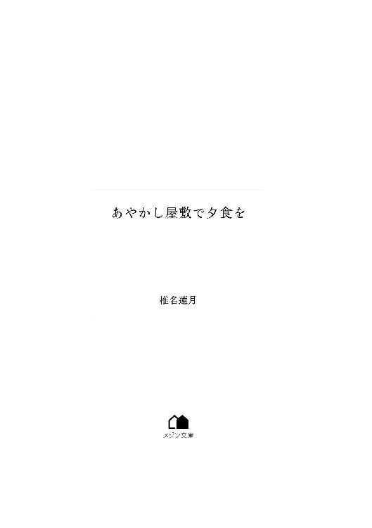
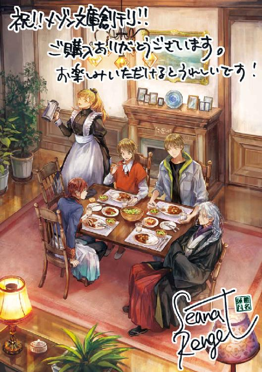

| あやかし屋敷で夕食を【イラスト特典付】 (メゾン文庫) | |
| 椎名 蓮月 | |
| 一迅社 (2018) | |

ちいさな手だった。
（旭。妹よ）
疲れているように見えたが、母は微笑んでそう言った。
母の抱いている、ちいさな赤ん坊。
旭はおそるおそる、母に近づいた。
ベッドに入ったままの母は、そっと旭に赤ん坊を見せる。
きのう生まれたばかりの赤ん坊は、ふやふやと声をあげた。ちいさな手が、何かを求めるように顔の前でさまよっている。
（ちっちゃい......）
旭が想像していたよりも、生まれたばかりの赤ん坊はちいさかった。手の指も、顔も、何もかもがほんとうにちいさい。旭はただただ驚くばかりだ。こんなにちいさいのに、赤ん坊はふよふよと動いている。
（旭、お兄ちゃんになったのよ）
母の言葉に、旭は半ば茫然としてうなずいた。
お兄ちゃんになるのよ、と母に告げられたのは半年ほど前だった。そのとき旭は、胸を躍らせた。
赤ちゃんが生まれる。
弟や妹のいる同級生を知っていたから、旭にはそのイメージがすでにあった。だが、そうした同級生の弟妹は、幼くても二、三歳になっていたから、生まれてくる赤ん坊のこともそれくらいだと漠然と考えていたのだ。
だが、生まれたての赤ん坊は、旭の想像よりもっとちいさくて、頼りなかった。
（うん......）
こんなちいさな生きものなのに、だいじょうぶだろうか。旭はそんなことを考えてドキドキした。それほどまでに赤ん坊はちいさかったのだ。
（抱っこしてみる？）
（えっ）
（だって、これからは旭も、この子をお世話するんだから、慣れてもらわなくちゃ）
母は明るく笑ってそう言うと、そっと旭に赤ん坊を差し出した。旭は反射的に両腕を出して赤ん坊を、――妹を受け取る。
（あったかい......）
白い産着に包まれただけのちいさな赤ん坊はとてもあったかくて、あつく感じるほどだった。
（ふ......）
おっかなびっくり抱いた旭の腕の中で、妹はもがく。学校でうさぎを抱いたときのような、そうでないような感じがして、旭は緊張に身をこわばらせる。
（じょうずに抱っこできたわね）
母が褒めてくれる。だが、赤ん坊は身動ぎすると、すうっと息を吸い込んだ。
次いで、めいっぱいにそのちいさな口をあけて、けたたましい泣き声を発する。
（お、おかあさん......）
動揺した旭が助けを求めると、すぐに母親は旭の腕から赤ん坊を抱き上げた。
（びっくりしちゃったのね。あなたのお兄ちゃんよ、有沙）
（ありさ......）
妹の名前を、旭は初めて知った。
（そうよ。有沙っていうの）
（ありさちゃん）
泣いていた赤ん坊は、母の腕に抱かれると、安心したのか次第に泣きやんでいく。お母さんはまるで魔法使いだなと旭は思った。
（有沙、旭はあなたのお兄ちゃんなのよ）
泣きやみはしたもののぐずっている赤ん坊に向かって、母はやさしい声で語りかける。（あなたのことを守ってくれるわ。――お願いしていい？ 旭）
（うん！）
母の言葉に、旭は力強くうなずいた。
妹はこんなにちいさくて、かわいい、ふにゃふにゃの生きものなのだ。守ってあげなければ、傷ついたり、ひどい目に遭ったりするだろう。旭の中にそんな意識が芽生える。
（ぼくがまもるよ、お母さん）
（そう言ってもらえて、安心だわ）
そんな母と息子のなごやかな会話が、うるさい足音でかき消される。それまで微笑を浮かべていた母は、ハッと顔を引き締めた。
（来ちゃったわね）
何ごとかと旭が振り返ると同時に、ひとりの青年がノックもせずに病室にとび込んでくる。
（姉さん！ 女の子だったって？）
それは、旭とは十歳しか離れていない、母の弟だった。旭と有沙にとっては叔父にあたる。
（そうよ）と、母は少しだけ顔をしかめた。（母さんがしらせたの？）
母はこの叔父に対していつも手厳しい。叔父は見た目の涼やかさに反して、おっちょこちょいのお調子者で、何かとやっかいごとを引き起こしているのだった。幼い旭ですらそれを知っていた。
（へへ......それはね）
叔父は愛想笑いをしながら言葉を濁す。（それより、娘ちゃん見せて！）
母は抱いた赤ん坊の顔を、叔父のほうへ向けた。自分のように叔父に抱かせたらどうしようとハラハラしていた旭は、ほっとした。叔父だったら赤ん坊を落っことしかねない。
（おさるさんみたいだ）
それを見て、叔父はあははっと笑った。それから旭の頭に手を置く。
（旭も昔、こんなだったよ、生まれたとき）
可愛い妹を「おさる」と評されて内心で憤慨した旭は、さらに自分もそうだったと言われて愕然とする。
（貴臣だって、生まれたてのとき、もっとしわくちゃでおさるさんみたいだったわよ）
母が肩をすくめて言う。すると叔父は苦笑した。
（やだなあ。姉さんは僕のこと、何もかも知ってるから）
（昔のことならね。でも、今は何も知らないようなものだわ）
母は溜息をついた。（もうわたしはあの家を出た者だから）
（姉さん、旭が生まれたときもそんなこと言ってたね。......そういえば、あれは、僕が今の旭くらいの歳だったかな）
叔父は、旭を見おろした。頭に置いた手で、ぐしゃぐしゃと旭の髪をかき回す。そうされると旭の細い髪は静電気を起こしてぐしゃぐしゃのままになってしまう。父も母もそれを知っているからめったにそんなことはしないが、知っていても叔父は気にしないのだ。この叔父は、そんなふうに無頓着なところがあった。
（でもよかったね！ 姉さんに娘が生まれたから、......）
そこで何かけたたましい音がして、旭はまどろみから引き上げられた。
☆
ガンガンガン、と何かを叩く音がする。
旭はなめらかなシーツの上で目をさました。
頭上にあるのは見慣れた天井ではなく、ベッドの天蓋だ。天蓋がついているベッドは昔、西洋のお城に仕切りがなかったので、周りから遮るために......などと考えながら起き上がる。
ベッドから降り、スリッパに足を入れて、ドアの向こうのけたたましい音を止めるために部屋を横切った。ところでこの部屋は無駄に広い。壁沿いに置かれた書きもの机や、部屋にあわせて設えられた衣装箪笥などの調度があっても、なお広く感じる。
「......おはよう、たまちゃん」
旭がドアをあけると、廊下にはフライパンと麺棒を持ったメイドが立っている。黒い裾の長いワンピースに、白いエプロンドレス、ホワイトブリムまで頭につけて、まごうことなきメイドである。べつにコスプレではなく、これが彼女の制服だ。
「おはようなのだ、アニサマ。目はさめたか」
可愛らしいメイドさんの髪は、ややオレンジ色寄りの黄色である。目の色は金色で、そうした要素だけあげれば彼女は日本人には見えない。しかし顔立ちは丸っこくて、外国人らしからぬ幼さが漂う顔立ちだ。――それ以前に彼女は人間ですらないのだが。
この屋敷の住人は彼女を、たまちゃん、と呼びはするが、正式名は「たまご」だそうだ。「たまこ」ではない。
「ああ、たまちゃんのおかげですっかりね」
旭があくびをしながら言うと、たまちゃんは肩をすくめた。
「そうには見えないが、食事の用意ならできているぞ。身支度を済ませるなら三分でお願いしたい。食堂まで案内する」
「三分？ もう少し」
「では五分。それでも長いぞ。ぬしさまがお待ちかねだ」
そう言われて旭は慌てて再び部屋を横切った。隣の部屋への扉をあける。隣は浴室とトイレと洗面所だ。旭は急いで洗面所で顔を洗って髪を整えた。やわらかい髪なので寝癖がつきやすいが、ブラシを当てるとなんとか奇跡的におさまった。部屋に戻ると、たまちゃんがベッドの上に箪笥から出した服を一式並べていた。
「どうぞ、アニサマ」
最初のうちは着替えまで手伝われそうになったが、今は服を用意される程度で済んでいる。ちなみに服は旭のものではなく、叔父が置いていったものだ。さすがに下着は旭が自分で買い足したが、叔父の服は旭にちょうどいいサイズで、さして古びてもおらず、流行にとらわれないシンプルな様式だったので、持って来た服で足りなくなったときに借りている。というよりたまちゃんが出してきて、衣装箪笥に入れておいてくれる。
たまちゃんがいる前で着替えるのももう慣れた。最初のうちは女性の前で裸になるのはちょっと......と躊躇したが、たまちゃんがただの女性ではないことがしみじみわかってくると、ほとんど気にならなくなる。ねこが室内をうろついているとき、ねこに見られるからと着替えを躊躇する者などいるだろうか。それと同じだ。
「済んだよ。行こう」
服を着替え終えた旭が言うと、たまちゃんは襟が曲がっているのを直してくれた。
「これでどこに出しても恥ずかしくない男前だ。さすがはぬしさまのアニサマ」
たまちゃんは何故か得意そうに言う。
旭は内心で溜息をついた。
その『ぬしさま』が問題だ。
この屋敷は受け容れてもらえていない者が歩き回ると迷う。そのようにしたのだ、といちばん態度のでかい居候はのたまっていた。ちなみにそんな彼がこの屋敷から出るのを旭は見たことがない。たいていは居間に鎮座している。夜もそこにいるらしい。
長い廊下を、たまちゃんは足音も立てずに歩くが、旭のスリッパの音は消えない。しばらく歩いて、一階への階段を降りると電話室の脇に出た。玄関を入ってすぐのホールである。奥への扉をあけるたまちゃんにつづいて、旭はぴかぴかの廊下を歩く。たまちゃんは戸惑っていないようだが、廊下の先は見えない。
廊下の両脇にはいくつも扉があるが、それらを旭はあけたことがなかった。こんなに無数に扉があるなど異状としか思えず、どれをあけてもどこへ出るかわからないと思えたからだ。もしかしたらただ壁に扉がついているだけかもしれなかったが。それに、今回はこんなふうに遠く見えるが、べつのときは、遠くに見えてもにゅうっと突き当たりから近寄ってきたこともある。そのときはさすがに旭も、ぶつかるのではないかと肝を冷やした。
やがてたまちゃんが歩みを止めて、扉の一枚をあけた。
厨房の隣、裏庭に面した食堂は、床は木でなくタイル張りだ。長方形の食卓が置かれ、六人はゆうに座れそうな広さだが、椅子は四つしかない。
書斎側の壁には暖炉があり、それを背にした窓ぎわの席には無表情な少女が座っている。少女といっても彼女はまだ八つ、もうすぐ九つになるはずだ。
その顔は、自分のアルバムに貼ってある小学生のときの自分の顔にそっくりに見え、旭は血のつながりをまざまざと思い知らされる。だが、自分の写真は笑顔だったが、旭は再会してからまだ一度も彼女に笑顔を向けられてはいなかった。
彼女の斜め前には、十四か十五に見える赤毛の少年が座っている。少しだけ長いその赤毛を後ろで結わえている彼は、いつも首の詰まった服装を好んでいるが、きょうもそうだった。高い襟の中国服めいた服装で、髪の色のせいもあって外国人のように見えなくもない。目の色は黒かと思うが、よく見ると濃い藍色だ。可愛らしい顔は、隣の少女の無表情さと反比例して相変わらずにこにこしていた。
「おはよう。ごめんね、待たせて」
旭が挨拶すると、第三の人物、少年の向かい側、つまり少女の隣に座った男が口をひらいた。
「遅いではないか」
尊大な物言いをする男は、人間離れした美貌の持ち主だ。初めて見たとき旭は彼が男なのか女なのか判断できなかったが、しゃべると低い声だったので、すぐに男と察した。黙っていれば、見た者の見たい性別に見える中性的な美貌なのである。
彼は今日は、真っ白な長い髪を後ろで三つ編みにしていた。肌も抜けるように白い。目はふしぎな薄紫をしていて、藤の花びらのようだ。
「すみません」
旭は素直に謝ると、窓ぎわに近い席、少女の向かい側に座った。ここには以前、母が座っていたそうだ。
旭を案内してきたたまちゃんが、隣の厨房から、ワゴンをからから押して食堂に入ってきた。厨房と食堂を通じるカウンターもあるが、家事をするのはたまちゃんひとりなので、ほとんど使われない。
たまちゃんはあざやかな手さばきで、食卓についた旭と少女の前に、次々に食事を置く。
ここは洋館だが、朝食は和食と決まっている。焼いた鯖とごはんと味噌汁、そして少しばかりのたくわんと柴漬け。味噌汁の具はとうふとわかめ。ねぎは決して入っていない。
少年の前に置かれたのは白い液体の入ったコップだけで、白い男の前には徳利と升が置かれた。
「さあ、めしあがれ」
たまちゃんが満面の笑みで告げると、朝食が始まる。旭は手を合わせて、いただきます、と言った。
「......いただきます」
少女がそれを見て、ややむっとした顔をしつつ、同じように手を合わせて呟く。
「それは、なんだ」
旭が味噌汁の椀を手にすると、美貌の男が、少女の皿を見て尋ねた。
「おさかな」
「ひとくち、くれるがいい」
また、始まった。
旭はそう考えつつ、素知らぬふりをして味噌汁を啜った。
ちらりと見ると、少女は求めに応じ、丁寧にほぐした鯖を箸でつまみ、男に向かって差し出す。
すると男は、ぱかっ、と口をあける。
少女はその赤い口へ、箸先を入れ、鯖を食べさせてやった。
「ふむ、なるほど」
咀嚼した男は、うなずいている。
「僕にもちょうだい」
旭の隣に座った少年がそう告げる。少女はちょっと笑って、同じように箸でつまんだ焼き鯖を少年の口に運んだ。
「おいしいね」
「よかった」
自分より年上の相手へ、まるで雛鳥に餌を運ぶ親鳥のように食べものを分けた少女は、明るく笑った。
旭は思わず、その顔をじっと見つめる。
すると彼女はすぐに旭の視線に気づいたのか、笑うのをやめた。そのまま、食事に専念し始める。
自分の幼いころにそっくりな、少女。
だけど彼女は決して、旭に対して笑いかけたりしない。
離れて暮らしていた期間が長すぎたのか。
一緒に暮らすようになって十日ほど経っていたが、妹の有沙は、未だに旭にまるで心をひらいてはくれなかった。
こうなったいきさつは、三月の終わりに遡る。
旭は父と一緒に都内のマンションに暮らしていた。母が実家から帰ってこなくなって、六年が過ぎていた。
父の病気が発覚したのは夏休みに入る前だった。すでに末期と余命を告知され、旭はなすすべもなく茫然とした。
当人はひどく落ちついていて、それから年内のうちに、財産をすべて旭に生前贈与した。財産といってもちょっとした不動産と、住んでいたマンションの名義、それに幾許かの現金だ。
そのように事務処理を始めた父があまりにも冷静なので、旭も冷静になるしかなかった。まだ五十代になるかならずだったというのに、父は死ぬことを受け容れているようだった。
学費や生活費などはすべて遠縁の弁護士を代理人としてまかせたので不安に思うことはないと、旭を勇気づけてくれた父は、年が明けるとホスピスに入った。在宅ではなく施設を選んだのは、万が一自宅で息を引き取ると旭がそれを思い出してつらいかもしれないからと言った。
気遣いばかりの苦労人の父だった。学生のころから働いて、ちいさな事務所を持つに至ったが、それも部下でもっとも信頼できる相手に譲り、旭にはその事務所の権利をわずかに残して、微々たるものではあれ収入があるように取り計らってもくれていた。
親を亡くした学生は、学費が払えなくなって在学先から中退しなければならない場合が多い。そういう意味では旭は幸運だっただろう。だから不幸ではないと自分に言い聞かせた。
そんな父が亡くなったのが二月で、父が取り計らったもののいろいろと雑事は残り、それらの手続きがすべて終わったのが三月の下旬だった。留年も休学もせずに済んだ旭は、年度が変われば三回生になる。自分は今後、どうするべきなのか。
父は死んだが、母と妹はどこかで生きているはずだ。父が死んだことを知らせなければならないのではないか。
母は妹を連れて実家に帰ってから戻ってこない。連絡もない。だから実家にいるのかもしれないが、旭は、母の実家がどこにあるか、おぼろにしか憶えていなかった。なんとかしてあの家へ辿り着かねばならないが、父ののこしたものの中に、母の実家の住所やその連絡先などはまるでなかった。
今さらのようにそれに気づいて、どうすれば母に連絡できるだろうと、ぼんやり考え始めていたときだった。
大学も春休みに入っている。用があって登校したものの、急いで帰る必要はもうない。それがわかっていたはずなのに、どこに寄ることもなく明るいうちに旭は帰宅した。桜が咲き始めていたが、前は父の職場の花見にまぜてもらうのを楽しみにしていたものだが、旭はそれを見てもなんとも思わなかった。
自宅は家族型のマンションだ。両親がまだ若いうちに住みついたマンションは、だからリビングやダイニングキッチンなどのほかに寝室が三室ある。妹が生まれたころ、大きくなったらひとりひと部屋ずつにすると母は楽しそうに語っていた。
今はそこに住んでいるのが旭だけなのだ。父が入院してから旭は、この家がこれほどにがらんとしていたのかと思い知らされていた。
さびしくないと言えば嘘になるし、この部屋数は自分だけでは持て余してしまう。
旭は父がホスピスに入ってからＬＤＫで生活していた。寝るのも居間だった。自分の寝室で横になるとあまりにもしずかで逆に寝つきにくく、寝る直前までＴＶをつけていたかったのだ。自室にＴＶはない。
帰ってすぐに居間のＴＶをつける。午後になるとドラマの再放送が流れているので、それを見るでもなくぼんやりしていたときだった。
パタパタと居間の出窓を叩く音がして、ぎょっとした。マンションは六階である。鳥でもぶつかったのかとおそるおそる窓に近づくと、そこにはねずみのような生きものがいて、ちいさな手で窓硝子を叩いていた。
「ああ、やっと着きました」
何ごとかと旭が窓をあけると、そのねずみのような生きものがしゃべった。旭は目を丸くした。父がいなくなって、その喪失感で自分の頭がおかしくなったのかとそのときは思った。
「あなたが藤塚旭さんですよね」
「......そうですが」
旭は、夢でも見ているのだろうかと思いつつ答えた。
「小生はこういう者です」
ねずみのような生きものは、短い手を後ろにやると、背中から何かを取り出して旭に差し出した。旭は反射的にその木の葉っぱを受け取った。そこにはぐにゃぐにゃとした線で何かが書かれていた。読めるはずもないと思ったのに、読めた。
「ももんがの、もみ」
「ああ、読めましたか。よかった。ふつうの人間ならば読めないところですが、さすがはあのご主人さまの甥御さまですね」
「甥御......え？」
旭は首をかしげた。
苦労人の父は天涯孤独で、父方の親戚はいない。葬式にも同じマンションの管理人や近所の知人のほかは仕事関係の来客ばかりで、身内は誰も来なかった。だから旭を甥と称する者は、母の弟しか心当たりはない。
「貴臣さんの、ももんがなの？」
これは夢だと決めつけて、旭はももんがに問いかける。いつの間にかソファで眠ってしまったのだろう。父が帰ってきたら起こしてくれる......そうか。もう、父さんはいないんだ。
「あなたのおっしゃる貴臣さんが、深瀬貴臣氏ならば、そうなりますな」
ももんがは鷹揚にうなずいた。「というわけで、あなたが藤塚旭さまならば、こちらをどうぞ」
もう一度、ももんがは短い手を後ろにやって、今度は封筒を取り出した。どう見ても、ももんがの本体より大きい、洋型封筒だ。どうやってしまっていたのだろう。背中に袋でもついているのか。旭は疑問に思いつつそれを受け取った。やはり夢としか思えない。
「では、お渡ししましたので、小生はこれにて失礼つかまつり、」
「待って！」
旭は受け取った封筒と木の葉を左手に持つと、右手でむんずとももんがを捕まえた。
「な、なんという乱暴狼藉！」
手の中でももんがはじたばたする。旭は左手で持っていたものを出窓の張り出した部分に置くと、窓を閉めた。
「ああっ、何をなさるのです！ 帰れないではありませんか！」
「君、何者なの。これ、貴臣さんからの手紙？」
叔父さんと呼ぶと嫌がるので、旭は叔父を名で呼んでいた。十歳しか違わないんだから、と叔父は言っていたが、その彼とももう長いこと会っていない。
「そのとおりでございますが、小生の役目はあなたに手紙を渡すことでして、それ以上は何も承っておりません」
「叔父さん、今どこにいるの？」
「それも申し上げられません」
ももんがはじたばたしながら答えた。
「どうして」
じっと見ると、ももんがはますます慌てたようだった。じたばたがさらに激しさを増す。
「おやめください。あなたの目は力があります。そのように力を使われると、いくらご主人さまの寵愛を得た式神とはいえ、何もかもしゃべってしまいそうになりますうううううう」
「式神？」
「は、はぃ......」
ももんがは蚊の鳴くような声を出した。「小生は、ご主人さまと縁を結んだ、式神にございます」
「式神って何？ どういうこと？」
それが伝奇小説に出てくる用語なのは旭も知っている。だが、このももんががそれというのは、どうにもイメージにそぐわない。だからこのももんがが用法を間違えているのではないかという疑いをもって尋ねた。
「何、とおっしゃられましても......我々のような人外化生、ひとはあやかしと呼ぶ者が、力ある人間と契約して仕え、また使われるようになったもののことをそう称します、はい」
ももんがはじたばたするのをやめた。ちんまりした可愛らしい目で旭を見上げてくる。そのさまはひどく愛らしかった。
「あやかし......妖怪みたいなもの？」
漠然としか知らない単語が次々に出てくるので、旭としても問うのをやめられない。
「はあ、そうともいいますね」
妖怪というと、もっとおどろおどろしいものを想像していた旭にとって、このちんまりとしたももんがが『妖怪』とはとても思えなかった。しかし、あやかし、という漠然とした言いようなら、まだなんとなくわかる気はする。
「ですが、今ではあやかしと称することが多いです。なんとなく、言葉がやわらかく、こう、広い範囲を示す印象がありますので......妖怪も物怪も付喪神も精霊も死霊も、それ以外も、すべて人外はみな、あやかし、とお考えいただければよろしいかと」
確かに、妖怪だのなんだのといちいち説明するよりは、あやかし、と括ってしまったほうがふわっとしていながらなんとなく意味は通じる気がした。
「つまり、君は叔父さんの式神として仕えている、あやかし」
「端的に申せばそういうことになりますです、はい」
ももんがはちいさな目をきょときょとさせた。そのさまはどう見ても可愛らしいねずみに似た生きものだ、手の中にいると、ももんがの特徴である体側の皮膜が見えないので、ますますねずみっぽさが増している。
「叔父さんは妖怪と知り合いなの？」
「知り合いというか、あやかしと関わる力をお持ちですので......」
旭は目を丸くした。
「関わる力？」
「ご主人さまのご実家は、もともとそのような術使いを輩出する血筋とうかがっております」
何もかも初耳である。
旭はももんがをそっと出窓の張り出し部分に置いた。ももんがは逃げず、その場に直立して、旭を見上げる。
旭は封筒を手にして、おもむろに封をあけた。中から折り畳まれた便箋が出てくる。封筒と揃いの、洒落たクリーム色の便箋だ。いかにも叔父が好みそうなものだと思いつつひらく。
『藤塚旭さま
元気ですか。僕はあまり元気ではないですが死にそうではないです。』
叔父がどんな字を書くかはまるで記憶にないが、のっけから叔父らしい書き出しに、旭は仰け反りそうになる。
「貴臣さん、死にそうなの？」
叔父とはしばらく会っていない。しかしそれでも旭は、叔父がのらくらした物言いでひとをけむに巻く人物だったことを印象深く憶えていた。姉である旭の母曰く、自分に都合のわるいことは少ししか言わず、のこりすべてをでたらめで済ませるくせがあったらしい。旭の遠い記憶の中で、祖母はいつも、そんな叔父に小言を言っていた。
「はあ......ありていに申せば、あのままでいれば少し危のうございます」
ももんがは困ったようにちいさな手を揉み絞った。
予想が当たっていたので半ば呆れ、半ば驚きつつ旭は先を読み進めた。
『あ、まだ死ぬ気はないのでご心配なく。
ところで死ぬといえばだけど、姉さんが死にそうなんだ。この手紙が届くころにはもう死んでるかもしれない。
でも、間に合うかもしれないから会いに行ってほしい。
それと、姉さんが死んでしまったら、有沙があの家でひとりになってしまうから、できれば一緒に暮らしてあげてほしいんだけど、どうだろうか。
にいさんにはすきにしていいといわれたよ
ではよろしくね
ふかせたかおみ』
最後のほうは何故かすべてひらがなで、出だしの達筆と異なり、書き殴ったような字だった。
にいさんとはもちろん旭の父だろう。父はいつの間に叔父と連絡を取っていたのか。父にはついぞそんな話を聞いたことはなかった。
それより、母が死にそうだという事実に、旭は戸惑った。
母が家を出て行ってからもう何年も経っている。どうして帰ってこないのかと父に一度だけ尋ねたが、事情があって離れて暮らすことになったとしか父は言わなかった。だからそれ以上、旭は尋ねることをしなかった。尋ねたときの父があまりにも悲しそうな顔をしていたからだ。
それと旭は子どもなりに考えた。もしかしたら母はもう父や自分をすきでなくなって、家に帰りたくなくなったのかもしれない、と。そう考えるとあまりにも悲しかったので、母のことを思い出すのはやめていたのだ。
便箋は一枚目が叔父からの手紙で、二枚目に住所が書かれていた。こちらの字は丁寧でしっかりしており、手紙より先に書いていたのだろうと旭は推測した。
住所は都内だが、都区内ではない。いわゆる都下だ。住所から察するに、この家からは電車を乗り継いで一時間ほどかかるだろう。乗り継ぐには混雑する駅を通らなければならないことも旭にはわかったが、すぐに行かねばならないと思った。
母がもし自分や父を疎んで家を出たとしても、妹はまだ幼いはずだ。叔父の手紙のとおり、母が死にかけているのだとしたら、妹はどうなるのか。
「僕はこれから出かけるけれど、君も一緒に来てくれないか」
ももんがに向かって言うと、ちいさなねずみに似た生きものは驚いたようにとび上がった。
「そ、そういうわけにはまいりません......」
「どうして。貴臣さんの式神だから？」
「そのとおりでございます。いくらご主人さまの甥御さまとはいえ、ほかの者の言うことをきくことはできません。甥御さまのいうことをきくように、とも命じられておりませんし......それに、......あのぅ、今からご実家に向かわれるのでしょう」
ご実家、とは、叔父の実家という意味だろう。母の弟だから、言われてみれば祖父母の住んでいた家は、叔父の実家のはずだ。
「あちらには小生、あまり寄りつきたくのうございます。なぜならば、それはそれは大きな......」
ももんがはそこで、声をひそめた。「白い、へびが、いるのでございます」
出窓をあけて桟にももんがを置くと、彼は『お気をつけて』と何度も言ってとび去った。
帰宅したばかりだったので、旭はまだ外出着のままだった。コートをはおり、大学に行くときに貴重品だけ入れる鞄に手紙を押し込むと、肩から引っかけた。
春先で日中はかなりあたたかくなっている。だが帰宅が夜になるかもしれないと考えた旭は、父がいつまでも使っていた古い無地の紺色のマフラーが玄関の帽子掛けにかかっていたのでそれも持った。これは父が学生のころ、母が奮発して贈ったクリスマスプレゼントで質のよいものだと聞いている。父は母が家を出ていっても、ずっと母のことを好きだったのだろうと旭は思っている。
母は、どうだったのだろう。
そんなことを考えながら旭は、家を出て、最寄り駅に急いで行って電車に乗った。私鉄が地下に潜っている路線で山手線まで出る。学生の多い時間帯でまださほど混雑はしていない。そんな中、折り畳み式の携帯電話を開きつつ、叔父の手紙を取り出した。一緒に入れた木の葉を落とさないように住所の書かれた便箋だけを取り出し、確かめた住所から見当をつけた駅名を携帯電話の検索窓に入力する。検索結果で判明した路線と駅名を頭に叩き込みながら手紙を鞄にしまい、乗り換えた山手線は五つほど先で降りた。
乗換駅は、平日の昼間でも行き交う乗降客で混雑している。ＪＲから私鉄に乗り換える改札を通り抜けたが、慣れていないためどのホームから乗ればいいかがよくわからず、旭は駅員に尋ねた。若い駅員が愛想よく答えてくれたので助かった。
路線の始発駅なので、次発電車が行き止まりで停まっている。それを見て、むかしここに来たことがあるなと旭は思い出した。ならばこの路線で合っているのだろう。そう考えて電車に乗り込むと、始発電車なので座れた。
座るとやっと落ちつく。
それまでは乗り換えと、経路が合っているか不安でろくに頭が動いていなかったが、落ちつくと、改めて、母は生きているのか、それとも、......と、気になってきた。
気にはなるが、さほど悲しくないのは、あまりにも急なことで現実味がないためと、長く会っていないからだろうと旭は考えた。
母が実家にいるのはわかっていたが、会いに行こうとしたことはなかった。電話で連絡さえとっていない。幼い旭に正確な住所も電話番号もわからなかったためもあったが、母に会ったりその声を聞いたりすることは父を裏切るような気がしていたからだ。父が何か言ったわけではない。ただ、旭はそう判断したのだ。
会いたいと思ったことはある。だが、旭はやがて諦めたのだ。母に会うことに、妹に会うことに。
だから旭にとって、母や妹は遠くで生きてはいても、死んだと同じ扱いになっていたのだろう。
それが今さら、とも思えているのかもしれない。
だが、母はともかく、妹について考えると、気持ちがざわざわした。
旭が最後に憶えている妹は、ふたつ......三歳にもなっていなかったはずだ。旭が学校に行くとき、母に抱かれて一緒に見送ってくれて、手を振っていた。まだとてもちいさかった。
母が死んだら、妹はどうなるのか、旭には想像もつかない。父は余命告知をされたあとも母や妹については何も言わなかったので、旭もほとんど忘れていた。
列車が動き出す。
特急に乗ったので、すぐに着くだろう。そうは考えながら旭は目を閉じた。
しかし、妹のことを考え始めると、目を閉じているのに頭が冴えてきた。母が死んだのはともかく、妹は元気なのか。いくつになっただろう。確か、旭とは一回り近く違うはずだ。
小学生の女の子が、もしかしたらひとりきりでいるのかもしれない。旭は、母の実家を思い出した。広いが、暗がりの多い洋館だった。曾祖父母が別宅に疎開して、そのままそこに住むようになったという話をぼんやり思い出す。二階には同じような寝室がたくさんあって、すべてに浴室とトイレが別室としてついており、まるでちょっとしたホテルのようだった。一階には祖父の使っていた書斎や、食事をするための部屋、明るい庭に面した硝子張りのサンルームなどがあり、居間の広い窓からテラスにも出られた。背の高い柱時計や暖炉、猫足の長椅子などの調度も、とても古かったがよく手入れされていた。
思い返せば、マンション育ちの旭にとっては別世界のようだった。
祖母の家事を手伝うためにか誰かがいたような気もするのだが、そのあたりははっきり思い出せない。いつもクッキーやケーキを焼いてくれたような女性がいたはずだ。黒い長いワンピースの裾だけが記憶に残っていた。さすがに彼女ももういないのではないか。ほかにとても大きな猫がいた気がするが、その猫も生きてはいないだろう。
死んでいくひとばかりだ、と旭は思った。
旭が初めて出た葬式は祖母の葬式だった。祖父は旭が生まれるまで存命していたが、その記憶はない。
あの家で祖母が亡くなり、その遺品整理で母は実家に向かい、その後、戻らなかった。
電車を降り、駅を出ると、思ったより大きな街だった。駅前にショッピングビルもある。
蘇ってきた記憶を頼りに旭は歩き出した。タクシーを拾うことも考えたが、父がいなくなってから、旭はなるべく節約を心がけていた。父が苦心して遺してくれたもののおかげで生活に苦労はないが、だからといってこのご時世、明るい先行きは見えない。就職するまでは無駄遣いをしないほうがいいだろうとはさすがに思い至っていた。それに、あの洋館までは歩いて十五分とかからなかったはずだ。
午後の街は明るく賑わっていた。平日だが交通量も多く、通行人も多い。旭は朧な記憶を頼りに歩き、しばらくして自分が住宅地に向かっているとわかって安心した。確かこのあたりを過ぎたはずだと気づく。
乗換駅から四十分ほどの街はベッドタウンと化していて、旭の記憶よりアパートやマンションが増えていた。だが道は変わっていない。住宅街に入ってから特徴のある斜めにのびた道を行くと、前方の角に、常緑樹に覆われた敷地が見えた。心臓が跳ね上がる。
あそこだ。
確信した旭は足をはやめた。
そうだ。あの家だ。
最後はほとんど小走りになって、旭は家の前に辿り着いた。
立派な門構えで、古びた表札が門柱に埋め込まれている。『深瀬』は母の旧姓だ。それを確認してから、旭は門の中を見た。
門は古い鉄製で、ところどころが錆びて塗装が剥げている。細い柵のような門扉のさらに奥には洋館がそびえていた。門から少し遠い。塀の内側には大きな木が何本も植えられていて、洋館の屋根に影を落としていた。屋根は色あせた赤いスレート葺だ。中央は円形の玄関で、両翼は煉瓦造りの棟になっている。レンガの壁には蔦が這っていた。
旭は門扉に手をかけたが、内側から閂がかかっていた。あけることはできない。誰かいるのだろうか。動悸がしてくる。ひとまず在宅を確かめるべきだろう。もし母が死に瀕していても、ここしか手がかりはない。
叔父の嘘かもしれないと考えなくもなかったが、どちらにしろここまで来たのなら、母や妹には父が死んだことも知らせなければならないだろう。せっかくやってきて、誰にも会わずに帰るわけにはいかないのだ。
来訪の意を告げるために、旭は門扉についた鉄製の円環を掴んだ。それを二、三度、門に打ちつける。鈍い音が響いた。
誰もいないのだろうか。洋館は静まり返って返事がない。誰も出てくる気配は......
耳を澄ませた旭は、ハッとした。洋館の玄関の扉が内側からあいたからだ。
「......？」
中から出てきたのは、明るい髪色の女性だった。その姿に、旭は見憶えがあるような気がした。だが、そんなはずはない、とも思う。見憶えがあるとしても、最後に会ったときから姿が変わっていないからだ。
彼女は、黒い裾の長いワンピースの上に、白いエプロンドレスを着けている。頭にも白い髪留めのようなものをつけていて、どう見てもメイドだった。
旭は彼女を憶えていたが、彼女はそうではなかったようだ。
「どちらさまですか？」
彼女は不思議そうな顔で旭を見た。「弔問でしたら......」
「ちょうもん？」
一瞬、旭はその言葉の意味がわからなかった。
彼女がそっと玄関を出てくる。足音も立てていない。
「お上がりになっていただいて、かまいませんが」
「たまちゃん？ 誰だったの」
彼女の後ろから、幼い声がした。
「ぬしさま。お客さまみたいだ」
たまちゃん、と呼ばれた女性が、門までの小径で足を止めて玄関を振り返る。
「お客さま？」
半ば閉じかけていた玄関の扉を押して、子どもが出てくる。
小学生だろう。短い髪と幼い顔。どこかよそへ出かける前のように、きちんとしたワンピースを着ている。それが、黒い。どことなく古びた印象を与えるその服装には、飾りは何もなかった。
女の子にしては、やや面差しが険しく見えた。顔つきがきりっとしているからだろうか。しかし旭はその顔に見憶えがあった。子どものときの自分の写真にそっくりだったからだ。少し淡い髪の色も、まったく同じだ。目の色も淡くて、その昔、外国人のようだとからかわれたことを旭は思い出した。
「誰......？」
驚愕した旭が言葉を失っていると、少女は外に出てきた。怪訝そうに目をしばたたかせている。
「僕、......僕、は」
旭はそこで、喉をごくりと鳴らした。なんと言うべきか。
「たまちゃん？ お客さまなら、上がってもらったら？ ミコちゃんのお客さまでしょう」
そこで旭は名乗りそびれた。
さらに奥から、少年が出てきたのだ。
初めて見る少年は、濃い赤毛をしていた。まるで外国人だと旭は思った。それはおそらく、首まできっちり詰まった服装のせいもあったかもしれない。顔立ちは子どもっぽさを残した可愛らしさで、中学生から高校生に移りゆく過渡期の不安定さも垣間見えた。腕や足は長く見えたが、どちらも手首足首が見えないほど長い袖や裾に包まれている。
「みこちゃん......」
彼が誰だろうという驚きもあったが、それ以前に、みこちゃん、という呼びかたにも驚いた。母の名は水琴というのだ。母の同級生が同じように呼んでいた記憶はある。しかし、どう見ても中学生、せいぜい高校生の少年が母をそう呼ぶのに、旭は違和感を覚えた。
「君、母さんの何？」
思わずそう問うと、彼は、えっ、という顔になった。
「母さん？」
「みこちゃんって、母さんのことだろう」
「あっ」
そこでメイド姿の女性が驚きの声をあげる。「もしかして、坊ちゃんか！」
「坊ちゃん、ということは......」
少年が、少し困ったような顔になった。
彼がそう呟く中、メイドさんは門に駆け寄ってきた。閂をはずして門をあけると、驚いたことに旭にとびついた。
「坊ちゃん！ アタシだ！ たまちゃんだぞ！」
ふわりと甘いにおいがする。
姿を見たときはまさかと疑ったが、そのにおいで旭はいろいろなことを思い出した。
祖母を手伝っていた女性。今はメイドだよ、と言っていた。昔は侍女といったんだ、と。
ぎゅっ、と抱きしめられて、旭は懐かしさで胸がいっぱいになった。昔は彼女にこうされると、自分の頭は腹のあたりにあったはずだった。それが、彼女の頭は今は肩のあたりより下にある。それだけ、会っていなかったのだ。
「たまちゃん。誰」
尖った少女の声に、たまちゃんはハッとしたように旭から離れた。
「ぬしさま！ ぬしさまのアニサマだ！」
「あにさま」
振り返って叫ぶたまちゃんに、少女はその言葉を繰り返す。その眉が寄って、少し険しかった顔つきが、ますます険しくなっていた。
「そうだ！ 憶えていないか」
たまちゃんは少女に歩み寄ると、屈んで顔を覗き込んだ。少女の顔は相変わらず険しかったが、どことなく困った色も浮かんでいる。
「......おぼえてない」
「ぬしさま......母君がよく話されていただろう。やさしい兄君だったと」
「......」
少女はたまちゃんから顔を背けた。
「アリサ」
少年が名を呼んだので、旭は確信した。この少女が妹だ、と。
「僕、君のお兄ちゃんだよ。......旭っていうんだ」
旭は門に手をかけて、敷地の中に入った。
とたんに、びりっと全身が痛む。
思わずその場に膝をついた。心臓が激しく脈打ち、呼吸が苦しくなる。いったい何が起きたのだろう。旭はうつむいた。あっという間に冷や汗が額から滴り落ちる。
「坊ちゃん！」
たまちゃんが叫んだ。体じゅうがずきずきと痛み、身動ぎもできなくなる。
「アリサ。だめだよ」
少年の声がした。
「わたしは何もしてない」
「はっちゃんの結界だよ。アリサが入ってほしくないと思ったら、ここには入れないんだから」
「入ってほしくない。知らないひとだから」
「でも、君のお兄さんだって言ってるよ」
少年の、やさしく諭す声。「そうだろう？ 君は憶えてないだけだ。ひとまず、話だけでもきいてみたら」
「......でも、いやなんだ」
「ミコちゃん......お母さんにお別れをさせてあげないか、せめて」
お別れ。
旭はその言葉の意味を問おうとしたが、顔を上げようとした瞬間、全身に痛みが走って気を失った。
☆
広い庭は手入れがきちんとされているとは言いがたく、夏休みに泊まりに行くと、旭は草むしりをやったものだった。
（坊ちゃん、そろそろ休憩したらどうだ？）
むしった草をまとめて置いていると、やさしく呼ばれた。旭はかぶっていた日よけの麦藁帽子を揺らしながら振り返る。
庭に直接おりられるテラスには木のテーブルがあり、その傍らに明るい髪色のメイド姿の女性がいた。彼女は髪は、麦藁帽子の色にも、真夏の太陽にも似ていると、旭は思う。
（たまちゃん）
（ゼリーが冷えてるぞ）
（わあ）
旭は急いでテラスに向かった。見上げると、テラスとつながる居間から祖母が出てくる。
（旭。きちんと手を洗うのよ）
（はあい）
やさしくたしなめられた旭は、麦藁帽子をとって祖母に渡す。庭の端、建物の陰には水撒き用の水道がある。蛇口に取りつけてあったホースを外して手を洗うと、水が冷たくて気持ちいい。近くには石造りの塔があるが、旭はそれを特に気にしていなかった。
（おばあちゃん、手は洗ったよ！）
蛇口をしめた旭は急いで庭を駆け、テラスのテーブルについた祖母に手を差し出した。すると祖母が懐から手ぬぐいを出して手についたしずくを拭ってくれた。
（あっ、アタシがやる！）
慌てたようにたまちゃんが、テーブルをまわって近づいてくる。
（いいのよ、たまちゃん。孫の世話くらい、わたしにもできるわ）
ふふ、と祖母は微笑むと、たまちゃんは、旭が不思議に思うくらい、泣きそうな顔になった。
（たまちゃん、どうしたの？）
旭が異変を察して問うと、たまちゃんは、ぐすっとはなをすする。
（あんなにちいさかったお嬢さまが......孫の世話をしてるから......）
ちいさかった、と言われても、旭にはわけがわからない。祖母はお年寄りだ。祖母を見ると、皺のある顔が旭に微笑みかける。
（おばあちゃん、昔、ちいさかったの？）
（ええ。とっても昔にね）
（どれくらい？）
（そうねえ......何十年も、前よ。今の旭くらいだったころもあるわ）
（ええ......）
旭は考え込んだ。生まれたときから祖母はおばあちゃんだと思っていたのだ。
（誰でも、生まれたときは赤ちゃんなのよ、旭）
（そうなんだ......）
祖母に諭されて、旭は納得しきれないままうなずいた。
（そうだぞ！ ずっと昔、生まれたばかりのときは、とてもちいさくて可愛らしい赤さまだったんだ！）
赤さま、が、赤ちゃんのことなのはもうわかっている。たまちゃんの言葉は少し古いのだ。
（なんでそんなずっと昔のことをたまちゃんは知ってるの？）
それが旭には不思議だった。ずっと昔とは、何年前だろう。たまちゃんはどう見ても、お姉さんと呼べる年齢のように見えたからだ。それが、祖母が赤ちゃんだったときのことを知っているものだろうか。
（なんでも何も、お仕え申し上げていたから......）
たまちゃんはそこで口ごもった。
（旭。おやつをいただきましょう。せっかく冷えているのだもの）
そこで祖母がそう言ったので、旭はそれきり、忘れてしまった。
何故、たまちゃんが、祖母の赤ん坊のころを知っていたか、なんて......
☆
「結界っていってもさ、もうちょっと臨機応変にしたほうがいいんじゃないのかなって、僕は思うけど。というかいつもなら臨機応変でしょ？ 荷物を手渡しで配達してくれるひとは入れてあげるのに」
少年の声で、旭は自分が目を閉じていると気づいた。
「臨機応変だと？ 知るか」
もうひとり、初めて聞く男の声がする。
「これで坊ちゃんが死んじゃったら、ぬしさまはひとりになっちゃう」
これはたまちゃんの声だ。旭は身じろいだ。
「そうなっても、伊吹がつなぎ合わせてくれるだろう」
「そりゃ、できなくはないけど、外傷がないまま死んだら何もできないからね。僕にできるのは、外側かそれに近い、壊れたところをつなぎ合わせるだけなんだから」
死んだ？ え？ と、旭は思わず跳び起きた。
ふいに動いたからか、体がばきばきと痛む。
「いたた......」
呻くと、たまちゃんが慌てて近づいてきた。
「坊ちゃん！ だいじょうぶか」
「たまちゃん......」
旭はエプロンドレスの女性を見上げた。昔と同じ姿のたまちゃんが、そこにはいた。
「ほんとに、たまちゃんなんだ......」
「そうだぞ」
旭が茫然と呟くと、うんうんとたまちゃんはうなずいた。その目がみるみるうちに涙でいっぱいになる。
「大きくなったなあ、坊ちゃん。あんなにちいさかったのに......」
たまちゃんは、目から転がり落ちそうな涙を指先で拭っている。「あっという間だ......ほんとうに、人間はあっという間に大きくなる......」
「そんなこと言うと、たまちゃんが人間じゃないみたいだ」
旭はそう言いながらあたりを見まわした。身に着けていたコートとマフラー、そして鞄は傍らに置かれている。
遠い記憶にある、洋館の居間だった。ふるい天鵞絨張りの大きな長椅子に自分が寝かされているのがわかる。猫足は塗られた金色がほとんど剥げてしまっているが、わずかにそのなごりがあった。
「何を言う。そやつは人間ではないぞ」
その言葉に驚いて目をやると、暖炉の前のひとり掛けの長椅子に座った人物が、じっと旭を見返した。暖炉の上には大きな鏡が貼られており、その前に風呂敷に包まれた箱がある。
その箱に奇妙な違和感を覚えつつ、旭はまじまじと相手を見返した。
まず最初に目についたのは、真っ白な髪である。それが長く垂れ下がっていた。床につきそうだ。そして、顔。男にも女にも見えたが、どちらにしろ、ひどく整ってうつくしい。神々しくさえあった。肌も異様に白いが、それより気になったのは、切れ長の瞳が、見たこともない薄紫をしていることだった。
しかしさきほどの声と物言いから察するに、男とも女とも見分けがつかなくとも男だろう。旭はそう決めつけた。
うつくしい男は、肘掛けに肘をついて手で頬を支え、旭をじろじろと見る。舐め回すような視線が不快だった。
「はっちゃん！」
たまちゃんがくるりとそちらを向く。「何を言う！」
「これはこれは。知らせるのはいやか」
「坊ちゃんは何も知らないから」
「ならば今このときに知らせるがよかろう」
男は目を細めた。たまちゃんがうなだれる。
「何も知らないの」
妹の声に、旭はハッとした。
見ると、たまちゃんの陰になって見えなかった妹が、もうひとつの長椅子からおりて、こちらにやってきた。
「......有沙」
名を呼ぶと、妹は怪訝そうな顔をした。
「知らないひと」
有沙にそう言われ、旭は愕然とする。
「ぬしさま。ぬしさまはちいさかったから憶えてないだけだ。坊ちゃんは、ぬしさまのアニサマの、旭さまだぞ」
「知らない」
妹は頑固に繰り返す。その可愛らしい顔には怒ったような表情が浮かんでいた。
「そういうときは、憶えてない、って言うんだよ、アリサ」
たまちゃんの陰から、少年が現れて有沙の傍に立った。有沙はそれを見上げて問う。
「憶えてないんじゃない。こんなやつ、知らない」
妹が自分に対して、警戒というより敵意めいたものを抱いていることに気づき、旭は愕然とした。
「長いこと会ってないから、そう思っちゃうのもしかたないけど......」
有沙に見上げられた少年は苦笑している。
「伊吹がお兄さんのようなものだから、それでいい。こんなの要らない」
「それはないんじゃないかなあ」
さらに重ねられた妹の言葉に旭が茫然としていると、少年がその場にしゃがんだ。小柄な有沙を見上げるようにして、彼は笑う。
「恥ずかしいのかもしれないけど、せっかく会えたんだから、」
「恥ずかしくない。ずっと会ってなかったから、いないようなものじゃないか」
頭がくらくらしてきて、旭は額を押さえた。妹にひどい言葉を投げつけられたこともこたえるが、可愛い妹の口調が、やや女の子らしからぬことにもショックを受けたのだ。何故、妹はこんなことを言うのだろう。それ以前に......
「あの、」
旭は額から手を離すと、少年を見た。「君は、誰なんだい？ さっき、みこちゃんって言ってたけど、......あれ、母さんのことだよね」
「あっ、そうそう、自己紹介がまだだったね」
少年は立ち上がると、にっこり笑った。人好きのする笑顔だった。見目が可愛らしいのもあって、旭はなんとなく安心感を覚える。
だが、次の瞬間、それは霧散した。
「僕は屍人で、今の名前は伊吹。屍人って、わかるかなあ。死んだ人間なんだけど、術で生き返って動いてるんだ。あっ、でも安心してね。ちゃんと腐らないように防腐加工はしてあるよ！」
少年が差し出した手を反射的に握った旭は、その異様な冷たさと自己紹介にぽかんとした。
「しび......しびと？ えっ？」
「今様に言うとゾンビってやつ？ かな？ で、あっちの尊大な美形が八葉っていって、八枚の葉っぱって書くから、僕たちははっちゃんって呼んでる。彼は白蛇の神さまだよ」
はきはきとした調子で説明されるが、そのほとんどが旭の耳を素通りする。
「しろへび......」
「はっちゃんはアリサを神籬にして喚び出されてるから、アリサはいつか彼に喰べられちゃうんだけど、せめて二十歳過ぎてからにしてくれってお願いはしてあるらしいよ。でも心配だからって、それまでにおなかを空かせたはっちゃんがアリサを喰べないように監視する役目として、僕は喚び出されたんだ。だから僕は、アリサの騎士なんだよ」
つるつると彼が説明するが、そのどれひとつとして旭の中に入ってこない。
「伊吹！ いきなりすぎるぞ」
たまちゃんが叫んだ。「坊ちゃん、びっくりしてるじゃないか」
「でもさっさと説明したほうがいいでしょ。何も知らないっていうなら」
「あの、......いや、その、......」
驚きすぎて旭は言葉が出ない。たまちゃんを見上げると、彼女は困ったような顔をしていた。
「たまちゃん、今の......」
「ごめんなさい」
旭が問いかけると、たまちゃんはその場に膝をついて、頭を下げた。ふわふわの明るい髪が絨毯に広がる。
「アタシ、ずっとずっと末姫さまたちをお守りすると、大旦那さまと約束したのに、守れなかった。ごめんなさい」
「たまちゃん」
有沙がその肩と腕を掴むと、ぐいぐいと引いて起こした。「謝らないで。たまちゃんのせいじゃない」
「だって」
「そうしたのはたかくんだ。そうだろう？」
有沙はたまちゃんに向かって苦笑いをしてみせた。子どもとは思えない、おとなびた表情だった。
「あの......まるで意味がわからないんだけど......しびととか、しろへびの神さまとか言われても......どう見ても人間......だし......」
旭は口ごもる。どう考えてもこの場にいる全員が一致して自分を騙そうとしているとしか思えなかった。
「俺は人間に化けるのは初めてではないが、ひさしぶりでな。人間に見えているならそれでいい」
白髪の男、八葉が威張りくさって言った。
「化けて」
「なんだ、まだ疑うのか」
男は鋭い目を旭に向けた。「まさか本性を見せねば信じぬとでもいうのか？」
「見たくないです、蛇なんか」
旭が思わず言うと、男はムッとした顔になった。
「蛇なんか、とは無礼な物言い。では見せてやろう」
まるで饅頭怖いだなと旭が思った瞬間、男は長椅子から立ち上がった。
その輪郭がぼやける。
「......！」
旭は思わず口を押さえた。
長椅子の前には、人間の胴より太い白い蛇がとぐろを巻いている。白い鱗は微妙に光を帯びていたが、金属の光沢にも似て見えた。
あのももんがが言っていた白いへびとはこのことか、と旭は呆気に取られた。
『どうだ、下郎。これで俺が蛇だとわかったか』
蛇が、その口から赤い舌を突き出した。先がふたつに割れたそれが、ちろちろと動く。旭はぞっとしてすくみ上がった。
しかし有沙はそれへ近づくと、怯えもせずに蛇のとぐろを撫でる。
「きれい」
その声には純粋な賞賛があった。「はっちゃん、こっちのほうがきれいだよ」
『さすがは我が神籬。よくわかっておる』
へびは目を細めると、赤い舌先を伸ばして有沙の頬にふれた。有沙がくすぐったそうに笑う。
『しかし我が美しさには、畏敬の念を抱くヒトがほとんどだ。要らぬ他意を招かぬためには、ヒトの姿に身をやつさねばならん。ヒトの愚かしさにこちらが合わせてやらねばならぬとは、やれ、道化のような気分だぞ』
白蛇の姿が揺らいで、次の瞬間、その場には白い長い髪の男が立っていた。
男は再び、長椅子に腰掛ける。有沙はその傍らに立つと、男の白い頭を撫でた。
「はっちゃん、こっちのほうもきれい」
「そうか。これがそなたの好む姿でよかった」
八葉はいとおしそうに有沙を見る。
「坊ちゃん、だいじょうぶか」
旭が口を押さえていると、絨毯に膝をついたまま、たまちゃんが心配そうに覗き込んでくる。
「た、たまちゃん......」
「うん」
力づけるように、たまちゃんはうなずく。
「どういうこと、なの......」
「六年前だ。大奥さまがお亡くなりになって半年経ったころに、前の坊ちゃん......貴臣さまが」
たまちゃんは怒った顔になった。「力を借りるためにぬしさまを神籬にして、白蛇の八葉......あのはっちゃんを召喚したんだ」
召喚はわかるがヒモロギと言われても旭にはちんぷんかんぷんである。
「ひもろぎ......って、なに」
「神を勧請する場だ。転じて、神に捧げられる対象そのものを指す場合もある」
八葉はあざけるように言った。嘲笑が込められているものの、わからないことを教えてくれるとは親切だなと、旭はぼんやり思った。
「つまり、生贄だね」
伊吹が補足した。
「いけにえ......有沙が？」
「そうだ。俺は喚び出され、有沙を対価として、貴臣に力を与えてやった」
「どうして、そんな......母さんは、止めなかったのか......」
「まさか貴臣さまがそんなことをするとは思ってなかったんだ。相続の手続きで奥さまが出かけるというので、ぬしさまとアタシで留守番していたときだった。ぬしさまがお昼寝をしているから、食事の支度をしていたら、その隙に」
たまちゃんは苦しそうにつづけた。「アタシが目を離したから」
「たまちゃん」
たたっと有沙が駆け寄ってくる。その顔には心配そうな表情が浮かんでいた。
「たまちゃんのせいじゃない」
「でも、アタシは、末姫さまたちをお守りする役目を仰せつかったのに......」
「ふん。有沙が俺に喰われるまでに娘を産めば、おまえは生まれた娘に仕えられるのだろう」
八葉が鼻を鳴らす。呆れているように聞こえた。
「どういうこと......？」
何もかも、旭は知らないことだ。それ以前に、旭が今まで見聞きしてきた経験から判断できないことばかり言われている。
「......その、」
たまちゃんは恥ずかしそうにうつむいた。「アタシ、ずっとぬしさまたちにお仕えしてきたんだ......ずうっと前、から」
「五百年くらいだっけ？」
伊吹が感心したような声を出す。「忠義者だよね」
「五百年って、え......？」
旭が繰り返すと、たまちゃんはうなだれたままうなずいた。
「アタシ、ずうっとずうっと前に、大旦那さまに拾われて......大旦那さまの末姫さまが、アタシのことをめっぽう可愛がってくれたんだ。でも戦乱の世だったから、その末姫さまは、人質同然の身で嫁がないといけなくなって......大旦那さまが心配なさって、アタシも心配だったし、それで、侍女として一緒に輿入れして」
時代劇で聞くような単語がぽんぽんとび出してくる。それが理解できるのは、再放送の時代劇をよく見ていたおかげだろうと旭はぼんやり思った。
「それからずっと、同じ血筋の、末のお姫さまが嫁ぐのについてまわってたんだ」
「えっと......母さんにはついてこなかったのは......」
くだらぬことと思いつつ、疑問に思って旭は尋ねた。
「それは......もうそんな時代じゃないと言われて。奥さまの夫君が、ねこアレルギーだったのもあって......」
「ねこアレルギー」
唐突に出てきた現代語に旭は戸惑った。しかし、言われてみれば父はねこアレルギーだった。旭が拾った猫を連れ帰ったら盛大にくしゃみをしてそのうち苦しそうにしていたので、大急ぎでもらい手を捜したことを思い出す。
「確かに父さんはねこアレルギーだったけど、それとたまちゃんがついていかなかったのとは、どういう関係が？」
そこがまるで通じないので、旭は自分がとてつもなくばかになった気がして問う。
「アタシ、猫神だから」
たまちゃんはそう言いながら、おそるおそる顔を上げた。
「ねこ、がみ」
「うん」
うなずいたたまちゃんの輪郭が、ふるっ、と揺れた。
揺れた輪郭が、べつの形になる。
「えええ......」
旭は思わず声をあげた。
その場に現れた猫は、猫というには少し大きかった。大きすぎた。並みの大型犬より大きい。旭は、いつぞやにどこかの公園で見かけたアフガンハウンドを思い出した。あれに近い大きさだ。
しかしそれほど大きくても、ヒョウなどのほかのネコ科の動物ではなく、その姿形はどう見てもねこだった。そして、不思議なほどに黄色い。つやつやとした、黄色の毛並み。たまちゃんの髪の色に近いが、それ以上に黄色だった。
『これがほんとの姿』
ねこが告げる。『でもこんな大きなねこはいないから、こっちの姿になるときは、ふつうの大きさになるようにしてるけど』
「たまちゃん」
うふふっ、と有沙が笑って、大きなねこの首を抱くと、頬ずりした。「もふもふだ」
うれしそうな妹は、心底からくつろいだ顔をしている。
『最近忙しくてろくに毛繕いもしてないから、ごわごわだろう』
たまちゃんが言うと、有沙は首を振った。
「ううん。たまちゃんはいつももふもふだよ。またわたしがブラシをかけていい？」
『そうだな、そのうちに』
有沙が手を離すと、たまちゃんは再びメイドの姿に戻った。
旭はぽかんとしてしまった。
何も考えられない。巨大な白蛇の衝撃も凄まじかったが、子どものころに世話をしてくれたメイドのたまちゃんが猫の神さまだったと言われても、まったくのみ込めなかったのだ。
「えっと......その、それで......」
「で、おまえは何をしにきたんだ？」
何をどうしたらいいのかと混乱しきっていた旭に向かって、有沙が尋ねる。
旭はそこで、自分がこの家に何をしに来たのか、やっと思い出した。
「僕は......貴臣さんから手紙が来て、母さんが死にそうだからって......」
そう言いながら見ると、有沙は腰に両手を当てて、旭を見おろした。
「お母さんなら、死んだ。お葬式は、もう済んだ」
有沙は暖炉を振り返る。「あそこにいる」
旭は何を言われたかわからず、暖炉を見た。
そして、さきほど、暖炉の上にある風呂敷包みに違和感を覚えた意味を、今さらながらに理解した。
あれは、骨壺だ。
立ち上がると、体が軋んだ。どうしてこんなに痛むのだろう。ふしぎに思いながらも、たまちゃんと有沙を避けて暖炉に近づく。暖炉の前の長椅子に腰掛けた八葉は、旭がゆっくりと近づくのを見て、わずかに目を瞠った。
「これはこれは。俺の結界に拒絶された者は、しばらくは動けぬものだがな」
「......結界？」
旭は八葉を見おろした。
「この家には、有沙が嫌がった相手は入れないよう、俺が結界を張っている。貴様がここに入ってくることを、有沙は拒んだのだがな」
妹が自分を拒んだと聞かされて、旭は暗い気持ちになった。しかし、幼いころに別れたきりの妹にとって、兄の自分は他人も同然で、警戒すべき相手だったのだろう。そう考え直す。
「しかし貴様はもとよりこの家の血筋に連なる者。結界を破って入ってこられたのはそのためだろう」
「僕は、」
旭は口をひらいた。
喉がかれて、うまく声が出せない。
「母さんに、会いに来たんだ......」
「今まで来なかったのに」
有沙の声がした。振り向くと、有沙はじっとこちらを見ていた。
「ぬしさま......」
「だってそうだ。今まで一度も来なかった。お母さんは、やさしいお兄ちゃんだと言ってたけど、会いに来ないのにやさしいわけがないって、わたしは思ってた」
「それは......場所が、わからなくて」
「どうして今日は来られたんだ」
「貴臣さんの手紙に住所が書いてあった、から」
それと......と、旭は口ごもりながらつづける。「父さんが死んだから、それも知らせたくて......」
「夫君が」
たまちゃんが立ち上がった。「いつ」
「先月......」
旭が答えると、たまちゃんがなぜか微笑んだ。
「よかった......じゃあ、奥さまは、向こうで夫君と会えたんだ。きっとそうだ」
その声を聞きながら、旭は暖炉に向き直る。
暖炉の上に鎮座する、ちいさな箱。
この中に母がいるのかと思うと、ふいに胸が苦しくなった。
母に最後に会ったのは、......確か、六年前だ。会ったも何も、一緒に暮らしていて、いつものように学校に送り出してくれた。きょうはお母さんはおばあちゃんのおうちに行くから旭より帰るのが遅いの、ごめんね、と言われた。淋しかったけれど、お母さんはもっと淋しいんだろうなと思ったことを憶えている。おばあちゃんは死んでしまった。
遺品の整理に実家へ出かけていく母は、いつも悲しそうだった。
おばあちゃんは、お母さんのお母さんだ。僕もお母さんが死んだらきっと悲しいだろうから、お母さんは今とても悲しいんだ。そう考えたことを思い出すうちに、旭は自分が泣いていることに気づいた。
会えなくなって、会いに行くのも諦めた。死んだも同然だと自分に言い聞かせた。
会えるときに会いに来ればよかった。
「坊ちゃん......」
たまちゃんが音も立てずに近づいてきた。そっと手を伸ばして、どこからともなく取り出した手ぬぐいで顔を拭ってくれる。その柄に見憶えがあった。祖母の使っていた手ぬぐいだった。いつか、自分の濡れた手を拭ってくれた、手ぬぐいだ。
祖母にも、母にも、もう会えない。どんなことがあったか、話したくても話せない。
「母さんは......どうして」
旭は骨壺をじっと見つめながら、たまちゃんに問う。
「病気だった。癌で、あっという間で......」
たまちゃんは口ごもりながら答える。「まだ若いから、進行が早かったんだと、お医者さまに言われた」
「そうか......」
せめて叔父がもう少し早く知らせてくれればと考えなくもなかったが、先週だったら......もし会えたら、母に、父が死んだことを告げねばならなかったのかと考え、なんともいえない気持ちになった。死に瀕した母に訃報を告げねばならないのは苦しかったに違いない。今の状態がよかったとはとても言えないが、時間は巻き戻せないのだから、最善を尽くすしかない。
「それで、兄君はどうするの？」
居間に満ちた沈黙を破るように、明るい声が問いかける。伊吹だ。
旭はのろのろと振り向いた。兄君とは自分のことだろうと見当がついた。たまちゃんもだが、どうやらここにいる者たちは、言葉が少し仰々しいように思える。
「どうって......」
「ミコちゃんにさようならを言いに来ただけだったらこれで終わりだよね。もうお帰りいただいていいのかなと思ってさ」
そう言うと、伊吹は暖炉の真向かいに取りつけられた、大きな柱時計を見た。年代物の骨董品で、毎朝、たまちゃんがねじを巻いていたことを旭は思い出した。
「伊吹。そんな、坊ちゃんを追い払いたいのか」
「追い払うっていうか......」
たまちゃんがたしなめると、伊吹は肩をすくめた。「アリサがいやそうだから」
「うん、いや」
有沙は間髪入れずにうなずいた。
「い、いやって」
旭は顔をこすってから妹を見た。そこまで嫌われているのかと思うと、どうにかしなければという気持ちになってくる。父も母もいない今、旭にとって妹の有沙は唯一の家族だ。有沙にとってもそうだろう。このままひとりにしてはおけない。
「有沙、僕は君のお兄ちゃんだよ」
「お兄ちゃんなら伊吹がいる」と、有沙は平然と返す。「だからおまえなんか要らない。帰って」
明確に拒絶され、旭はぞっとした。しかし反射的に口を開く。
「その、......僕たちは、ふたりきりの兄妹だから、一緒にいたほうがいい。君はまだちいさいし......ひとりでこんなところにいたらだめだ。僕と一緒に暮らそう」
思わず言ってしまったが、口に出すと、そうせねばならないという思いが強まった。
妹はまだ幼い。両親もいない状態で、ひとりきり、こんな、ひとではないものばかりの家に置いておけない。旭は胸の中でそう繰り返す。
それに、と旭は、白い髪の男へ視線を向けた。
八葉はそれにすぐ気づいて、ふっ、と吐息を漏らした。その顔が、わらっているように、見える。
自分の気持ちを軽んじられた気がして、旭は思わず、じっと八葉を見た。
すると、八葉が一瞬、わずかに目を瞠った。だがそれはほんとうに一瞬だった。
「やれやれ」
八葉は肩をすくめた。「兄妹だ、一緒にいたほうがいいなどと貴様は言うが、そう考えているのは貴様だけのようだな」
「そんなことはない。それに、有沙を喰べるって、......あれは、本気なのか」
旭は、八葉をじっと見て問う。
すると、八葉はどことなく苦笑じみた顔をしながら、顔の前で、さっさっと手を振った。まるで、煙草の煙でも払うようなしぐさだった。
「貴様は有沙のことをどれほど知っているというのだ。ずっと離れて暮らしていた妹の、何を知っている？ ......我々はこれまで、有沙と生活をともにしてきた。そんな我々より有沙を知っていると言うのか？」
「はっちゃんったら、独占欲が強いなあ。気持ちはわかるけど」
伊吹がくすくす笑う。
「そうだ」
たまちゃんの陰で、有沙がうなずく。「おまえ、失礼だ」
妹に睨みつけられ、旭は黙った。
「坊ちゃん......坊ちゃんの心配は、わかるけど」
たまちゃんが、おどおどと口をひらく。「だけど、坊ちゃんと暮らすのがこの家を出ていくという意味なら、アタシもそれは......賛成できない。学校もあるし......アタシたち、ずっとここで、ぬしさまを守ってきたんだ......何も問題はなかった......」
「そのへびがいつか有沙を喰べるって言ってるのに？」
旭が言うと、たまちゃんは悲しそうな顔をした。
「それは......そうかもしれないけど......でも、はっちゃんの気が変わるかもしれないし......」
「何、喰べるといっても、痛みや苦しみは味わわせぬ、丸呑みにしてやろう。それに、たま、おまえの役目は果たせるよう、有沙が子をのこすことも許可してやる」
長椅子にふんぞり返った白髪の男は、尊大に告げる。たまちゃんが困惑の表情を浮かべて八葉を見た。何か言いたげに口をあけたが、それより先に旭は叫んだ。
「なんだってそんなことをあんたに許可されないといけないんだ！」
旭はふだん、おっとりしているとよく言われる。それはあまり声を大きくしたことがないからだろう。父にも、おまえは我慢強いと言われたが、自覚はない。我慢とはストレスを伴うと旭は認識しているからだ。旭が滅多に怒らないのは、何も耐えているからではなく、特に気に留めるようなことが起きないだけだった。
だが、今では唯一の肉親が、いつかこの人外に喰われること、あまつさえ子どもを産んでもいいなどと上から目線で言われて、さすがに頭に血がのぼった。
「それに、有沙を喰うなんて、絶対にゆるさないからな！」
旭は、これまでの人生で記憶にないほどきつく、八葉を睨みつけた。
八葉は、その藤の花びらのごとき瞳をくるりと丸くした。
それから、何かとんでもなくおかしいことでも見聞きしたかのように、声を立てて笑う。
「何がおかしい！」
「いや、いや、これはすまぬ。――のう、伊吹。これは相当ではないか？」
「ぴくりともしないくせに、何言ってるんだか」
名を呼ばれた赤毛の少年は、なんとなくばつがわるそうに呟いた。ふたりのやりとりには、有沙も、たまちゃんも首をかしげている。
「まあ、いい。しかし貴様、ゆるさぬと言うが、どうするつもりだ？」
八葉はにやにやしながら旭を見た。「貴様は取るに足らぬヒトでしかない。俺は今でこそこのような矮小な身になってしまったが、以前は神と祀られたものぞ。貴様ごときにどうこうされるほど弱まってはおらん。そして、有沙は俺に捧げられると決まっている。これは正式な契約だ。神との契約を違えたら、どうなるか、貴様は知らぬようだな」
「神だって？」
八葉の長広舌に、旭の怒りがゆっくりと冷めていく。
「この国には神さまがたくさんいるでしょう。はっちゃんはその一柱だったんだよ」
戸惑う旭に、伊吹が説明した。
中高とミッションスクールに通っていたので、旭にとっては神というと年末近い誕生日のあの神の印象が強い。この目の前の男が神と言われてもただただ首をひねるばかりだ。伊吹の説明で八百万の神に思いあたりはしたが、八葉がそれだと言われてもまったく納得できない。
「この国では神さまに嘘をついたら、祟るらしいよ。よく知らないけど」
伊吹を見ると、ふふっと笑いを返された。八葉は確実に自分と敵対していると、旭は認識した。伊吹は八葉よりよほど友好的にも思えたが、味方とは言えないようだ。よくて中立といったところか。
「坊ちゃん......」
たまちゃんが、悲しそうに見つめてきた。彼女だけは味方だと思いたい。
「はっちゃんの、言うとおりだ」
しかし彼女は、旭の期待を裏切る言葉を口にした。「アタシだって、ぬしさまが喰われるなんていやだ。でも、前の坊ちゃん、......貴臣さまが、そう約束したんだ。ぬしさまを与える代わりに、はっちゃんの力を貸してほしいと」
「つまり、こんなことになってるのは、みんな貴臣さんのせいってこと？」
旭はいきり立った。
叔父の貴臣といえば、最後に会ったのは大学を卒業してさほど経っていないころだったか。当時の旭から見れば大人なのに子どもじみたところがあって、十歳も離れているのに話が合った。旭は叔父をきらいではなかったが、かといってとくべつすきでもなく、体だけ大きい同級生のような感覚で接していた。といっても叔父は頭が悪かったわけではなく、単に子どもっぽかったのだろう。
しかしそんな叔父が有沙の身の上を勝手に決めてしまったと考えると猛烈に腹が立ってくる。あのももんががその叔父の式神だというなら、何がなんでも一緒に連れてくるべきだった。
「そうなるねえ」
伊吹が肩をすくめた。「といっても、僕、喚び出してもらったけど、タカくんのことはよく知らないんだ。とにかく彼は僕に、アリサが二十歳になるまで守ってくれたら願いをかなえるとは言ってくれた。でもうまく言いくるめられた気がするんだよね。僕も、起きたばかりで寝ぼけてたし......」
「ということは、貴臣さんをここに連れてきて、あんたに借りた力を返せば、有沙を喰べなくてもいいってことだな？」
旭が剣呑に尋ねると、ふふ、と八葉は笑った。
「理屈では、そうなるな」
「じゃあ、貴臣さんを連れてくる！」
「ほう」
八葉は眉を上げた。「そうか。では、そうするがよい」
「たかくんがどこにいるか知ってるの」
たまちゃんから手を離したものの、そのエプロンをぎゅっと掴んだ有沙は、どことなく不安そうに問う。
「......知らない、けど」
「だったら無理じゃない」
「無理でも、そうする」
「わたしはどっちでもいい」
有沙はそっぽを向いた。「たかくんのこと、お母さんはいつも困ってたもの。うちにある古いものを引っかき回しては何か持っていってて......もううちを出ていったのに、自分のうちみたいな顔をしてた。......だから、すきじゃない」
「だけど貴臣さまは、いつからか、来るときは、おみやげを持って来てくれるようになったじゃないか......」
たまちゃんが言うと、有沙はハッとしたようにたまちゃんを見た。
「でも、小倉山荘のをぐら山春秋がすきだっていったのに、中村屋の花の色よせを持ってくるんだもん......」
旭は、場にそぐわぬ名称に、さきほどまでの八葉への苛立ちとも憎悪ともつかぬ感覚がすうっと薄れた。
をぐら山春秋も花の色よせも、子どものときによく食べたのを思い出したのだ。少なくとも、中学のころまで、おやつといったら母が出してくれたのはそうした米菓だった。どちらも似た内容の個包装でおいしいので、旭にはほとんどどちらがどちらかなど、区別はついていなかった。
「貴臣さんは、ここから出ていっていたのか......」
だが、それより重要な情報を、確かめるつもりで旭は繰り返す。
「就職をしたときに、職場の近くに部屋を借りて」
「その部屋はどこかわかる？ わかるなら、教えてほしい」
あの叔父が就職できたことに驚きつつ問うと、たまちゃんはうなずいた。そっと有沙の手をエプロンからはずすと、居間を出ていく。
「すぐに見つかるといいな」
八葉が微笑んだ。こんなときでなければ見とれていただろう。それほどにうつくしい表情だった。
たまちゃんは、古びた住所録を持ってきた。昔、黒い電話器の脇に置いてあったものだと、旭はぼんやりした記憶を掘り起こす。黄ばんだ分厚い紙から、深瀬貴臣と記された住所を、旭は携帯電話の写真機能で撮影し、念のため、鞄に入れていたノートにも書き記した。
「今って便利な時代なんだね」
伊吹が、旭の携帯電話をめずらしそうに見て言った。「写真機は知ってるけど、そんなのでも写真が撮れるなんて」
旭はそれになんと答えていいかわからなかった。この古びた薄暗い洋館にいると、今が二十一世紀に入って数年は経っている気がしない。昭和どころか大正かそれ以前の時代のようにさえ思えてくる。伊吹がカメラではなく写真機と言ったせいもあるだろう。
「じゃあ、行ってくるけど」
「べつに戻って来ずともよいぞ」
居間を出ようとする旭に、八葉は声をかけた。旭は少しばかりむっとした。この男はひとを不愉快にさせるのがうますぎる。
「坊ちゃん、出るなら案内する」
たまちゃんが住所録を手に、先に立った。旭はコートと鞄を持つと、それにつづいて居間を出た。
居間を出ると、長い廊下だった。ひどく暗い。そう思うと、たまちゃんが壁をさわって電灯をつけた。とたんに、ぴかぴかに磨かれた床が照らし出される。そこで旭は言葉を失った。
廊下は、どこまでもつづくように見えた。いや、突き当たりに壁があるので、永遠につづくわけではない。だが、旭が憶えているより、ひどく長く感じられたのだ。廊下の両脇には、一定の距離を置いて扉がいくつもついている。
「この屋敷、はっちゃんの結界に完全にゆるされていない者が一緒だと、こんなふうになるんだ」
先に立って歩くたまちゃんが、振り返った。
「こんなふうに......？」
「住人以外が入ってくると、絶対に迷うし、ひょっとしたら出られなくなってしまう。泥棒が入ってこないようにしたと、はっちゃんは言っていた」
それはすごい警備システムだなと旭は思ったが、つまり自分が拒まれているのだとも気づく。
「たまちゃん、いろいろ訊きたいことがあるんだけど」
「うん。でも、外に出るまで待ってくれ」
たまちゃんはうなずくと、ずんずんと先を急いだ。
驚いたことに、遠くに見えた突き当たりが、その数歩先で目の前に迫ってくる。たまちゃんは驚きもせずに慣れたしぐさでその角を右に曲がった。旭も急いでそれにつづく。振り返ると、後ろが壁になっていた。どういうことか。旭は俄に恐怖を覚えた。
次にたまちゃんは廊下を左に曲がった。すると、突き当たりに扉が見えた。たまちゃんはその扉をあけて中に入った。
いや、中に入ったと思ったら、玄関だった。
旭は、自分が玄関から入ってすぐのホールに立っていることに気づいた。半円形の玄関が目の前にある。見上げると、昔の記憶通りに天井は円形で、窓にはめ込まれたステンドグラスから色とりどりの光が落ちてきていた。
玄関の半円と合わせると完全な円形になるように、ホールも半円になっている。その両脇には階段と扉があり、右側の扉は硝子戸だった。中は電話室のようだ。ガラス越しに、今どきめずらしい黒電話が見える。その前には椅子も置かれていた。たまちゃんはその硝子戸をあけて電話器の傍に住所録を置いた。
「坊ちゃん、外へ」
たまちゃんはそう言うと、タイル張りの三和土に置かれたサンダルに足を入れた。旭は、きちんと置かれた自分の靴を履いて、たまちゃんのあとから外に出る。
まだ外は明るいが、もうすぐ夕暮れになるだろう。
「たまちゃん」
呼ぶと、門扉に手をかけてあけたたまちゃんが振り向いた。彼女はそのまま、門扉の隙間から外に出た。それから旭を手招く。旭も外に出た。
「坊ちゃん。アタシも、ぬしさまが喰われるのはいやだ」
たまちゃんは門を閉じると、真剣な顔で旭を見上げた。「奥さまは、諦めていたけど」
「母さんが......諦めてた？」
「うん。神さまと約束したら、どうしても違えられないって」
たまちゃんはひどく悲しそうな顔になった。
旭は寒気を感じた。持ってきたコートを慌ててはおってマフラーを首に巻き、鞄を肩にかける。
「それに、貴臣さまが、生贄にしたぬしさまと、喚び出したはっちゃんを結びつけてしまったから、引き離すことはできないと。......その結びつきをほどけるのは貴臣さまか、同じくらい強い術使いでないとできないとも言ってた」
「術......使い？」
旭は思わず目をしばたたかせた。
たまちゃんがうなずく。
「術を使う者だ」
「術って、なんの」
「アタシたちみたいなあやかしを使役したり、......死んだ人間を見られたり言葉を交わしたり、ほかにもいろいろする力を持ってる人間のこと。もちろん、力があるだけではだめで、使えるように修業しないとあまり意味はないけど」
たまちゃんの説明を聞きながら、旭は頭を掻いた。
薄暗い洋館の一室で聞かされたなら、旭も雰囲気に呑まれて納得していたかもしれない。
しかしこうして外に出てみると、少し寒いが突き抜けるような青空で、明るい午後の光が射している。たまちゃんが真剣な顔をして語っても、現実としてにわかには信じがたかった。
「そういう特殊能力を持ったひとがいるってこと？」
「アニサマもそうだろう」
「えっ」
アニサマとは自分のことだろう。しかし、自分もそのような力があると言われても、旭はただただぽかんとするばかりだ。
「そ、そうなの......？」
「奥さまもそうだった。ぬしさまもだ」
きっぱりとたまちゃんは言い切った。
「えええ......」
旭は戸惑った。「でも、......その、死んだ人間が見えるってさっき言ってたけど、僕、幽霊とか見たことないよ」
「アニサマはそういうのがいないと思っているのだろう」
たまちゃんは苦笑した。
旭は少し考えた。
確かに、キャンプで肝試しをしても、怖かったことなどなかった。自分の家なのに、夜中にトイレに行くのが怖いという同級生の話を聞いても何が怖いのかわからない。女の子たちが、霊感がどうのという話をしていても、脳が都合よく思い込ませているだけだと考えるだけだった。ひとは見たいものを見たいように見るのだ。そこにあると思えばなくても見える。
もちろん、そうした話を聞いていちいち否定するほど野暮ではない。要するに旭は、見えるか見えないかがひとによって異なる存在を認めてはいなかったし、まるで興味がなかった。
「だって、いないよね。見たことないし、......まあ、見えるって言うひとまで、僕は否定するつもりはないけど、僕に見えないものを見ているとしても、僕には見えないんだから、関係ないというか......」
もごもご言うと、たまちゃんはおかしそうに破顔した。
「アニサマ、相変わらずだな！ 自分が興味のあること以外には関心が薄くて困るってむかし奥さまが言っていたぞ」
そう言った笑顔が、突然に歪む。「奥さま......前のぬしさまは、......嫁ぎ先に侍女を連れて行く時代じゃないし、夫君がねこアレルギーだからアタシを置いていくと言ったけど......ほんとはアタシが要らなかったんだ」
旭はぎょっとした。
「たまちゃん......」
「だけど、アタシは......今のぬしさまがお生まれになって、うれしかった。世話をさせていただけて......これからも、お世話したい」
「だったら、有沙を喰べられないようにしないと......」
「そうなんだ」
たまちゃんは慌てて顔をこすった。「はっちゃんは悪いやつではないが、だからといってぬしさまを喰べられるのは困るんだ。いますぐじゃなくても、今のままじゃ、喰われてしまう。だから......だからなんとかできるなら、してほしい......アタシはこれでも一応、猫の神なのだけど」
ねこのかみ。
「そうか......ねこがみって、そういう意味か。ということは、たまちゃんも神さまなの?!」
メイドの告白に、旭は今さら驚愕する。ただの大きな猫が人間に姿を変えられるだけだと思っていた。そういえば猫神と説明されたが、まったく気にも留めていなかった。
「そうは言うが、神にもいろいろいる。アタシはたいした神じゃなくて、幽神とか呼ばれるときもあるくらいにはちっぽけで、......ろくなこともできない。伊吹も八百万と言っていただろう。神格があるだけで、雑霊のようなもの」
幽神とか雑霊ってなんだろうと旭は疑問を抱いた。しかしそれを問う前にたまちゃんはつづける。
「とにかく、アタシはちっぽけだからはっちゃんをなんとかする力はないし、伊吹は与えられた役目をこなすだけで、ぬしさまが喰われることをどう考えてるかはわからない。......だから奥さまが亡くなって、これからどうしたらいいのかと困っていたんだ。アニサマや夫君がどこにいらっしゃるかもアタシにはわからなくて、さがしようがなかったし......」
たまちゃんはまた、顔を手でこすった。「貴臣さまには本当に困らせられてるけど、アニサマをここに来させてくれたことは感謝している......」
「わかったよ、たまちゃん」
旭はうなずいた。「とにかく、貴臣さんを捜し出して、ここに連れてくる。それで、あいつから借りたっていう力を返させればいいんだろう」
「頼む、アニサマ」
たまちゃんの言葉に、旭は何度もうなずいた。
教えられた叔父の住所は、行ったこともない場所だった。距離だけならさほど遠くはなかったが、路線の問題で少し時間がかかると思われた。
しかしギリギリで通勤客のラッシュに巻き込まれる直前で、旭は路線を乗り継いだ。急行のない路線で、区間がひどく長い。それを途中で降り、駅前の交番に立ち寄って住所を尋ねた。
目当てのマンションはすぐに見つかった。
管理人が在駐していたので尋ねると、教えられた部屋を深瀬貴臣はとうに引き払っており、今は別の借り手が住んでいるという。転居先の住所を尋ねると、実家に帰ったと聞いた、と告げられただけだった。管理人が気の毒そうにしているので、旭はいたたまれなくなり、礼もそこそこにその場から離れた。
どうしたらいいのかわからず、ひとまず自宅に戻ることにした。さすがに再びあの洋館を訪ねる元気はもうなかったのだ。あちこちを行き来して、すっかり疲れていた。それに、いろいろ起きすぎた。少し考えを整理したかった。妹のことは心配だったが、たまちゃんがめんどうをみてくれているはずだ。
帰宅すると、もう陽は暮れている。居間の灯りをつけてカーテンを閉めた旭は、台所に戻って買い置きのレトルト食品で夕食を済ませた。
父とふたりで暮らしていたので料理ができないわけではないが、あれこれと忙しかったので最近はレトルトやコンビニ弁当、そうでなければ格安のチェーン店の定食などで済ませている。節約はしようと思うものの、父が死んでから旭は、ひとりぶんの食事をつくる気力がなくなっていた。自分のことなどいくらでも手を抜ける。大学が始まったら学食だけで済ませてしまうのもいいだろうとまで考えていた。
いつものくせでＴＶはつけっぱなしだ。夕方のニュースが流れているが、まるで頭に入ってこない。旭はそんな中、ソファに置いた鞄から叔父の手紙を取り出した。
改めて手紙を読み返す。手紙と一緒に入れた葉っぱの名刺はそのままだ。旭はそれを手にして呟いた。
「ももんがの、もみ、かあ......」
「お喚びで？」
とたんに耳もとで声がして、手の中から葉っぱが消え失せた。
ねずみに似た可愛らしい生きものが、いつの間にか旭の肩にのっていた。ぎょっとして身じろぐと同時に、ももんがは、肩からひらりと滑空してテーブルに降り立った。
「き、君......どうしてここに」
「お喚びになったからですよ」と、ももんがは平然と答えを返す。「名刺をお渡ししたでしょう」
「う、うん......消えちゃったけど」
「あれは喚び出し券です。おかげさまで窓もすり抜けられました」
「喚び出し券......肩たたき券みたいだね」
旭は目をしばたたかせつつ呟く。
「肩たたき券ってなんですか？」と、もみに問い返され、旭は苦笑した。
「僕が父の日に、父に何もあげられなかったから、自分でつくって渡したんだ......」
何故そんなことを思い出したかというと、父の遺品を整理したときに出てきたからだった。父は旭の渡した肩たたき券を、一枚だけ使わずにとっておいていたのだ。
本人が自分でほとんどの私物を整理してしまったので旭はたいしたかたづけをせずに済んだが、わずかに残っていたものの中にそれがあったことを思い出して、じわじわと悲しくなってきた。
そういえば。
「何もご用がなければ戻りますが......」
「ちょっと待って」
旭は慌てて、むんずとももんがを掴んだ。
「あれぇ、何をなさいますか」
ももんがは、旭の手の中でじたばたした。もふっとした生きものがくにゃくにゃと動くと可愛らしい。もっともふもふしたくなった。
「君にはいくつか訊きたいことがある」
しかし旭はそんな欲求を抑えて口を開く。
「ああ、そのようなご用ですか。お答えできる範囲ならどうぞどうぞ」
可愛い小動物は、じたばたするのをやめた。
「貴臣さんは今、どこにいるの？ 申し上げられないって言っていたけど、答えてくれないか」
「お答えできるものならお答えすると申し上げましたが......それにはお答えしかねますぅ」
つぶらな瞳がきょときょとと泳ぐ。「それに小生は、お教えしたくとも存じ上げぬのです」
「存じ上げぬって、貴臣さんからの手紙を持ってきたのに？」
「喚び出されて手紙を託され、そのままあれこれ心得をうかがってから送り出されたものですから、ご主人さまがどこにいるのか、小生はとんと存ぜぬのです」
「心得ってなんの」
「甥御さまに手紙を必ず直接お手渡しすることと、名刺を渡して一度は喚び出してもらえるようにすることをお命じになりました」
「名刺については僕、知らなかったんだけど」
「それは失礼つかまつりましてございます」
ももんがは丁寧に謝罪した。「貴臣さまの甥御さまならば、そうした儀にも長けていらっしゃるかと思っておりました」
つまり、あの叔父の甥ならば知っていると思ったということか、旭はももんがの言葉をそう解釈した。
「どうして貴臣さんは、僕が君を喚び出せるようにしたんだろう？」
「手紙でお願いした内容をきちんとそのようになさったか知りたいからとおっしゃっていました。して、ご実家にはおいでになったのですか」
旭が喚び出したはずなのに、ももんがが情報を得るために訪れたかのようになっている。旭はなんとなく釈然としないままうなずいた。
「行ったよ。そうしたら、妹が、白蛇にいつか喰われることになってたんだけど」
「おやおや」
ももんがはそのことを知らなかったらしい。その可愛らしいつぶらな目を瞠った。
「もしやあのときの大蛇を喚び出した際、神籬とされたお子が妹さまですか」
「知ってるの？」
旭が、掴んだももんがを顔に近づけると、手の中で彼は再びじたばたした。
「そ、そのように怒気を発されると怖ろしゅうございます」
怒気を発されると言われても、旭に自覚はない。少し息をついて、気持ちを落ちつけてから問う。
「だったら、知ってることを教えて」
「五年......六年ほど前でしょうか。ご主人さまはどうしても、強い力が必要だったのです。それで、術を使ってあの大蛇を召喚し、その力を借りました。そのときの神籬、そして力を借りる代償として、お子を使われたのですが......いやはや。それが甥御さまの妹さまということは、ご主人さまの姪御さまだったのですね」
どうやらもみは有沙のことまでは知らなかったらしい。
「妹を喰われると、困るんだけど」
「そうでしょうとも」
もみはこくりとうなずいた。
「だから、貴臣さんに、その借りた力をあの蛇に返してやってほしいんだ」
「なるほど、事情はのみ込めましてございます」
ももんがはうなずいた。「しかし、お気の毒ですが、小生の判断で申し上げれば、それは無理な話でございましょう」
「なぜ、無理だと」
「貴臣さまは現在、身動きの取れない状態におかれておるのです」
「身動きの、取れない......誰かに監禁でもされてるとでも？」
「ああ、現代はそのように申すのですね」
旭が苛立って口にした言葉を、ももんがは肯定した。「どこなのか小生ごときではわかりかねますが、暗い場所でがんじがらめにされて、ほとんどうとうとと眠って過ごしておられます。その場に小生ごときちっぽけなあやかしが、ご主人さまに喚ばれてとはいえ行き来できるのは、ちっぽけすぎて警戒に値しないと思われているからだと、ご主人さまはおっしゃいました」
叔父が監禁されているという事実に驚く旭に、へへん、とももんがは胸をはってみせた。
「ちっぽけって......」
「事実でございます。小生には、このように精々、ものの受け渡しをする往来役程度しか務められませぬゆえ」
もみはちいさな頭を縦に振った。「ちっぽけだからこそ、役に立てるのでございます。式神冥利につきましてございます」
「でも、君が出入りできるなら、誰かに助けを求めることもできるんじゃないの」
役に立てることがそんなにもうれしいのだろうかと、少し旭は気になりつつ、さらに問う。
「そのようなことを頼んだとわかれば、小生など木端微塵にされてしまうだろうとご主人さまはおっしゃっていました。このたびは、甥御さまにお知らせする内容が、些末だから気に留められていないのだとも。その、ご主人さまを幽閉......監禁しているお相手にとって、ですが」
叔父に会えばなんとかなると考えていた旭は、ももんがを掴んだままがくりと肩を落とした。
「じゃあ......有沙はどうなるんだ......」
「神籬であれば贄も同然。ならば妹御もいつかは、借りた力の対価として喰われることでしょう」
ももんがははっきりと告げた。
ほかにもいろいろとももんがに質問したが、たいして収穫はなかった。とにかく叔父は無事だが居所がわからず、閉じ込められた場所で動くこともなく食べることもせず、ほとんどの時間を半ば眠って過ごしているらしい。旭への手紙は、ももんが曰く「めったにない」長く起きていられるあいだに書いていたようだ。
何がどうしてそんなことになったのか、また、八葉から借りた力がどうなったのかも、ももんがにはわからないようだった。
訊くことがなくなったので、旭はももんがを外に放してやった。
ちいさな生きものが夜空をふわりと滑空して消えていくのを見ながら、旭は考える。
妹を喰べると言うあの男を喚び出したのは叔父だ。しかしその叔父は身動きが取れないという。であれば、妹を守るのは自分しかいない。
妹をこの家に連れてこられればいいのだが、彼女はあのままでは同意しないだろう。
であれば、妹が自分への警戒を解き、心を開いてくれるようにしなければならない。
あの男はなんと言った？ 旭は白い髪の男を思い出した。
（我々はこれまで、有沙と生活をともにしてきた。そんな我々より有沙を知っていると言うのか？）
知っているとは旭には言えない。
しかし、一緒に暮らしておたがいに慣れることができれば、兄妹だから、心を開いてくれるはずだ。
だから、妹が自分に懐くまで、あの屋敷で暮らすしかない。
旭はそう、覚悟を決めた。
翌日、再び訪れた旭が、屋敷に住むと告げると、たまちゃんはよろこんでくれた。
「ぬしさまには肉親がそばにいたほうがいいと思うんだ。アタシは守ることはできるけど、肉親にはなれないもの。今までもずっとそうだった」
「勝手にするがいい」
そうは言いながらも八葉は不快そうではなく、明らかにおもしろがっていた。
「ああ、勝手にする」
「ただ、有沙にこの屋敷の住人と認められなければ、どこへ行くにも迷うぞ」
そう言うと、長椅子にふんぞり返った八葉は、傍らに立つ有沙を見やった。「俺の結界は、有沙の心に左右される。有沙に認められない限り、貴様はいつまでもこの屋敷で迷うだろう」
「それなら、アタシが案内するし......」
たまちゃんがおずおずと言った。「お世話をするのはアタシの役目だから」
「たまちゃんの仕事が増えるね」と、伊吹が笑う。「上の寝室は、みんなお風呂もご不浄もついてて便利だけど、そのぶん、たまちゃんが掃除しないとならないし」
「伊吹。そんな意地悪言うな。それがアタシの仕事だ。仕事がないと困る」
伊吹の言葉に旭が怯んでいると、たまちゃんがたしなめた。
「意地悪じゃない。事実だ」
それまで黙っていた有沙が口をひらいた。「なんでおまえがうちに来るんだ」
有沙は不服そうに旭を見上げた。
旭にとって、有沙は妹である。可愛いと思うし、へびに喰わせたくはない。
だが、有沙は違うようだ。
「なんでって......」
そう言われ、旭は口ごもった。
「ぬしさま。アニサマはぬしさまのアニサマなんだぞ」
たまちゃんは有沙に近づくと、そっと絨毯に膝をついて、有沙の顔を覗き込んだ。麦藁帽子や玉子焼きに似た淡い色の髪がふわふわ揺れる。有沙は口を引き結んで、じっとたまちゃんを見返した。
「家族は一緒にいたほうがいい」
「家族じゃない。だって、知らないから」
「知らないなら、一緒に暮らして、知り合いたいな、僕は」
旭がおずおずと話しかけると、有沙はむっとした顔になった。だが、何も言わない。
「......ぬしさま」
たまちゃんが困ったように笑う。「ぬしさまがまだ赤さまだったころ、アニサマはとても可愛がってくれたんだぞ」
「憶えてない」
即座に有沙は返した。
「憶えてなくても、そうなんだ」
たまちゃんが切々とかき口説く。「それに、ぬしさまはまだ子どもだろう？ 子どもがひとりだけで暮らすのは、まずいと思うんだ、アタシ」
「ひとりじゃないでしょ。たまちゃんがいる。はっちゃんも、伊吹も」
有沙は頑固に言い張った。
「それでも、......アタシたちは人間じゃないから」
たまちゃんは、少し残念そうに、それでもなんとか笑顔をつくった。「ぬしさまのお世話をするだけなら、アタシがいれば充分だ。でも、......お世話はできても、ヒトの世の理にはそえない。ぬしさまはどうあっても人間だ。だから、人間として生きるためには、誰かアタシたち以外に、人間がいたほうがいい......」
有沙は押し黙って、じっとたまちゃんを見返した。
「どう思う、伊吹」
八葉がちらりと、窓ぎわに立つ伊吹を見た。
「どうって、めずらしい」と、伊吹は目を丸くして八葉を見た。「はっちゃんが僕に意見を求めるとは」
「何を言う。俺とて、同じ屋根の下に住まう者として、おたがいのために、おまえの意見を採り入れることもなくはなかったであろう」
「なくはないけどめったにないことじゃない」
「おまえの意見を求めぬのは、そのように減らず口が多いからだ」
八葉は鼻を鳴らした。「それよりおまえは、この無礼な有沙の愚兄がこの家で暮らすのは、不快ではないのか」
「僕の役目は、はっちゃんが姫君をつまみ食いしないように守るだけだからなあ。それ以外はべつに......どうでもいい、かな」
伊吹は八葉の問いにそう答えると、肩をすくめた。
その間も、有沙とたまちゃんは見つめ合っていた。しかし、有沙が口をへの字に結んでうんともすんとも言わないので、再びたまちゃんが口を開く。
「ぬしさま、それに、......アニサマも淋しいんだ。夫君が......父上を亡くされたばかりだ。ぬしさまも、同じだろう。母上を亡くされて、淋しいだろう......」
「たまちゃん」
泣きそうになったたまちゃんに、有沙が焦ったような顔になった。「ごめんね」
「ぬしさまが謝ることじゃない。これはアタシが悲しいだけだから......」
「たまちゃんがそうしたほうがいいって言うならそうしてもいい」
有沙は早口で告げた。「だから、泣かないで」
「......泣かない。もう、アタシのぬしさまは、ずっと前からぬしさまだもの」
ふたりのやりとりの意味がまるでわからず、旭は戸惑うばかりだ。
「わたしはお母さんみたいにたまちゃんを置いてかないよ。だから、安心して」
有沙の言葉に、ああ、と気づく。
たまちゃんは、母に要らないと言われたと思い込んでいるのだ。実際にはどうだったのかわからない。父はほんとうにねこアレルギーだったし、侍女を連れて嫁ぐなど、現代ではよほどのことがなければありえないのも事実だ。
だとしてもたまちゃんは、母に嫁ぎ先へ連れて行ってもらえなかったのが、悲しかったのだ。
有沙は、そんなたまちゃんを労っている。
自分への態度がけんもほろろであっても、有沙の気質が乱暴だったり情緒に欠落があるわけではないと、このやりとりで旭は気づいた。
同時に、つまりこの場にいる者の中で、自分だけが妹に忌避され......いや、嫌われているのだと、認めざるを得なかった。
妹がどうして自分を嫌っているのか。
だが、嫌われていても、自分にとって妹は可愛い妹だ。
再会したばかりで嫌われるようなことなどしていないのだから、何か誤解しているのだろう。
妹を大蛇の魔手から救うのはもちろんのこと、誤解をといて、兄妹として仲良くなることがまず当面の目的だ、とそのとき旭は考えた。
旭は、二度めに屋敷を訪れたとき、着替えなど身のまわりのものを最小限しか持っていかなかった。
しかし住むことを告げて、有沙に渋々ながら受け容れられ、屋敷で生活を始めると意外に物入りで、旭は一度マンションに戻って、自分がいつも使っていた歯ブラシやら下着などの生活用品を運び出すはめになった。
そんなわけで、生活がやっと落ちついたのは四月に入ってからだった。春休みが終わった有沙は学校に行くようになり、その後、旭の大学も始まった。
深瀬の屋敷から旭の大学までは、マンションから通学するより時間がかからなかった。駅までは急いで歩けば十分で着くし、電車は二十分ほどで大学の最寄り駅に着く。地図で見ると、直線距離ならばさらに近かった。
三回生になる旭の通う大学は郊外に移転して十年足らずだ。カフェテリア形式の学生食堂は本館の裏手にあって、まだ建物も新しく、晴れの日は広い窓からふんだんに陽光が入ってきらきらと明るい。陽に灼けるのを避ける女子学生たちは窓ぎわの席に寄らないほどだ。窓にはロールカーテンも取りつけられているが、以前に不器用な学生が操作して壊したこともあったので、学生が触ることは禁じられていた。
だからその日、旭は窓ぎわの広いテーブルに腰掛けて、ひとり淋しく定食を食べていた。
いつもなら特に味に文句はなかったが、このところずっとたまちゃんの手料理を食べているからか、まずくはないが味が濃く感じられた。たまちゃんのつくる料理は味つけが薄い。また、本人曰く、猫神はほぼねこと同じ性質で、人間の姿をしていてもそれは変わらないという。だからねこが食べられないものをたまちゃんも口にできず、味見をしながら調理する彼女のつくる料理はだいたい薄味で、ねぎ類などが入っていない。調味料も最低限らしい。味見をしなくてもいいのではと旭は思ったが、毒味役も兼ねていると言われれば、なんとも言えなくなった。
「藤塚」
呼ばれて振り返ると、同じゼミの宮野が、トレイを手にしてこちらにやってくる。
「ありがとう。ひさしぶり。元気だった？」
旭が隣の椅子を引くと、宮野は笑顔でそう言った。
少し気弱げな笑顔を見せる彼が、今のところ旭が大学でいちばん親しくしている友人といえるだろう。とはいえおとなしそうにみえて顔が広い宮野にとって、旭はぎりぎりで友人か、もしかしたら知り合いレベルかもしれないが。そして彼は気質は穏やかだが、外見の印象ほど気弱ではなかった。
「まあまあ」
春休みがあけたばかりで、キャンパス内は学生もまばらだ。新入生はオリエンテーリングがあるので、まだこの学食まで姿を現してはいないらしい。
「だったらよかったよ」
宮野は気遣うような笑みを見せた。この穏やかな男は、旭が父を亡くして奔走していたことを知っている。彼の気遣いが、旭にはありがたかった。
「旅行はどうだったの」
話題が湿っぽくなることを避けて、旭は先に問いかけた。春休みのあいだ、宮野はサークル仲間と撮影旅行に出ていたのだ。年のはじめに、免許を持っているなら運転してくれないかと旭も誘われたのだが、父のこともあって断っていた。
「それなりに楽しかったよ。藤塚も来られたらよかったのにと、水島が言ってた」
宮野のいるサークルは写真が趣味の集まりで、女子もいなくはないが中核は男子学生ばかりだ。
サークルのリーダー格の水島は社交的な性格で、旭にもやたらと声をかけてくる。最初はサークルにも誘われたが、家のことで忙しいからと旭は辞退していた。たぶん水島は、ひとに拒まれても特に気に留めないのだろう。それ以来、何かと声をかけてくる。
旭は、人当たりがいいと言われることが多いが、あまり他人とつるまない。親しい友人も、宮野を頭に数えるほどだ。
それは、自分の家の話をするのがわずらわしいためだった。母親が別居している家庭などさしてめずらしくはないだろうが、別居しているだけでなくずっと会っていないこと、どこにいるかも知らないことをも語らなければいけなくなるのを、旭は避けていた。最初から話さなければいいのだが、つきあいが深くなると家族の話はどうしてもふれずにいられなくなる。そこですでに故人などと適当な嘘をつけるほど、旭は器用ではなかった。
だが、それももう気にしなくてもいいだろう。母は死んでしまったのだ。
「いい写真は撮れた？」
「少しね。まだ雪が残ってて、車ではたいへんだったよ」
宮野は食事をしながら、ぽつぽつと旅行の話をしてくれた。二台の車に分乗して東北に行ったのだが、途中でぬかるみにはまって動けなくなり、車を押さねばならず、洒落者の内山が泥だらけになってぶつぶつ文句を言っていたと聞いて、旭は思わず笑ってしまった。
「楽しかったみたいだね。よかったじゃないか」
「僕は妹のお土産に何がいいかわからなくて、困ったよ。結局、仙台でずんだもちを買って帰ったけど」
妹、と聞いて、旭はハッとした。
「そういえば、宮野、妹、いるんだっけ......」
「うん。可愛いよ」
宮野はそう言うと、上着のポケットからごそごそと携帯電話を出した。折りたたみ式のそれを開くと、何やらぽちぽちと操作して、小さな画面に写真を表示して見せてくれる。
「今年で六年生なんだ」
画面に映った少女の写真は、確かに宮野が自慢するだけあって女の子らしく笑っていた。肩までの髪をツインテールに結っている。顔立ちは宮野と似通っていたが、とても女の子らしい。
「その......訊きたいことがあるんだけど」
「え」
宮野がめずらしく、さっと表情を変える。「もしかして、妹を紹介してほしいとか言うんじゃないよね」
予想だにしない答えに、旭はどっと疲れた。穏やかで物わかりのいい宮野とは思えない、とんちきな返答だった。
「いや......そうじゃなくて」
「だったらいいけど」
宮野はほっとしたように顔をゆるめた。本気で安心したようだ。
「実はさ」
どこから話せばいいのだろう。旭は迷ったが、最初から話すことにした。
「話すと長くなるけれど......僕の母は、僕が中学生のときに実家に戻ってしまって、それ以来、会ってなかったんだ」
「え......そうだったんだ？」
こんな話は、高校に入ってから誰にもしていない。旭が告げると、宮野がやや困惑した表情を浮かべる。しかし、話し始めてしまった以上、そこでやめるわけにもいかなかった。
「それが、三月に亡くなってて」
「......え」
さすがに宮野が気の毒そうに旭を見た。「藤塚、その......なんと言っていいか」
「いや、気にしないで。僕が話したいのはそこじゃなくて」
旭は、さらに何か言いかけた宮野を遮ってつづけた。「母は妹を連れて実家に戻っていたんだ。妹はそのとき、二歳だったんだけど、今年で八歳......九歳になるんだよ」
「だったら妹さんは、今、お母さんの実家に？ おじいさんたちと暮らしてるの？」
宮野が目を丸くした。さすがに情報量の多さにのみ込みきれないように見えた。
「いや、母方の祖父母はもう亡くなってる。それで......妹はまだ小学校の途中だし、母の実家には家事を手伝ってくれるひとがいるけど、いろいろ考えて、僕が母の実家で暮らすことにしたんだ」
「じゃあ藤塚、引っ越したってこと？」
「引っ越したというより、一時的に滞在してる。うちは、......うちがあるマンションは、父が初めて建設に関わった建物だから、引き払いたくないし、できれば最終的には、妹には僕のうちに来てもらおうと思ってるんだ」
宮野は目を丸くした。
「そのほうが、......いいのかな。よくわからないけど」
「でね」
ここからが本題だ。宮野が話しているうちに食事を終えていた旭は、箸を置いた。
「妹に好かれるにはどうしたらいいか、教えてほしいんだ」
宮野は目をしばたたかせた。
旅行の話をしていたし、宮野はもともと、そのおっとりした性格と同様に、男子大学生にしては食事の速度はかなりゆっくりめだ。だからまだ箸を手にしていて、今も付け合わせのたくわんを箸でつまんだところだった。
「意外だ」
宮野はまじまじと旭を見つめた。凝視され、旭は気恥ずかしくなる。
「意外って、何が」
「藤塚って、いつもなんでもそつなくこなすじゃないか」
旭は思わず苦笑した。
そつがない、とは実はよく言われる。高校のときの担任にも、進路相談で言われた記憶があった。
どうしてそんな些末なことを憶えているかというと、そつがない、という言い回しを当時は漠然としか理解できず、のちほど辞書を調べて意味を知り、なんだかもやもやとしたからだ。
辞書には、手落ちがないだの無駄がないだのと並んで抜け目がないとも書かれていて、そのせいで、褒められたのか、それとも遠回しにいやみを言われたのか、旭には判断できなかった。
しかし自分にも、手落ちや無駄はあると旭は思っている。だから、そつがない、という表現に、いい思いを抱けなかった。現に今だって、妹をどう懐柔したらいいか、見当がつかないのだ。
「ともかく、母と同じで、僕はずっと妹に会ってなかったから、どうやら......その、警戒されているらしい」
嫌われていると率直に口にするのはためらわれた。さすがに、あんなにもちいさな女の子に嫌われていると考えると、どうにもやるせない気分になるからだった。
「そうなのかあ......たいへんだね」
たくわんをぽりぽりと食べてから、宮野は呟いた。「でも、藤塚は見た目も性格もやさしいから、すぐに懐いてくれそうなのに。なんというか、......目に力があるからさあ......」
「目に、力が？」
旭は戸惑った。
「うん。ときどき藤塚と話してると、すごく正論を言われてる気になったりするよ。それに水島が藤塚によく声をかけるだろう？ あいつが言うには、藤塚は目力が強くて、何か頼まれたら拒めないって。だから、仲間にしたら心強いって、考えてるみたい。彼は意図的に人脈を増やすのが好きなようだから」
「......そうかな」
旭は溜息をのみ込んだ。
旭は高校のころ、自覚はなかったがそこそこに優等生だったらしい。クラス委員を任されることが多かったが、担任が『藤塚の言うことなら生徒はみんなきくから』と言っていたのを思い出す。
確かに、クラスをまとめるのに苦労したことはない。当時の、学年首席だった同級生に、見栄えがよく声の通りもよく、物腰が穏やかなのに押しが強いからだと分析されたこともある。
それは分析として受け容れられたが、見てくれがいいからなんでも言うことを聞いてもらえるのだと悪口めいたことを言われたときはさすがに不愉快だった。自分の外見が特別よいと思ったことなどなかったからだ。かといって、卑屈になるほど醜いと感じたこともない。せいぜい、十人並みがいいところだ。
とはいえ、確かに人間関係で苦労をしたことはあまりない。そのせいもあるのか、妹に好かれていないことが、旭にはひどくこたえるのだ。
「でも、えっと、妹さん、八つか。それくらいの女の子はちょっとむずかしいよね。子どもだと思ってると、ちゃんと女だったりするし」
女、と言われて旭は顔をしかめた。
「だけど、あまり女の子っぽくないんだ。少し言動が乱暴というか」
「男の子っぽいってこと？」
「そこまでではないんだけど」
旭は言葉を選んで答えた。
男っぽい、わけではない。たまちゃんに対しては気遣いを見せるし、八葉や伊吹に対しては女の子らしい口もきいている。自分だけがつっけんどんにされているのだ。改めて考えると、旭は落ち込んできた。
記憶の中の妹はまだ二歳の可愛いさかりだった。にいに、と甘ったるい声で呼んでくれて、旭は妹といえばその印象しかなかった。
それが六年も会わないあいだに、あんな険しい顔を自分に見せるようになった。どう考えても周りの影響を受けたのだろう。周りとは、つまりあの、人間でない者たちだ。旭は思い出して、肌がざわつく錯覚をおぼえた。
妹はまだ幼いから、あんな大蛇に喰われることの意味をよくわかっていないのだろう。平然としているが、物心つく前からあんな環境にいて、それがあたりまえになってしまったに違いない。
もののわからない子どもが、自分を誘拐した相手に人質として丁重に扱われたのを親のように感じて懐くのと同じだ。ストックホルム症候群だ。旭はそう考えた。
「そうかあ......でも、妹さんに警戒されてるなら、まずはやさしくするしかないね。僕も、妹と喧嘩して、仲直りしたいときはケーキとか、欲しがってたおもちゃを買って帰るよ。最近は、きらきらした文房具とか好きだな。いろんな色のペンとか」
「なるほど、そうやってご機嫌をとったほうがいいのか」
そういえば、たまちゃんが言っていた。あの叔父が、いつからか来るときはおみやげを持ってくると......あの叔父でさえ、そのように気遣いをしていたのだ。
「ご機嫌をとるって」
宮野は苦笑した。「藤塚ってときどき、大雑把だよね、そういうところが」
「大雑把」
初めて言われた言葉を、旭は反芻した。どこがどう大雑把なのか、まるでわからない。
「そう言われるのは初めてだ」
旭はそわそわした。大雑把、という表現には、あまりいい意味はない気がする。真意を問うより前に、宮野が口をひらいた。
「うーん......まあそれはともかく、その妹さんの性格にもよるけど、すぐに懐くのはむずかしいんじゃないかなあ。気を長くしたらどうだろう」
「それもそうか」
しかし、十日も一緒に暮らしているのに、有沙と会話をすると、彼女が自分に対してだけ語調が厳しく、さらに二人称が「おまえ」なのが旭にとってはもやもやする。
まず第一に年下の女の子に「おまえ」などと呼ばれるのは腹立たしいだけだし、そうでなくとも、妹にそんな言葉遣いをしてほしくなかった。
妹とは、もっと女の子らしくあるべきではないだろうか。そんな思いが、旭にはある。
服装だってそうだ。有沙はあまりスカートをはかない。最初の日に着ていた黒いワンピースは喪服代わりだったらしい。あの日以降、学校に行くときはいつもズボンだ。髪も短いので、ぱっと見、可愛らしい男の子に見えなくもない。それが旭には気にかかっていた。
女の子はもう少し女の子らしくすべきではないだろうか。
「それに今まで離れて暮らしてたなら他人みたいなものだし、その歳ごろの女の子って......いろいろ、その、成長途中で複雑だから」
旭はそんなことを考えていたので、宮野の気遣いの言葉を聞き流してしまった。
旭は、最後に妹の件は内緒にしてほしいと宮野に頼んだ。家庭の事情だから口外しないよ、と宮野はちょっと淋しげにうなずいた。
講義が終わり、帰る道すがら、旭は最寄り駅のショッピングビルへ入り、さんざん迷った結果、プリンを買って帰った。有名店の、ガラスのコップに入ったプリンだ。昔、風邪をひくと父が買ってきてくれたのを思い出してそれにした。自分は食べないので、妹のぶんだけひとつ頼むと、店員が、箱に隙間があるのでお気をつけくださいと渡してくれた。
駅から深瀬の屋敷まで歩いて帰る。
たまちゃんは優秀なメイドで、家事はすべてきちんとこなしており、旭は自分でやろうと思っていたが、洗濯までぜんぶされてしまっていた。一階の厨房の奥に洗濯室があるが、使用済みの衣類は寝室の脱衣所にあるクリーニングボックスに入れておけば回収される。まるでホテルか、それ以上の待遇だった。今まですべて自分のことを自分でしていた生活と異なり、戸惑いは多いが、便利ではある。
旭が屋敷について門を鳴らし帰宅を告げると、玄関までたまちゃんか伊吹が迎えに来てくれる。有沙はいても迎えに出てこない。
そうやって迎え出た者と一緒に屋敷に入らないと、旭は自室にも辿り着けない。二階に上がる階段は玄関ホールにあるが、そこをひとりでのぼったら、長い廊下をぐるぐる廻るはめになり、疲れ切ったところを伊吹が迎えに来てくれたこともあった。
「やあ、兄君。今日も戻ってきたね」
今日の出迎えは伊吹だった。
「ただいま」
玄関ホールに入ると、いいにおいがする。
「あ、カレーだ」
「そうそう。姫君が好きだからね」
伊吹は有沙を姫君と呼んだりする。有沙の騎士としての自覚かららしい。
「部屋に行く？」
「いや、有沙は帰ってるかな」
「居間にいるよ。――それ、何？」
旭が靴を脱いで廊下に上がると、伊吹が問う。スリッパに足を入れていた旭は、え、と戸惑う。伊吹が尋ねたのは旭が手にした箱だった。
「これは有沙へのおみやげで、プリン......」
「プリン？」
伊吹は首をかしげた。「あの、玉子豆腐の甘いやつか。たまちゃんがよく作ってくれるよ」
その情報に、旭はやや気落ちした。たまちゃんがよくつくるというなら、選択を間違えたかもしれない。
「そうなのか......べつのものにすればよかったかな」
「でも、ミコちゃんが言ってたけど、たまちゃんのは何か味が足りないらしいよ」
伊吹は、廊下に向かう扉をあけた。その先には長い廊下がつづいている。
「しかし、兄君は、食べもので姫君を釣るつもりだ。考えたね」
「釣るだなんて」
「じゃあ、ご機嫌取りかな。けっこうけっこう。歩み寄りは大切だと、僕は思うよ」
そう言いながら、伊吹は歩き出す。旭は慌ててそのあとを追う。
長い廊下をしばらく行き、何枚かの扉を過ぎてから、伊吹は左側の扉をあけた。彼につづいて入ると、そこは居間だった。
「アリサ。兄君がお戻りだよ」
居間には広い窓から午後の陽射しが射し込んでいる。有沙は陽の当たらない大時計の前の長椅子に腰掛けて、何か本を読んでいた。ちらりと本から顔を上げたが、何も言わず、すぐ本に目を戻した。
「ただいま」
「おお、きょうも無事に戻ったのか」
有沙の向かい、暖炉の前の長椅子に腰掛けた八葉が、どことなく愉快そうに言った。
八葉は日がな一日、この居間の長椅子に座っているか、たまに庭に出て少しうろうろするだけで、外出したり、ほかの部屋に行ったりすることはなかった。人間だったら引きこもりの部類ではないかと旭は考え始めている。
そんな八葉は、有沙を喰べる、と言いながら、叔父と約束した通り、今すぐ、というつもりはないらしい。だが、旭は彼を油断のならぬ相手と考えている。人間ではないあやかしが、人間と同じ思考をするはずもないのだ。
「有沙。おみやげだよ」
そんなことを考えながら、旭が手にしていた箱をテーブルに置くと、有沙がやっと顔を上げた。訝るように旭を見る。
「何？」
「プリン」
有沙は目をしばたたかせると、読んでいた本に栞紐をはさんで閉じた。
「プリン......」
「スプーンも入ってるから、すぐに食べられるよ」
有沙はちょっとだけ眉を寄せたが、そっと箱に手をかけた。やっぱり、こういうものがあったほうがいいようだ。そう、旭は考えた。
「わたしだけ？」
しかし、箱をあけた有沙は、中を見るとそう言った。
箱の中にはプリンがひとつだけ、入っている。他には保冷剤とスプーンだけだ。
「みんなには？」
「......」
その問いに、旭は言葉をなくす。
長椅子の後ろから、伊吹が覗き込んだ。
「ほんとだ。ひとつだけ。やっぱりね」
「やっぱりって」
「兄君にとって僕たちは物の数には入ってないって意味だよ」
伊吹はちょっと笑って答えた。「ここまで露骨だと逆に感心するね」
その言葉に、旭はなんとなくもやもやした。伊吹は気軽な態度で旭に接してくれる。しかし、明るくスパッと言いにくいことも口にするので、八葉とはまた異なった意味で油断のならない相手なのだ。
「わたしだけなら、要らない」
有沙は箱を丁寧に閉じた。「みんなと一緒に食べたい」
旭は絶句してその場に立ち尽くした。
プリンを買うとき、迷わなかったといえば嘘になる。しかし、たまちゃんはともかく、八葉や伊吹にプリンを買って帰っても、食べるだろうかと疑問だったのだ。
朝食だけでなく、食事の席に八葉も伊吹も着くが、口にするものは有沙や旭の食事とは違っている。八葉はいつも酒をのむだけだし、伊吹にいたっては、白い牛乳のようなものを口にして、それ以外ではふたりとも、有沙の食事を一口もらうだけだ。
人間と同じ食事を必要としていないなら、有沙に与えられる一口も、必要があって食べているのではないだろうと旭は考えた。たまちゃんも、食事をとっているところを見たことがない。ならば、有沙以外のそれぞれにプリンをひとつずつ持って帰っても食べないかもしれない。そう考えたから、旭は有沙のぶんしか買わなかったのだ。
建前上はそんな理屈だったが、自分を歓迎していない相手にわざわざ身銭を切っておみやげを買って帰っても、という考えも実はあった。
「アニサマ、お帰りなさい」
たまちゃんが居間に入ってきた。手にはトレイがある。「一服どうぞ」
たまちゃんがそう言って、低いテーブルの長椅子の前にお茶を置く。旭は有沙の斜め前のその席に座った。お茶は日本茶だ。たまちゃんはなんでもいれられるそうで、日替わりで紅茶や緑茶やいろいろと出てくる。
「あっ、これは何？」
「その......プリンを買ってきたんだけど、有沙にと思って」
「そうか、おみやげだな！」
たまちゃんはトレイを抱きしめてにこにこした。「よかったな、ぬしさま」
「......でも、一個しかないから」
「それはそうだろう。アニサマはぬしさまにおみやげで買ってきてくれたのだから」
たまちゃんはそう言うと、旭に向かって笑いかけた。旭は彼女の言葉に救われた気持ちになった。
「ごめん、みんなのぶんも買ってくればよかった。......食べられるか、わからなかったから」
どうしても言いわけがましく聞こえるだろう。旭はそう思いながらも弁解した。
「そうだな、アタシはともかく、はっちゃんはだいじょうぶだ。伊吹も、食べられなくはないだろう？」
「そうだねえ」
長椅子の背もたれに肘をついていた伊吹は、旭を見てニヤニヤした。それからおもむろに身を起こす。
きょうの伊吹が身に着けていたのは、ごくふつうのシャツとズボンだ。襟元まできっちりボタンをとめたシャツの裾を、彼はいきなりめくった。
「有沙から一口もらったやつが、ここから出てきそうになるときもあるけどね」
少年のあらわになった腹に、旭はぎょっとした。彼の可愛らしい顔からは想像もつかない整った筋肉より、そのきちんと筋の入った腹部に浮かぶ縫い傷に驚いたのだ。
「きちんと縫い合わせてあるんだろう？」
たまちゃんが平然として答える。
「痛そう」
振り返ってそれを見た有沙が、気の毒そうな顔になった。
「今は平気だよ。まあ、この傷をつけられたときも、ほかのところが痛かったからそれどころじゃなかったけど」
ふふっと伊吹は笑うと、シャツの裾をおろして、今度は袖をめくった。
「ほら、これ、すごいでしょ」
右腕の、肘と手首の間にも、縫い合わせた傷がある。「これ。断ち落とされたんだよ」
「......」
凄惨な傷跡に、旭は返す言葉もなかった。痛々しいどころではない。
「最初に後ろからばっさりやられて、反撃しようとしたけど腕を落とされたんだよね。そのあとはもう斬るだの突くだの盲滅法やられて、最後はここ」
そう言うと、伊吹は今度は、シャツのボタンをはずして、首元を見せた。
首の付け根あたりに、やはりひどい縫い跡がある。
「ここはね、死んでから落とされたんだ。そのあとは晒し首だったらしいんだけど、僕の先生が屍体を拾い集めて、術でなんとか繋ぎ合わせてくれたんだ。そのときに、傷みかけていた肉や皮もきれいに元に戻して、腐り落ちない術をかけて、......顔も少しは傷がついてたみたいだけど、そのときに傷跡が残らないように治してくれたんだ。先生は僕の顔をとてつもなく好きだったみたいだからね」
伊吹はぬけぬけと言ってのけた。「そうやって元に戻した屍体に、僕の魂を喚び戻して宿らせたんだよ。術は今でもきいてるけど、中の詰めものがときどきはみ出すから、こうやって縫い止められたんだ。――はい、説明終わり」
伊吹はそう言うと、さっさとボタンをはめ、シャツの裾をしまった。「ほかにも、見えないところにひどい傷がいっぱいあるんだよ、僕」
「伊吹、その傷、前は見せてくれなかったのに」
「そりゃあね、姫君は最初、怖がって泣いたから」
見上げる有沙に、伊吹はやさしく笑いかけた。「でも、兄君にちょっと言いたいことがあって、その前に、僕の昔話を少しでもしておいたほうがいいかなと思ってさ」
言いたいこととはなんだろう。旭は訝った。
「怖くて泣いたんじゃない。痛そうだったから」
有沙は少し怒ったように言った。伊吹はその頭を、ぽんぽんと撫でる。
「ありがとう」
その手をおろすと、伊吹は旭に顔を向けた。「それでね。――兄君から見たら僕はただの男の子に見えるでしょう。でも、僕は相当に昔に生まれて、生きてたころはこれでもちっちゃいながら国の王でね。この街からとても遠い土地で戦争をやって、領土を拡げてたんだ」
唐突に始まった伊吹の自分語りに、旭は戸惑った。言いたいこととは身の上話だろうか。それにしても、彼の語る内容は荒唐無稽すぎた。まるでおとぎ話かファンタジー小説だ。
「そんな僕に、指南をしてくれる軍師の先生がいてさ。先生っていっても、......まあ、うん、......とにかく、僕は先生の言うとおりに軍を動かしてた。でも、......いろいろあって、殺された。先生は、......この体が腐らないように、いっぱい香草を詰め込んでくれたよ。その香草は、酪で保ってる。僕が毎朝のんでるのは、それ」
「らく......？」
旭は首をかしげる。
「飲むヨーグルトだ」
たまちゃんが補足した。呆気に取られる旭に、伊吹は声を立てて笑った。
「それそれ！ 今は便利だね。いっとき、酪を手に入れるのはとてもむずかしかったんだよ。それで僕、動けなくなってたんだから」
そう言うと、伊吹は自分の胸、心臓のあたりを撫でた。
どう見てもせいぜい中学生くらいの少年の伊吹が、そんな背景を背負っているようには見えない。旭は半信半疑だった。騙されているのではないかと思いかけたが、彼の手の冷たさや、体に残った縫い跡は、偽りではない。
「それでね。......僕を蘇らせてくれた先生は、僕が動けるようになる前にどこかへ行ってしまったんだ。僕の胸は、生きていたころ、先生が話してくれた遠い国のことを考えてはどきどきしたものだけど、今は何かあると、カサカサする。......僕、兄君を見てると、この胸の中がカサカサするんだ。兄君は、昔の僕に似てる」
「昔の、君に......」
長い身の上話と、それにちょいちょい挟まれる、それは今このときに必要な情報なのかと訊きたくなる枝葉の挿話に気を取られていたが、伊吹がそう締めくくったので、旭は動揺した。
「そうそう。僕には兄がいたけれど、父は兄ではなく僕を跡継ぎにとさだめた。いろいろと事情があって、僕の母は兄だけを可愛がっていたから、父に軽んじられた兄を不憫に思って、僕を何度か殺そうとしたんだよ。といっても手ずからでなくひとを使っての暗殺だけど。まあ、よくある話だよね」
伊吹は肩をすくめる。まるで古代史だ、と旭は思った。
「僕は母が好きだったけど、母が僕でなく兄だけを可愛がり、僕を疎んじていることにまるで気づかなかった。兄にまったく興味がなかったのでね。......それで、最後は母に唆された兄とその部下たちに殺されたんだけど」
凄絶な過去だが、伊吹のあっけらかんとした態度で語られると、どこまでが事実なのか疑わしくなってくる。彼が屍人なのは事実にしろ、背景はどうなのだろうか。疑念が拭えない。
「つまり君が言いたいのは、昔の君に僕が似ているってことなのはわかったけど......それがどうかしたの？」
八葉は傲岸不遜だが、人当たりがよさそうに感じられる伊吹のほうが、実のところ、旭に対して、悪意というほどではないにしても、何か含むところがあるように思えてきた。そんな彼に似ていると言われても、なんとももやもやするばかりだ。
「兄君は、自分が興味のあること以外は目に入ってないよね。そういうところに昔の僕を思い出して、見てると恥ずかしくなってくる。プリンをアリサのぶんだけ持って来たのは、僕たちなんて眼中にもないんだろうなって思ったんだ」
「恥ずかしくなってくるとはどういう意味なんだい」
その言いざまに、さすがに旭は苛立ちを感じた。たまちゃんがちょっと心配そうな顔になるのが視界の端に見える。
「伊吹はあんなのに似てない」
有沙が首を振った。あんなの、とはもちろん自分のことだろう。それが旭にはこたえた。
正直なところ、この屋敷にいる者たちは、有沙によくない影響を与えていることを除けば、旭にとってはかなりどうでもいい存在だ。伊吹の言うように、有沙が関わらなければ興味や関心は薄い。
しかし、ふつうはそういうものではないだろうか。自分にとって重要な存在以外、どうということもないものだろう。
「昔の僕だよ、今の僕じゃない」
伊吹は有沙に笑いかけた。有沙がなぜか、不安そうな表情を浮かべている。それを見ると、似ていない伊吹と有沙のほうが、似ているはずの旭と有沙より兄妹のように思えてくる。旭は少なからず嫉妬のような感覚を味わった。
「恥ずかしいというのはね、昔の僕がいかに傍若無人だったかを見せつけられているかのようで恥ずかしい、という意味だよ、兄君」
「それは......僕が傍若無人だと、遠回しに嫌味を言ってるのかな」
「遠回しに？ いや、直截に言ったつもりだけど」
伊吹の物腰がいくら穏やかでも、さすがに面と向かって無礼な態度を取っていると言われれば、いい気はしない。
「これはおもしろいではないか」
それまで黙っていた八葉が、愉快そうに口を挟む。「こやつがここに住むなどと言い出したときはどうなるかと思ったが、平穏に退屈しきっておった俺にとってはなかなか興味深いぞ」
旭はむっとして八葉を見た。八葉は涼しげに見返してくる。
「貴様、有沙のご機嫌取りで土産を持って来たはいいが、有沙は自分ひとりだけが特別に土産をもらうよりはみんな一緒がいいと考えるような娘だ。それに貴様は思い至らなかった。これまでの有沙を知らねば、血のつながった兄だとしてもそのようなことには気づかぬものよな」
「はっちゃんの言うとおりだね」
伊吹は八葉を見て、苦笑した。「アリサはやさしいから、僕たちのようなあやかしも、自分と同じに扱ってほしいみたいだよ」
伊吹の言葉に、有沙は不満そうな顔をした。
「わたし、やさしくないよ」
その妹の反応も、旭には意外だった。やさしい、と言われたら、うれしいものではないだろうか。なぜか有沙は......旭の気のせいかもしれないが、後ろめたそうに見えた。
「ぬしさま。アニサマがせっかく買ってきてくれたプリンだ。夕食のあとでいただこう」
「でも......」
会話が途切れたのを見計らったたまちゃんが提案すると、有沙は困ったような顔になった。
「そのお店のプリン、ぬしさまはすきだろう」
たまちゃんの言葉に、旭は少なからず驚く。なのにあの反応だったとしたら、自分が人数分のプリンを買ってきたらよろこんでくれたかもしれない。
「みんなのぶんがないのに？」
「あってもアタシは食べられないし」
たまちゃんが肩をすくめた。え、と旭はメイドを見た。せめてたまちゃんのぶんは買ってきたほうがよかったかと思わなくもなかったからだ。
「たまちゃんは食べられないって、どうして？」
「売っているプリンには香料が入っているから......」
旭が尋ねると、たまちゃんはすまなさそうな顔をした。「申しわけない。アタシは本体がねこだから、ねこにとって毒なものは口にできないんだ。香料もだ。......きょうも、ぬしさまがお好きだからつくったけれど、カレーは香辛料を入れないといけないから、味見をしていない。失敗していないといいが」
たまちゃんは、味見をしないと料理を失敗すると信じている。しかし、それによって、たまちゃんの口にできないものが料理に入らないことが多いのだとしたら、有沙の食の好き嫌いにも関係するのではないか。
たまちゃんが有沙の世話をしてくれるならそれはそれでありがたいとは思っていた。だが、今のままでは、有沙はまともな味覚にならないかもしれない。そんな可能性に気づく。
「でも、たまちゃんのカレー、いつもおいしいよ」
有沙が慰めるように言う。するとたまちゃんはにっこりした。
「ぬしさまは、奥さまのカレーがいちばんすきだろう」
たまちゃんの言葉に、有沙はうなだれる。
母のカレーの味を、旭はまだ覚えていた。あれが再現できればいいのか、と考える。今までにも、旭はカレーをつくったことがあった。母と一緒につくっていたと、父がつくりかたを教えてくれたのだ。いつかそれをつくれば、妹も心をひらいてくれるかもしれない。
「お母さんのカレーは、とくべつだから」
有沙は微笑んだ。
それは旭には決して向けられない、弱々しい笑顔だった。
さすがにその日のうちにカレーをつくらせてほしいとはたまちゃんには言えなかった。伊吹に傍若無人だと言われた旭にも、そんなことを言い出すのはあまりにも無神経だとわかった。
夕食のとき、給仕をしてくれるたまちゃんにそれとなく訊くと、カレーは月に一度はつくるという。しかも、その場合、カレーはひとりぶんをつくるのが逆にむずかしいので大量になり、三日は夕食がカレーになるとのことだった。有沙は朝にもカレーを食べられると言うらしいが、たまちゃんは、朝食はちゃんと朝食らしいものを食べさせたいと言う。旭としてもそれは同感である。朝からカレーを食べるなど、重すぎるだろう。
たまちゃんのカレーの具は、にんじんとじゃがいも、それとブロッコリーだった。ブロッコリーは別に調理して最後に入れるという。たまちゃんが口にできないたまねぎの代わりらしい。どちらにしろ味見をしないならたまねぎを入れてもいいのではないかと旭は思ったが、言わずにおいた。伊吹の言葉がよほど刺さっていたのだ。
伊吹に言われたことだけならまだしも、宮野に大雑把と言われたことも気にかかっていた。
これまで、そんなふうに評された記憶がない。他人が何を言っても旭はほとんど気にせずに来たが、さすがに欠点や短所を指摘されれば反省もしたし、それを改善しようと努めたこともある。しかし、長く一緒に暮らしていた父にも言われなかった。
自分のどこが大雑把で傍若無人だというのだろう。もしかしたら、有沙もそう思っていて、だから自分を嫌っているのだろうか。
しかし有沙は、たまちゃんがせっかくだからと、食後に出した旭の土産のプリンをちゃんと食べてくれた。一口、といつものように八葉と伊吹がねだるのに、うれしそうに笑って、はい、と差し出していた。
ガラスのコップのプリンを食べる有沙を見ながら、おいしい？ と旭が尋ねると、何故か有沙は困った顔になった。おいしいけど......と言葉を濁してたまちゃんを見た有沙は、でも、たまちゃんのプリンも好きだよ、とつづけた。
妹がたまちゃんを気遣っているのだと、旭は察した。
自分に対してはけんもほろろな有沙だが、自分以外の相手には、気遣いややさしさをためらいなく見せる。ということは、やはり自分だけが嫌われているのだろう。改めて旭は確信し、胸の中のもやもやが一層増す。
自分が嫌われている理由が、旭にはわからない。知らない、と有沙は再会の日に言った。その時点でもう嫌悪があったのだとしたら、それは自分の性格に因るものではないと思える。
母は自分のことをどう話していたのか。やさしい兄だと聞いていたと有沙は言っていた気がするが、だったらどうして最初からあんな態度だったのか。ほかにも何かあるのではないか。
そんなことを考えていると、悶々としてしまう。
考えすぎて疲れてきたのもあり、旭はその夜は、入浴を済ませて翌日の予定を確認すると、早々に床に就いた。寝室には書きもの机もあるが、本を読む以外に時間をつぶせるような娯楽はない。一階に娯楽室があって、ＴＶやラジオはそこに行かないとお目にかかれないのだ。
父が亡くなって以来、ＴＶを垂れ流しにして過ごしていたのが嘘のように、今の旭はしんとした場所で眠りに就こうとしている。
寝台に入ると、旭は目を閉じた。
そのうち隙を見てたまちゃんに言わなければ、カレーをつくらせてくれと......母の味のカレーを、自分もつくれるはずだ。
そんなことを考えているうちに、その夜は眠りについた。
ありがたいことになんの夢も見なかった。
それから数日経った土曜の午後、旭はたまちゃんに、夕食をつくらせてほしいと言ってみた。
「アニサマが？ どうして」
「その......」
目を丸くして問い返すたまちゃんに、旭はどう言ったものかと考える。そんな無垢な瞳で見返されると、たまちゃんが使わない食材を使ってつくれるからとは言いにくかった。まさか理由を訊かれるとは思っていなかったので、旭は慌てて言いわけを考えた。
「僕、ずっと父さんとふたり暮らしだったから、料理もわりとやってたんだよ。でも、ここにいるとたまちゃんがぜんぶつくってしまうだろう？ 忘れてしまいそうだから......」
「なるほど、腕を鈍らせたくないということか」
旭がやっとのことで苦しまぎれの説明を口にすると、たまちゃんはそれで納得したようだった。
「それならいいぞ。ただ、アタシの扱えない食材は買っていないから、それは買い出しに行ってもらわないとならないが。何をつくりたいんだ？」
「有沙は何がすき？」
「ぬしさまはカレーだな。それとオムライス。あと、ハンバーグも好きだ。すきやきも好きだな」
いかにも子どもの好きそうなラインナップだ。旭は少しばかりホッとした。ハンバーグをたねからつくったことは数えるほどしかないが、できなくはない。オムライスだって、薄焼き玉子を破らずにチキンライスをくるむこともできる。
「だったら、......ハンバーグはどうかな」
カレー、と言おうとしたが、直前で変えた。たまちゃんがつくってからさほど日が経っていなかったからだ。旭としては、気を遣ったつもりである。それに、カレーの夕食はやっと昨日終わったところだった。
「それならいいぞ。肉もあるし、玉子もある」
「じゃあ、たまねぎを買ってくるよ」
旭が告げると、たまちゃんはちょっとだけ苦笑した。
「そうだな。アニサマがつくれば、アタシとはまた違った味わいになっていいだろう。......アタシが扱えないものをぬしさまが苦手になって、おとなになっても食べられないとせつないから」
旭は驚いた。旭の危惧していたことくらい、すでにたまちゃんは考えていたようだ。
「奥さまも、アタシがたまねぎを扱えなかったので、子どものころに給食で出てくると、慣れない食感が苦手で残したりしていたらしい。本当に申しわけなかった......」
そうつづけられると、確かに母の料理にはたまねぎが入っていたかどうか、旭は気になってきた。
子どものころ、家でカレーや肉じゃがを食べたことはある。両親が揃っていたころは、父も母も料理をしていた。たまねぎが入っていないな、と思ったこともあったが、いま思えば、それは母の料理だったのかもしれない。もはや確かめる方法はなく、旭の推測に過ぎなかったが。
そのことを言おうとしたが、たまちゃんをしょげさせるかもしれない気がしてやめた。もし母が、たまちゃんが扱えないばかりに食べものの好き嫌いがあったとしても、今さらだ。母はもう死んでしまったし、人間でないたまちゃんが料理をするなら、どうしたって無理なことがある。
以前だったらそうした件もうっかり口を滑らせていただろうと、旭は自分を省みる。大雑把だの傍若無人だの言われたのはそんな面だったのかもしれない。
気をつけよう、と改めて思った。口に出してもどうしようもないことが、この世にはあるのだ。
買いものに出かける前に、旭は娯楽室を覗いた。八葉は相変わらず居間の暖炉の前の長椅子に座っていたが、有沙と伊吹は娯楽室でゲームをしていた。
「僕、買いものに行ってくるね」
扉をあけてそう告げると、有沙はＴＶの画面を見たままだったが、うん、と答えた。
伊吹がゲーム機のコントローラを手にして振り向く。
「行ってらっしゃい。おみやげを買ってくるなら、たまちゃんも食べられるものにするといいよ。たまちゃんがすきなお菓子はあられとかだね。僕も、体の維持に必要なのは酪だけど、食べようと思えばなんでも食べられるし」
「ええと......」
伊吹の嫌味なのか助言なのかわからない言葉に、旭は戸惑った。「その、」
「ああ、はっちゃん？」
伊吹はふふっと笑った。旭の躊躇を素早く察するところに、当人曰くの昔の傍若無人さはかけらもない。
「彼はなんでも食べるけど......もし玉子を丸呑みにするところを見ても、びっくりしないでね」
「その、ありがとう」
訊いてもいない答えに旭は戸惑いつつ礼を述べた。
「どういたしまして」
伊吹がうなずく。有沙がちらりと自分を見たので、旭は笑いかけたが、すぐにぷいと顔を背けられた。
それをしおに、旭は扉を閉める。
後ろで待っていてくれたたまちゃんに導かれ、玄関ホールまで出る。未だに旭は案内がないと屋敷からは出られなかったし、入ってもどこにも辿り着けないのだ。
「じゃあ、行ってきます」
「気をつけて。おみやげのことは気にしなくていいぞ」
そう、たまちゃんが送り出してくれる中、旭は歩き出した。
屋敷から駅前までさほど遠くないのがありがたい。
商店街は駅向こうだが、駅ビルの地下にも生鮮食品売場がある。そこで旭はたまねぎをかごに入れた。ほかにもカレーに必要そうなものを見てまわり、少しばかり調味料もかごに入れる。
カレーには必要ないだろうが、何かに使うかもしれないと、チューブの練りしょうがやわさびも入れた。
それからお菓子売場へ向かった。せっかくの買いものだしと、伊吹の助言も思い出しながら、いろいろと見る。有沙が好きだと言っていた米菓は進物用なのでお菓子売場にはないが、似たような小分けの袋に入ったあられがあったので、かごに入れた。
ふと向きを変えると、チョコレートの棚が目についた。
父は、ちいさな銀紙に包まれたチョコが三十個ほど箱に入ったものがすきで、よく買っていた。たぶん今でもマンションのどこかに残っているだろう。
そんなことを思い出しながら、旭は父の好きだったチョコレートの箱もかごに入れた。有沙も女の子だから、チョコレートくらい食べるだろう。好きかもしれない。そんな期待も込めて。
みんなで分け合って食べられるものを買えば、印象はわるくないだろう。旭はそう考えた。
それでも、プリンの件で有沙の性格を多少なりとはわかったつもりだったが、少し心配にはなっていた。
帰宅してからたまちゃんのエプロンを借りてハンバーグを作った。
家で食べる食事に入っていないのだから、有沙はたまねぎに慣れていないことは予想ができた。
旭は、丁寧にたまねぎをみじん切りにした。おかげで鼻は痛くなるし涙が出て恥ずかしかった。たまちゃんはこの隙にと二階の掃除に行ってくれたので、涙を流しているところを見られなかったのは助かった。
たまねぎのみじん切りと挽肉を混ぜ、そこへ牛乳でふやかしたパン粉と玉子を入れ、塩と胡椒を振る。
そうして混ぜて捏ねたハンバーグのたねを、旭は自分の手に合わせてまとめた。食事は自分と有沙のぶんなので、いつも父と自分につくっていた分量と同じである。
たねを少し寝かせるあいだに、付け合わせににんじんのグラッセをつくった。にんじんの皮を剥いて適当な大きさに切り、フライパンに入れて水で煮る。水が湯になり沸騰したら、蓋を取って砂糖とオリーブ油を入れてしばらくそのままにした。さらに小鍋に水を入れて、アスパラガスを茹でる。
厨房は広く、焜炉が四つある。グラッセのフライパンとアスパラガスの小鍋をかけたまま、旭はもうひとつの焜炉でハンバーグを焼き始めた。四つのたねを二枚ずつ。片面に焦げ目がつくと、肉の焼けるいいにおいが厨房に広がる。
失敗せずに済みそうだと思いながら、旭は水分のなくなったグラッセの火を止めて、調理台に用意しておいた皿に盛る。アスパラガスもいい塩梅だ。火を止めて菜箸でつまみ上げ、グラッセの隣に置いた。
ハンバーグに串を通して中が生焼けでないのを確認し、一枚ずつ皿に盛ると、残りの二枚を焼き始めた。それから厨房の扉をあける。外には出ない。頭さえ出さない。
「もうすぐできるよー」
そう叫ぶが、廊下はしんと静まり返っている。誰も返事をしない。
ほかに誰もいないような気にさえなりかけたが、旭は溜息をつくと、厨房の扉をあけたまま焜炉の前に戻った。
旭がハンバーグを焼き終えるころ、たまちゃんが廊下から厨房に入ってきた。
「アニサマ、できたか」
「うん。呼んだけど、聞こえてた？」
「ああ。ちゃんと声は届いてた」
たまちゃんはうなずくと、調理台の上を見て目を丸くした。
「どうだろう？」
旭がおそるおそる尋ねると、たまちゃんは拍手をした。
「すごい！ すごいぞアニサマ！ こんなにもきちんと料理ができるとは！ ちょっと心配していたのだ」
「そうなんだ。でも、たまちゃんがそう言うなら安心だな」
「うん。本当は、ついていたほうがいいかと思ったけれど......今どきの男子はすごいな！」
おのこ、と古風な言い回しに旭はちょっと笑った。それに、褒められるのは悪い気がしない。たまちゃんのことだから、お世辞で言っているのではないだろう。そう信じたい。
「では、ぬしさまたちに知らせてくる。少し待っていてくれ」
「うん。準備しておくよ。ワゴンに載せていいかな」
「そうしてくれ」
たまちゃんは厨房をとび出していった。そのしぐさがねこっぽい。
旭は皿にきちんとごはんを盛りつけて、ハンバーグの皿と一緒にワゴンに載せた。スープもつくればよかったな、と少し思ったが、棚をさがすとインスタントのカップスープがあったので、湯を沸かしてそれをつくった。
厨房にはオーブンやガス焜炉はあり、さすがに米は電気炊飯器を使っているようだが、電気ポットは見当たらない。ということは、たまちゃんはお茶をいれるたびにお湯を沸かしているのだろう。
余裕ができたら買ってもいいかもしれないと旭は考えたが、その考えが、ずっとこの屋敷で暮らすことを前提にしていると気づいて我に返った。
そんなつもりはない。ここに住むのは有沙の気が済むまでで、いっときのことだ。
そう思ったが、もしここから有沙が去ったら、たまちゃんはどうするのだろう。彼女なら一緒にマンションに来てもいいと旭は考えた。たまちゃんがいれば旭は家事に煩わされることはなくなる。
だが、伊吹や、八葉はどうだろう。
もともと、八葉に有沙を喰わせたくなくて、この屋敷から引き離したいのだ。
八葉が有沙を喰う危険がなくなれば、伊吹はいなくてもいい。
しかし、有沙は彼に懐いている。――実の兄である自分より。
「アニサマ。ぬしさまたちが揃ったぞ」
「あ、ああ。じゃあ、行こうか」
たまちゃんが戻ってきたので、旭は考えるのをやめ、エプロンをはずして畳み、調理台に置いた。
「いつもより早いね」
食堂の自分の席に腰掛けた有沙は、自分の前に皿を置くたまちゃんを不思議そうに見上げた。レースのカーテン越しに見える窓の外の裏庭はまださほど暗くない。
「そうだろう。アニサマがつくってくれたんだぞ、このハンバーグ」
「えっ」
たまちゃんの言葉に、有沙は戸惑った顔になった。それから目の前の皿をまじまじと見る。向かいに座った旭は緊張のあまり動悸がした。
「......いつものと違うの？」
「うん......たまちゃんより、少し味つけが濃いかもしれないけど」
旭が控えめに告げると、有沙は困った顔になってたまちゃんを見た。食べてもいいのだろうか、とでも言いたげな態度だ。
「召し上がれ」
たまちゃんがそう告げると、有沙は手を合わせて、いただきます、と言った。
しかし、しぶしぶといったていでナイフとフォークを手にする。ためらうそぶりを見せながら、ハンバーグをフォークで押さえ、ナイフを入れた。ちいさく切った肉片を口に運ぶ妹を、旭はドキドキしながら見守った。
「......」
有沙は咀嚼したものをのみ込むと、複雑な顔になった。まずかったのだろうか。
旭は慌てて、自分でもナイフとフォークを手にしてハンバーグを口に運んだ。
前につくったときと同じ味だ。生焼けでもない。
旭がホッとすると同時に、有沙が呟いた。
「味が......」
「うん？」
「濃い。それと、これ、何が入ってるの？」
有沙は旭にではなくたまちゃんのほうを向いて尋ねた。
「ああ、それならたまねぎかな」
「お母さんのともちがう......」
旭にハンバーグのつくりかたを教えてくれたのは、父だ。有沙がそのように言うならば、母のハンバーグには、やはりたまねぎは入っていなかったのだろう。
「おいしくない？」
旭が訊くと、有沙はゆっくりと正面を、つまり旭のほうを向いた。
「......いつもとちがうだけ」
その評の意味が、旭にはわからない。いつもと違うということは、たまねぎが入っているという意味だとは思う。だが、それがまずいのかおいしいのかまでは、有沙は言わない。
旭は混乱した。まずいと言われる覚悟はしていたが、おいしいと言われる期待もしていたのだ。有沙の反応はどちらでもなかった。
旭はもう一度、ハンバーグを切って口に運んだ。......いつもと同じだ、と自分の味覚が訴える。
きちんと火を通したので肉はほどよく焼けていたし、味つけもいつも通りだ。咀嚼すると肉汁が溢れて、旨い、と思う。できるだけ細かく刻んだたまねぎは、どこに入っているかわからないほどやわらかく、かすかにあまい。
「でも、おいしそうだね」
伊吹が隣で言う。朝と同じで、彼の前には白い液体の入ったコップが置いてあるだけだ。八葉の前には徳利と杯である。酒の匂いがかすかにした。それを八葉は、手酌で注いでちびちびと舐めるようにのんでいる。
「この匂いがヒトの食欲を刺激するのだろう。水琴がつくっていたものとは少し違うが」
八葉が懐かしげに呟く。
「そんなにちがう？」
伊吹は不思議そうに有沙に問いかけた。
「たべる？」
有沙が訊き返す。
「有沙」
八葉が呼んだ。そのまま口をあけている。有沙はいそいそと、フォークとナイフを操ってハンバーグを切ると、一片をフォークに刺して、八葉の口に入れた。
「ふむ。......これは、なかなか」
「伊吹も、たべる？」
「うん」
伊吹も同じように、親鳥が餌を運ぶのを待つ雛鳥のように口をあけた。有沙はそれへ、さきほどと同じようにハンバーグを運び入れる。
「......そういうの、あまり、お行儀よくないよ」
自分が心を込めてつくった料理への評価が、期待や予想と異なってあまりにも曖昧だったので、旭はなんとなくおもしろくなく、これまでずっと気になっていたことを口にしてしまった。
「今さら何を」と、八葉が鼻でわらった。
結局、有沙はハンバーグも付け合わせも、八葉と伊吹にそれぞれ一口ずつあげたというのに、きれいにはんぶんだけ残した。たまちゃんが、もういいのか、と訊くと、黙ってうなずいただけだった。
今まで、一度として、有沙の食後の食器に何か残っていたのを見たことがない。旭は愕然とした。まずかったわけではないようだが、おいしいとも言わない。しかも、残された。それらが一気にのしかかってきて、悲しい気持ちになってきた。
残ったハンバーグは、どうすればいいのか。
食後、食卓の皿をワゴンに返すのは自分でする。有沙が自分でできるようにと、母がそうさせていたようだ。だから旭も、有沙を見習ってそうしていた。有沙は自分の、はんぶんだけ料理の残った食器やカトラリーをワゴンに置くと、八葉と一緒に食堂を出て行った。娯楽室か、居間に行くのだろう。
張り切って妹の好きそうなものをつくったのに、残されてしまった。旭は、自分の覚悟や期待が、宙に浮いてどこにも行けないのだと悟った。
有沙が席を立つ前に旭も食事を終えていたので、もう夕食の時間はおしまいだ。旭は自分の食器をテーブルの傍らのワゴンに置いたが、席を立つ気にはなれなかった。
「兄君の目のつけどころは悪くなかったと思うよ」
溜息をつくと、まだ食卓に残っていた伊吹が、慰めるように言った。うなだれかけていた旭は、黙って彼を見た。
伊吹の顔には邪気がない。しかし、何も知らなかったころだったら彼の言葉を素直に聞けたかもしれないが、今はその物言いに他意があるような気がしてならなかった。
だからと言って最初から疑うほど、旭は彼に不信を覚えていない。
「それは慰めてくれているのかな」
「もちろんそのつもりだよ。僕の言葉に裏表はないのは、今までにわかっているだろう」
言われてみればそうだった。伊吹にはこれまで、にこやかながら、言いにくいことをあっさりと口にされている。だから、彼の口にすることは考えていることとかけ離れてはいないだろうし、ましてやまったく違う意味でもないだろうと思えた。
そう考えると、旭は慰められているのだと素直に受け取れた。
「僕はお世辞やおべっかが苦手でね。自分の思っていることしか口にしない。だから、まあ、嫌われるんだけど」
「その割に、君は有沙に懐かれているじゃないか。......兄は僕なのに、有沙は君を、兄のように慕っている」
旭が恨みがましく言うと、伊吹は声を立てて愉快そうに笑った。それにカラカラと音がかぶさる。たまちゃんがワゴンを押して厨房に入っていった。
「そんな、思い詰めるとはね。......まあでも、そうか。人生は短い」
うんうんと伊吹は笑いながらうなずいた。少年にしか見えない彼がそのように言うのはそぐわないように思える。しかし、外見と中身がまるで異なるのだと、旭は改めて考え直した。
「アリサが僕に懐いているのは、何年も一緒にいたからなのもあるけど、僕がやさしくするからだろうね。だけど、僕がアリサにやさしいのは、他人だからさ。僕にとって、アリサは妹じゃない。よその娘さんだ。だから、姫君、なのさ」
伊吹は笑うのをやめた。じっと旭を見る。
「僕は、アリサを二十歳まで守ったら、そのあとで僕の願いをかなえてもらう約束をしている。だから、アリサにやさしくして、守ってる。これってつまり、お金で雇われた世話係みたいなものでしょう。だったら意地悪はしないし、アリサにとっていやなことを言ったりはしないよ。今までも、アリサがよくないことをしたときに叱ったりたしなめたりするのは、僕じゃなくて、ミコちゃんかたまちゃんだったから」
つまり伊吹は、自分はあくまでも他人として有沙に接しているというわけだ。
「実の兄は君だよ、兄君」
そう言われて、旭は何故か安堵に似た気持ちを覚えた。伊吹に認められたような気がしたからだ。
しかしその気持ちはあっという間に覆される。
「でも、今のところ、兄としてはあまりアリサに評価されていないようだけど」
「なぜ僕はあんなに嫌われているんだろう」
思わず愚痴がこぼれた。
「なぜって......」
伊吹が目を瞠る。「それは僕にもわからないなあ。僕はちいさな女の子だったことがないからね。いくら推し量っても、アリサが何を考えてるかなんて、わかるはずがないよ」
「君、ずっと有沙と一緒にいたんだろう？」
「そうだね、はっちゃんが喚び出されたあとに喚び出されてからずっといるなあ」
「五、六年も一緒にいて、わからないのかい」
「十四年も兄だった相手に殺されてる僕に、わかるはずないよ。それ以前に、産んでくれた母にまで何度も殺されかかってるのに、その理由にも当時はピンときてなかったからねえ」
伊吹の尋常でない感覚はその人生によって培われたのか、それとも最初からそうだったのだろうか。どっちにしろ、そんな彼に、昔の自分に似ていると言われたことも、旭はなかなかにこたえていた。
自分は彼のように非凡な生い立ちではないつもりだ。
「アニサマ、伊吹、お茶をどうぞ」
たまちゃんが再び、ワゴンを押して食堂に入ってきた。食卓に紅茶が置かれる。
「アニサマ、あの、......」
たまちゃんはお茶を置くと、旭の傍らに立ってもじもじした。
「なんだい？」
「......ぬしさまが残したハンバーグだが、あすの朝食で出していいか？」
「そうしてくれるとありがたいよ。僕のつくったものが口に合わなかったのなら、有沙は食べないかもしれないけど......」
自分で言って、旭は落ち込んだ。
有沙の好きなものをつくれば、少しは自分に近づいてくれるのではないかと考えたが、そううまくいきそうにはない。この方法ではだめなのかもしれない。何か新しい方法を考えなければならないだろう。
「アニサマ。ぬしさまは、食べ慣れていなかっただけだと思う。それに、夕飯にはまだ早い時刻だったし......」
「だったらいいんだけど、......」
「それに、アタシがつくるときは、味が薄いから。いつもカレーをつくるのは奥さまだったんだけど、奥さまの代わりにアタシがカレーをつくると、奥さまはソースをかけていたんだ」
カレーにソースをかける者がいるのは知っている。学食で見たことがあった。しかし、あれはソースの味になってしまうのではないかと、いつも旭は思う。
「前はいつも母さんがカレーをつくってたの？」
それより、そのことが気になって旭は尋ねた。たまちゃんはこくりとうなずく。
「うん。夫君に教えていただいたカレーだそうだ。アタシは食べられないから、味はわからなくて......」
そこでたまちゃんは、少し悲しそうな顔をした。「前の奥さま、......ぬしさまのおばあさまも、ここに嫁いできたばかりのときは、料理の味が薄いとお姑さまに言われて、泣いていたことがあった。......それは、アタシのつくったものを食べていたせいだったんだ......」
たまちゃんのつくる料理が一般的にも味が薄いのだと証明された気がして、旭はホッとした。
「今は昔と違って、いろんな香辛料が手に入りやすいから、味が複雑だよね」
伊吹がそう言いながら、砂糖壺から角砂糖をとって、紅茶茶碗にぽいぽい入れた。旭はそれを見てぎょっとする。融けきらないのではないだろうかという量を入れているのだ。伊吹は旭の反応に、え、という顔をした。
「何、これそんなにめずらしい？」
「めずらしいんじゃないよ。それじゃ入れすぎだ......」
伊吹はスプーンでかちゃかちゃと紅茶をかき混ぜた。それから華奢な把手に手をかけて持ち上げ、ぐびっと一気に飲み干す。
「甘くて、おいしいよ」
伊吹は紅茶茶碗を皿に戻すと、にっこりした。「僕は甘いものが好きでね」
すでに生きてはいない屍人の伊吹だが、それでも有沙に食事のたびに一口わけてもらっているし、そうでなくとも酪をのんでいる。体の仕組みはどうなっているのか。興味がなくはないが、だからといって詳しく知りたいわけでもない旭は、特に尋ねなかった。
しかし伊吹はかまわず語る。
「だから兄君、僕はプリンも食べられるし、ケーキも平気だよ。次からは僕のぶんも買ってきてかまわないよ」
伊吹の口調はどことなく上からの物言いだった。
「もしかして」
旭はおそるおそる尋ねた。「プリンのときのことを根に持ってる？」
「根に持ってるとは人聞きの悪い。僕やはっちゃんを頭数に入れてないんだなって思っただけだよ、あのときは。そう言ったでしょう」
「やっぱり根に持ってるじゃないか」
だからか、と旭はようやく合点がいった。
あのとき、伊吹がわざわざ体の傷を見せたことも、昔の自分と似ていると言ったことも、結局は、自分たちが無視されたと感じて不快だったせいもあったのだろう。
もちろんそれについて、旭は今さら弁解する気はなかった。実際、伊吹の指摘通りだったからだ。
それに旭は今も、伊吹が紅茶に角砂糖を山ほど入れたのを見て、有沙が真似をしたらと考えると気が気ではなかった。
有沙をここに置いておけないと考えるのは、そうした、周りにいる者たちの、尋常でない言動を、有沙があたりまえのように思うのではないかと怖ろしいからだ。
「伊吹、いじわるだな」
見ると、傍らに立っていたたまちゃんが顔をしかめていた。
「いじわる？ そうかな」
伊吹は意外そうな顔になった。「僕としては、不思議なだけだよ。兄君が妹を心配していて、アリサを可愛いと思っているのはわかるし、そんな妹に好かれたいんだろう。でも、兄君は、僕たちのこと、どう思ってるの？ 僕たちっていうか、――まあ、僕とはっちゃんだけど」
「どうって......彼は、有沙をいつか喰べるんだろう......それは、やめてほしい」
旭は口ごもった。あのへびを「はっちゃん」などと可愛らしい愛称で呼ぶのをためらったからだった。
「君のことは、よくわからない。......」
旭はつづけようとしたが、意思の力で口を閉ざした。
自分が兄なのに、有沙は伊吹を兄のように慕っている。それが癪に障るのだと口にするのを、旭の矜恃はゆるさなかった。
「アリサをはっちゃんに喰わせたくない、そのためだけにここに住むことにしたのは、まあいいんだけど。でも、アリサをはっちゃんに喰わせないどころか、アリサ自身に疎まれてるよね。それで、好かれようとしてるのはわかるんだけど......やりかたがどうにもうまくないな、と思って」
つるつるとしゃべる伊吹を、たまちゃんが何か言いたそうな顔をして見た。伊吹はすぐに気づいてそれを見返す。
「たまちゃんはどう思う？」
「どうって......アタシには、よくわからない。でも、ぬしさまはアニサマと一緒にいたほうがいいとは思う。アタシたちでは、......」
そこでたまちゃんは悲しそうな顔になった。「前のぬしさま......奥さまが子どものころに、言われたことがある。うちでふつうのことでも、よそではおかしなことだって。それで、恥ずかしい思いをしたと。だから、アニサマがぬしさまと一緒にいて、うちでふつうでもよそではおかしなことがあったら、それを教えてあげてほしい」
たまちゃんの言葉に、自分の考えが間違いではないと旭は自信を持った。
やはり、あやかしだけと一緒にいてはいけないのだ。肉親の自分が有沙と一緒にいるのはどう考えても悪いことではない。
「たまちゃんがそう言ってくれると、心強いよ。だけどいつまでもここにいると、有沙はあいつに喰われるんだろう......」
「......アタシだって、ぬしさまが喰われるのはいやだ。でも、......ぬしさまははっちゃんのことがきらいじゃないし、はっちゃんもぬしさまを可愛がってくれる。......どうしたらいいか、わからない」
「そうじゃなくて、僕が訊いたのは兄君のことだったんだけど」
伊吹が苦笑した。「たまちゃんはいつでもぬしさまいちばんだな」
「アニサマ？」
たまちゃんは意外そうに目をしばたたかせた。「アニサマは、ぬしさまのアニサマだ。兄妹だから、仲良くしてほしいとは思う、けど......でも、奥さまも、前の坊ちゃん......貴臣さまとは、あまり仲良くなかった」
旭は思わず眉を上げた。
「それって、有沙をはっちゃんにあげるようなことをしたから？」
「いや、以前から」
伊吹の問いに、たまちゃんは首を振った。「歳が離れていたから、奥さまは貴臣さまがちいさいうちにこの屋敷を出てしまわれて......アタシは、この屋敷のことはしていたけど、貴臣さまのお世話をしていたわけじゃないから、......その、息子が生まれてもお世話はしなくていいと、最初に言われたから。ややこしいことになったら困るからって」
「最初って、ほんとの最初？」
「そう。ほんとの最初」
伊吹が訊くと、たまちゃんはうなずいた。旭は首をかしげる。たまちゃんがメイド服を着ているのでメイドのようなものだと思っていた。それに、昔は侍女だと当人は言っている。なのに、世話をしなくていいとはどういう意味だろうか。
「ああそうか。ぼんくらな坊ちゃんが女中に手をつけるとか、そういうことが起きたら困るからだね」
伊吹は勝手に納得している。たまちゃんがちょっとだけ顔を赤くした。
「そう......そういう意味も、あったのかもしれない」
下世話な方向に話がいきかけたので、旭は黙り込んだ。こういう生々しい話は苦手だ。
「なるほどね。だから末姫さまのお世話係だったのか。まあ......そうか......」
伊吹は何かを思い出すように呟くと、ちょっとだけ顔をしかめた。いつもにこにこしている印象の彼が、そんな表情をするのは初めて見た。
「それはともかく、僕は有沙と、ここじゃなくて僕の家で一緒に暮らしたいんだ。そのほうが有沙のためになると思ってる」
「えっ」
旭が話を戻すと、たまちゃんが驚きの声をあげる。
「もしそうなったら、たまちゃんに来てもらってもかまわないんだけど」
旭がそうつづけると、たまちゃんはホッとした顔になった。
「だったら、よかった......」
「それ、アリサが望むかな？」
伊吹は眉を上げて旭を見た。「もし、はっちゃんが有沙を喰べないことになって、この屋敷から出て行けることになっても......」
「そりゃあ、学校をかわらなきゃいけないとかになったら、有沙は嫌がるかもしれないけど......」
「そういうことじゃなくて」
やれやれと伊吹は溜息をついた。「まあ、いいや。兄君は僕が言っても納得しないだろうから。自分でわかるときまで待つよ。僕は場合によっては気が長いから」
意味深に呟かれ、旭はなんとなくムッとして黙り込んだ。呆れられたような気がするのだが、それは被害妄想だろうか。
「ところで、アニサマが買ってきたおやつはどうしよう」
たまちゃんが問いかけてくる。あ、と旭は思い出した。あられとチョコレートだ。お菓子類だけは別に分けて袋に入れ、厨房に置きっぱなしだ。
「そうだね。それは今度にしよう」
「では、厨房の、お菓子の箱に入れておく」
たまちゃんはうなずいた。
翌日はいい天気だった。
春休みも含めてひと月近くをこの屋敷で暮らすうちにわかったが、有沙は子どもらしく外で遊んだりはしなかった。今どきの子は違うのかもしれないが、旭が子どものころは、外で遊ぶ子どもはまだそれなりにいた。あるいは友だちの家に行ってゲームをしたりなどもしたものだ。
しかし有沙は、学校から帰ってくると、居間でずっと本を読んでいるか、娯楽室でＴＶを見たり、伊吹とゲームをしているくらいだ。外に遊びに行くこともなければ、習いごとに通うこともない。
インドアなのかもしれないが、日曜日くらいは外で遊んでもいいだろう。
朝食にはめずらしく洋風のオムレツが出た。中には昨日の残りのハンバーグを刻んだものが入っている。有沙はそれを一口たべると、不思議そうに目を丸くしてたまちゃんを振り返った。
「たまちゃん、なに、これ。おいしい！」
「それは、きのうのぬしさまが残したハンバーグを刻んで入れたんだ。おいしいなら、よかった」
たまちゃんが答えると、有沙はハッとした顔になった。
有沙が、おいしい、と言ったのに、旭は複雑ながら、どこかうれしくなった。たまちゃんが手をかけたものだから、有沙は素直においしいと言えたのかもしれないが。
今は複雑な表情で黙り込み、もぐもぐとおかずを食べている。旭はそれを見るともなく視界の端に入れながら、食事をつづけた。
有沙は何故か、八葉や伊吹に求められても、いつものように食事を分けることはしなかった。
食後のお茶をいただきながら、旭は、どこかに行かないかと提案した。お茶を飲みながら聞いていた有沙は、気乗りしなさそうだった。
「桜も終わっちゃったけど......いい陽気だし、動物園でも......」
「そうだな、たまにはそれもいいのではないか。もう三週間は経っただろう。喪に服すとしても、そろそろ外に出てもいいころだ」
しかし八葉が賛同するようなことを言うので、旭はひどく驚いたが、なんとかしてそれは押し隠した。もしかして、今まで有沙があまり外に出なかったのは、母を亡くしたばかりだったからだろうかと、そのときようやく思い至った。
「はっちゃんも行く？」
「そうだな」
有沙に問われた八葉は、ちらりと旭を見た。「この者が、俺を外に連れて行くのがいやでなければ、出てやってもいい」
なんとも尊大な物言いである。
腹が立たないわけではないが、旭はどう答えようかと考えた。
妹を外に連れ出して少しでも笑顔にさせたい。できれば自分の力でとは思うが、妹は未だに自分に心を開かないし、ふたりきりで出かけても会話に困るだろう。しかし旭としては、八葉よりたまちゃんについてきてほしかった。
「はっちゃんが行くのはいいけど、その格好で？」
伊吹は、すでに八葉も同行すると決めつけているようだ。「もう少し見た目をおとなしくしたら。僕と違って着ているものもだけど、その髪の色と長さじゃ、出かけてもじろじろ見られるよ」
伊吹も同行する気らしい。有沙の騎士を自負するだけあった。
「それはそれで鬱陶しいな」
「あの格好は？ その、......お母さんの、お葬式のときの」
有沙が少しだけ言い淀む。「はっちゃん、洋服だった。かっこよかった」
「そうか。あのようなさまが、そなたはすきか、有沙」
「うん」
食事はもう終わりかけていたが、八葉がおもむろに立ち上がったので、旭は少しだけ驚いた。
立ち上がった八葉の姿が、ぼやけた。まさか蛇の姿になるのかと思った次の瞬間、そこには、黒い短い髪の男が立っていた。顔は、八葉の顔である。だが、目の色も黒い。身に着けているのは黒い服だった。喪服だ、と旭は気づいた。
「これでいいか」
「服は......黒くないほうがいいなあ」
見上げた有沙がそう言うと、喪服が、いつか旭の着ていた服に替わった。ごくふつうのシャツとズボンだ。これは叔父の服でもある。
「装いは、見たものにしか変えられぬ」
「それでいいよ」
有沙はうれしそうに言った。
八葉がついてくる気になるとは旭は予想もしていなかったし、それ以前に、彼を連れて行く気はまったくなかった。せいぜい、たまちゃんと伊吹くらいのつもりだった。
「それなら見栄えもいいから、一緒に行けるだろう」
出かける提案をしたのは旭だが、たまちゃんも、八葉が行かないことは考えていないようだった。そうなるともう、旭としてはついてくるなとは言えない。自分はまったく傍若無人でも無神経でもないではないかと旭としては思う。本当に傍若無人の無神経だったら、ここで八葉に来るなとはっきり言えたはずだ。
「だったらアタシはお弁当をつくろう」
たまちゃんが張り切って言ったので、旭はただうなずくことしかできなかった。
しなければならない家事があるというので、たまちゃんは留守番となった。
たまちゃんの持たせてくれたお弁当を旭が持って、八葉と伊吹と有沙と四人で揃って屋敷を出る。
「外に出られるんだ」
歩き出した旭が、あまりにも意外だったので驚きつつ話しかけると、八葉は肩をすくめた。
「必要がなければ出ることはない。このように、周りに異様と思われぬ様相をするのは、なかなかにわずらわしいのでな」
「ごめんね」
有沙が謝ると、八葉は笑いかけた。
「なあに、そなたが楽しいならば何よりだ」
提案したのは自分なのに、有沙はそんなことも忘れたのか、八葉と出かけられるのがうれしいようだ。旭はなんとなくおもしろくなかった。
「相変わらずだね、外は」
伊吹も滅多に外に出ないのか、そんなことを言っている。
「君もあまり外出しないのか」
「そうだね、雨が降ったとき、有沙が傘を持って出ていなかったら迎えに行くくらいかな。忘れものを届けたり、ミコちゃんの代わりにね。ミコちゃんはお仕事に行ってたからさ」
今さらだが、母が働いていたことを知って、旭は驚いた。詳しく訊きたかったが、道端でする話ではない。
そういえば、妹のことばかり気にしていて、母がどうしていたか自分は何も知らないのだと、旭はそのとき改めて気づいた。
旭が提案した動物園までは、私鉄とモノレールを乗り継ぐが、さほど時間はかからない。
駅を出ると目の前が動物園だ。旭も来たことはあるが、あまり憶えていない。あのときも、たまちゃんがお弁当をつくってくれたはずだし、父と母に手を引かれて来たと思う。
深瀬の屋敷からいちばん近い場所を選んだだけだったが、どうやらこれは当たりだったようで、有沙はひどくはしゃいだ。大きな声で笑って、早く、早くと八葉の手を引いている。そんな有沙を見るのは初めてだった。元気で、楽しそうだった。いつも屋敷にいるときは、歳より落ちついていて、少し鬱々としているのかもしれないと気づく。
入った正門からまっすぐ行くと、両脇にはいろいろな動物が展示されている。有沙は動物が好きなようだ。どの檻の前でも立ち止まって、じっと動くさまを見ている。旭も動物は嫌いではないので、そんな妹のさまを見て、兄妹だな、と少しうれしくなった。
「有沙。モルモットにさわれるらしいって。どうする？」
順路の途中で掲示を見かけたので言うと、有沙はちょっと困った顔になった。
「......お金、かかるでしょ」
遠慮しているのだろうか。旭は内心で驚いた。
「それくらい、出せるよ。行ってみよう」
旭が手を差し出すと、有沙は反射的にそれを握ろうとした。だがすぐにハッとした顔になって腕を引っ込める。代わりのように傍らの八葉にしがみついた。旭は少し傷ついたが、表には出さなかった。
「行ってみよう。モルモットってあれだよね。なんか、おっきいねずみ」
伊吹が有沙の手をとって、引いた。有沙はそれにおとなしくついていく。
「ふふ」
旭がやや茫然としてそれを見送っていると、八葉が吐息を漏らした。見ると、笑っている。
「可愛いものよ、有沙も。貴様を拒みたいが、やさしくされるとつい気を許してしまうようだ。やれ、子どもとは単純なものだな。とはいえ母を亡くしたばかりでは、淋しかろう」
「......何が言いたい」
旭は複雑な気持ちで問う。有沙が反射的に手を取ろうとしたのはうれしかった。だが、彼女はすぐに気づいて手を引っ込めた。ということは未だに旭は有沙にとって、伊吹より親しい相手ではないのだ。
先をゆくふたりは手を繋いで、実の兄妹のように見えた。
八葉は外で見ていると言った。
「ああいうものを見ると、のみ込みたくなる」
そんなことを真顔で言われては、一緒にとは強いられない。それはさすがに有沙も同じだったようだ。八葉の言葉に、厳しい顔をして、だめだからね、と念を押していた。
そんなわけで、モルモットとのふれあいコーナーに入ったのは、有沙と旭、そして伊吹の三人だった。有沙は目をきらきらさせてモルモットを係員から受け取り、ベンチに座ると膝にのせて撫でた。
「可愛い」
「ねずみだなぁ」
伊吹は両手で持ち上げてモルモットの顔を覗き込む。旭も茶色のを一匹持たされたが、怯えているのか縮こまってしまっている。
「こわくないよ」
有沙はやさしい声で囁きかけると、モルモットの背を撫でた。
撫でていると安心したのか、モルモットはそわそわするのをやめてじっとした。旭はそれを真似てちいさな生きものの背を撫でる。思いがけずその毛並みはつるつるとして心地よい。ももんがとはまた違った手触りだ。
撫でているうちに、モルモットは安心したのか目を閉じた。まわりは子どもの歓声や、駆け回ろうとする子どもを止める親の声で騒がしい。それも気にならないようだ。
「あっ」
近くでまだ就学前らしい少年がモルモットを取り落とす。有沙がそれを見てさっと顔色を変えた。少年は近くの親に泣きついている。どうやら指を噛まれたようだ。
噛んだモルモットはどうなるのか。旭がひやひやしていると、係員が、落ちたところからもぞもぞ逃げようとしていたモルモットを拾い上げて連れて行った。親が何か苦情を言うのではないかと危惧したが、特に係員を咎めもせず子どもをなだめているので、旭はホッとした。
「......なんだか、かわいそう」
有沙がぽろりと漏らす。すると伊吹が、ふるふるしているモルモットを頭の上に載せながら言った。載せられたモルモットは、伊吹の頭の上で身を縮こめた。
「僕たちから見たら、人間もあんな感じだよ」
「どういうこと？」
「力弱く、はかない。でもしたたかだ。あっという間に歳を取って、死んでいく」
伊吹は唄うように囁いた。「僕もそんな人間だったはずだけど、忘れちゃったなあ。――でもアリサは、自分をかわいそうだなんて思わないだろう」
問われて有沙はまばたいた。
「わたし、かわいそうじゃない。......お母さんが死んでかわいそうって言われたけど、みんながいるもの」
旭は胸が締めつけられるような感覚を味わう。
母が亡くなったばかりの妹に対していとおしさが増したのもあったが、妹の言う「みんな」の中に自分が入っていないような気もしたのだ。
そんなふうにしていくつかの動物を見るうちに、時間はあっという間に過ぎた。屋敷を出たのは十時ごろだったが、食事もできる広場に着いたころには午後の一時をまわっていた。
ほかの家族連れが立ち去る時刻でもあったので、あいていたベンチに座り、たまちゃんの心づくしのお弁当を広げた。
伊吹と八葉は園内の売店で買ってきた飲みものを口にしていた。
「ふたりとも何も食べなくていいの」
広げたお弁当を前にして有沙が訊くと、八葉は苦笑した。
「気を遣わずともよい。ぜんぶ食べるがいい」
八葉の物言いはけっしてやさしくはなかったが、態度はまるで父親のようだった。傍から見たら親子に見えるのではないだろうかと旭は思い、あたりに目をはしらせる。
周囲は家族連ればかりだったが、年嵩の女の子が、ぽうっと頬を染めて八葉に目を向けていた。同じような感じで、伊吹を見ている少女もいる。確かに八葉だけでなく伊吹も、異性が見とれるには充分に見栄えのよい容貌ではあった。
「僕もいいよ。それに、ふたりぶんしかないだろう？」
言われてみるとそのとおりで、お弁当はきちんとふたつに分けられていた。少しだけ、旭の量が多い。
有沙は少しためらったようだったが、伊吹がすすめると、うなずいてお弁当を食べ始めた。帰りに荷物にならないようにとラップに包まれたおにぎりや、使い捨ての容器に入ったおかずは手が込んでいた。おにぎりは大小あり、ちいさいほうは有沙で、ふつうのサイズが旭のものらしかった。おかずは玉子焼きにたこさんウィンナー、からあげ、プチトマトをそえたポテトサラダ、櫛形に切ったオレンジなどだ。
「また、玉子か」
おかずを見て、八葉はふっと笑った。「たまは、玉子を食べていれば万事抜かりないと思っている節がある」
「たまご色だから、ほんとはたまごって名前なんだよね」
「たまご色......」
旭は、心づくしの丁寧なお弁当を食べながら、思わずその単語を繰り返す。確かにたまちゃんの髪の色はたまご色だ。だが、たまご、という名前であることを知ったのは初めてではない、と思った。おそらく、昔に誰かに聞いたのではないか。
そんな他愛ない話をするうちに、先に有沙が食べ終わった。
おにぎりを包んでいたラップやおかずを入れていた容器をきちんとかたづけたあとは手持ち無沙汰になったのか、有沙は、旭がまだ残していた玉子焼きをじっと見た。これは海苔が内巻きされたもので、母が遠足のときに持たせてくれたものと同じだと、旭は懐かしく食べていたところだった。
「ほしいの？」
訊くと、有沙はちょっとだけ顔をしかめて首を振った。
「いらない」
ぶっきらぼうな答えに、旭は苦笑しつつ、割り箸で玉子焼きをつまんで、容器の蓋に置き、そちらを有沙のほうに押しやった。
「いいよ。たべて」
いつも君がしていることだよと旭は言いそうになったが、やめた。それを口にするとたぶん嫌味めいて聞こえるだろうと想像ができたからだ。せっかくのお弁当だからと、八葉も伊吹も、有沙が一口分けようとしたのを遠慮していた。
旭の言葉に、有沙は戸惑ったような顔をして伊吹を見た。伊吹はその反応に苦笑している。
「ありがたくいただいたら」
促された有沙は、困ったようにぼそぼそと礼を言うと、玉子焼きを一口で食べてしまった。有沙のぶんの玉子焼きより、旭のほうが大きかったのに、である。
女の子なのに豪快だな、と旭としては思わなくもない。有沙はきょうも薄い赤のズボンで、赤でなければ可愛い顔の男の子のようだった。
食べ終えると有沙は満足そうな顔をした。
「おいしかった！」
機嫌がよさそうだ。旭はそんな有沙に思わず笑いかけた。
「それならよかったよ。......有沙は、スカートははかないの」
しかしふと思いついて尋ねると、有沙はいやな顔をした。
「はかない。似合わないから」
「そうかな。あの、最初に着てたときのワンピース、似合ってたよ」
旭としては褒めたつもりだった。だが、ますます有沙は顔をしかめた。
「あれは、お葬式の服」
言われてみれば、そうだった。旭は自分が失言したことに気づいて、ハッとした。
「ごめん」
「べつに、謝ることじゃない。それに、おとこおんなって言われるから、ズボンでいい」
「誰に」
「学校で、いじめっこに」
学校の話は、初めて耳にした。いじめっこと聞いて、旭は俄然、心配になってきた。
「いじめられてるの？」
「わたしはそうでもない。でも、そいつはいつもわたしにいやなことを言うから、無視してる」
「それは、......その子はきっと、有沙が好きなんだよ」
旭は一般論を口にしたつもりだった。
幼いうち、男の子は、異性に対する好意を自分でもわからず、関わる方法がよくわからないものだ。
だが、有沙の反応は、旭の予想を超えていた。
「すきだからって、いじわるするなんて、おかしいよ。いやなことを言われたりされたりしたら、相手をきらいになってもおかしくないでしょう。きらわれたいとしか思えない」
正論である。
幼いと思っていた妹があまりにも理にかなったことを言うので、旭はぐうの音も出なかった。
「そうだねえ。その子、おばかさんなんだよ。かわいそうに」
「クラスでいちばん頭いいよ。学級委員だもの」
伊吹が笑うと、有沙は怒ったようにつづけた。
「それはお勉強ができるだけでしょう。かわいそうな子だな」
「かわいそう？ どうして？」
伊吹の意外な言葉に怒りが打ち消されたのか、有沙は心底ふしぎそうに目をしばたたかせた。
「本当に頭がよかったら、好きな相手に好かれるためには、やさしくするほうがいいってわかるからさ。お勉強ができてもそれがわからないとは、まあ、気の毒だね」
「そうか。あいつ、かわいそうなんだ」
その物言いに、旭ははらはらした。もし相手の子が伊吹の言うとおりだとしても、そんな生意気な態度で接したら、ますますいやがらせをされるのではないだろうか。
「でも、そんなこと言ったらだめだよ」
心配になった旭がたしなめると、有沙はまた、顔を険しくさせた。
「どうして」
「どうしてって......その子が傷つくから」
「どうしていやなこと言ったりしたりする相手を傷つけたらだめなの」
有沙ははっきりと反論した。
それに旭は答えられない。
「そうだな。殴るときは相手に殴り返される覚悟をしておくべきだ。だからそいつは、殴り返されても仕方がない」
八葉が笑った。旭は呆気に取られる。
「殴られても、殴りたくない、あんなの」
「殴っちゃだめだよ」
旭は慌てた。「まさか、そんなことされたの？」
「されてないけど、すぐ前の席なのに、プリント配るときにわたしだけ避けたりする。わたしと同じ班の子にも、わたしとは口をきくなって言ったりしてるよ。それで、わたしが話しかけても、何も言わずに逃げちゃう子とかいるから」
「陰湿な意地悪だなあ」
伊吹は苦笑した。「でも、どうしようもなくなったら僕に言ってよ。お説教してあげるから」
「伊吹にお説教されたらあんなの泣いちゃう。ひよわなんだから」
ふん、と有沙は鼻を鳴らした。
「とにかく......学校では友だちと仲良くしないと......」
「友だちじゃない」
有沙は苛立ったように言い捨てた。「ただ、クラスが同じだけ」
今年でやっと三年生の妹が、そんな割り切ったことを言うのが、旭にはかわいげがないとしか思えなかった。
「その、クラスの子とは、仲良くしたほうがいいよ」
旭が言うと、有沙は無言でそっぽを向く。
「いやなことをしてくる相手と仲良くする必要など、どこにある？」
八葉が笑った。「そんなことをしても有沙は楽しくないだろう」
「楽しくないよ」
有沙はうなずく。それから満足そうな顔をした。
「やっぱり、はっちゃんもそう思うよね」
「俺ならば、そんな小賢しいいやがらせをするような相手など、ぺろりと丸呑みにしてやるのだがな」
「あんなのたべたらおなか壊すよ」
旭は最後のプチトマトを食べながら、溜息をのみ込んだ。
八葉は、有沙に対して父親のような態度をとっても、結局のところ、人間ではない。
彼が気に入らない人間を丸呑みにしようが、それが旭自身や有沙、ふたりに関わる相手でなければ知ったことではないと旭も思う。
だが、有沙が八葉の言動に影響されて、彼のような考えかたをするのはまったくいただけない。
あやかしと暮らしていても、有沙は人間だ。気に入らない相手を丸呑みにできるはずもないし、それ以前に、これから大きくなっていく途中で、気の合わない相手などいくらでも現れるはずだ。学校は、そうした相手ともうまくやっていけるように訓練する場でもあるのではないか。
そして、ほんとうの親、親でなくても保護者ならば、うまくやっていけない相手がいても、子どもをなだめ、諭し、どうすればいいか助言をするはずだ。
伊吹は特に意見はないようだが、八葉の発言を聞いていると、有沙にとって、今の環境はよくないとしか思えない。
「まあ、俺はしばらくは誰も喰う気はないがな」
旭には、その八葉の言葉は、有沙を喰べるために空腹にしておく、としか聞こえなかった。
その後、有沙は動物を見ていると楽しそうだったが、旭が話しかけても、素っ気ない返事ばかり返した。
旭にとって妹という認識があっても、有沙が旭を兄と思えないのもしかたがないと、この屋敷に来たばかりのときは考えていた。
だが、もしかしたら自分と妹は性格の相性がよくないのだろうか。お弁当を食べたあとのやりとりで、旭はそう考えるようになっていた。
自分が男だからか、子どものうち、男の子は女の子に軽くちょっかいを出すくらいふつうではないかと思えてしまう。女の子のほうが男の子より精神的に成熟が早いのだから、それを大目に見ることができないのかと旭はぼんやり思った。
閉園の前に動物園を出て、帰途についた。はしゃいだからか、有沙は帰りの電車で座席に座ると、短いあいだなのにうたた寝をしてしまった。降りる駅で旭が起こそうとすると、八葉が止めた。
「寝かせてやれ」
ではどうするのだと旭が問うより前に、八葉はひょいと有沙を抱き上げて、駅のホームへ降りた。そのままくるりと有沙の体を自分の後ろに回して負ぶってしまう。
まるで父親だ。
だが、彼は父親のように有沙の非を咎めたり、叱ったり、諭したりはしないのだ。
有沙はすっかり寝入ってしまって、屋敷に着くまで起きなかった。
動物園に行った翌日である。
月曜は講義が四限まであるので、旭が帰宅したのは夕方になってからだった。寄り道をしなかったので屋敷に着いたのは五時を少し過ぎたころだったと思う。
屋敷の前には、子どもを連れた見知らぬ女性が立っていた。誰だろうと近づくと、門のほうを向いていた女性が旭のほうを向いた。
「あの......」
戸惑う女性に、旭は曖昧な笑みを浮かべながら尋ねた。「何かご用でしょうか」
「あなたはこちらのおうちのかた？」
女性の声はやや尖り気味だった。三十代半ばだろうか。きちんとした大人に見える。傍らにいる男の子は、どこか不安そうな顔をして旭を見上げた。小学生だ、......旭はハッとした。
「こちらは母の実家で、......母が亡くなったので、僕は先月からこちらに住んでいます、藤塚旭と申します」
旭は簡潔に事実だけを告げた。すると女性は、なんともいえない顔つきになった。
「ということは、藤塚さんのお兄さんかしら？ 中学生だと聞いていたけれど」
女性は怪訝な顔をした。それは伊吹のことだろう。旭は特に説明せず、曖昧に笑い返した。
「とにかく、藤塚さんのお母さんが亡くなったのは聞いています。お気の毒だったとは思いますけど......でも、どうしても見過ごせなくて」
「はい？」
旭は戸惑った。すると、女性は勢い込んでつづけた。
「藤塚さんは、うちの息子の妨害をするんです」
「ええと......」
息子、と言われて旭は、女性の傍らの男の子を見た。どことなく困ったような顔をした男の子は、旭がじっと見ると目を逸らした。
「すみません。詳しくお聞かせ願えませんか」
「こんな軒先で？」
女性の言葉に、それもそうかと思った。旭は門扉をいつものように叩いた。
すると、驚いたことに玄関扉をあけたのは八葉だった。しかも、動物園に行ったときと同じ格好である。髪も目も黒い。
「やれやれ」
玄関から門の近くまで出てきた八葉は、苦笑した。
「まあ。居留守だったのね」
女性が憤慨したように呟く。どうやら女性は旭が来るまでに誰何はしていたらしい。ややこしいことになりそうだと旭は思いつつ、八葉が門をあけるのを待った。
しかし、八葉があけた門の中に旭が入ると、八葉が代わりのように前に出て、旭につづいて中に入ろうとした女性の前に立った。
「なんの用だ」
女性はそれに、やや怒りの表情を浮かべた。
「なんの用だも、何も。お宅の娘さんが、学級委員のうちの息子の邪魔をするんです。プリントを配るときに息子だけ避けたり、授業で班を組んでもいないものとして振る舞ったり、同じ班の子に、うちの息子とは口をきくなと言いつけたり。きょうはうさぎ小屋の掃除当番だったのにしなかったとも聞きました」
「ほう、それはそれは」
八葉がおかしがるような声を出す。
旭は慌てて八葉の横に立った。
「すみません。それは、妹から聞いた話と違います」
「どういう意味ですか」
相手はもはや憤然としていて、旭の話を聞く気はないようにさえ見えた。
「妹は、学級委員の男の子には、おとこおんなとかいやなことを言われる、と言っていました。プリントを配るときに避けるのも、同じ班の子に口をきくなというのも、妹がされたことだと」
そう言ってから、旭は男の子を見た。さきほどまで不安そうな顔をしていた男の子が、女性の後ろに隠れるようにして一歩下がった。おかげでどんな表情をしているか、まったく読めない。
「うちの子はそんなことしません！」
女性が激しく断言すると、八葉が声を立てて笑った。旭は思わず首をすくめる。
「何がおかしいんですか！」
「いや、よほど息子が可愛いようだ。何より何より」
有沙が我が子に意地悪をする、と親が乗り込んできた状況である。少なくとも旭はそう把握した。だが、そんな場合だというのに、八葉があまりにも楽しげなので、胃が痛くなりそうだった。
「誰だって自分の子は可愛いものです」
「そうだろうとも」
八葉はあざけるようにつづけた。「俺も有沙が可愛い。クラスの学級委員がいやなやつだという話は昨日きいた。しかしその当人は、どうやら自分のしたことを、相手にされたと親に言いつけたか。まったく小賢しい」
「小賢しいだなんて......うちの子が、嘘をついているとでも？」
「さあ、それは知らん」
いつもと同じ、不遜な物言いながら、八葉は女性に微笑みかけた。すると女性は戸惑ったようにまばたきを繰り返している。息子をいじめる児童の保護者に文句を言うために緊張していたのが、今になってようやく八葉のひとならざる美貌に気づいたのかもしれない。
「ところで、この屋敷の庭には納骨堂がある」
何を言い出したのかと、旭は驚いた。ちらりと八葉を見ると、相変わらず涼しげな顔をしている。言われた女性はぽかんとしていた。
「納骨......堂？」
「ああ。先祖代々の遺骨を、庭の石堂に納めているのだ」
そんな話は初めて聞いた。だが、庭に石塔があるのは旭も憶えていた。ただ、ここに住むようになってからそれを確かめたことはない。
「嘘をついた者がその納骨堂に手を入れると、中から守りの蛇神が出てきて巻きつく。今から有沙とそこの子どもの手を入れて、どちらが嘘をついているか、試さぬか」
旭は呆気に取られてまじまじと八葉を見た。涼しげな横顔にはおもしろがるような表情が浮かんでいる。
「うちの子は嘘なんてついていません！」
八葉の言うことは何もかもでまかせのはずだ。
女性もからかわれたと思ったらしく、怒りで顔を真っ赤にしている。
「そうか？ 本当に？」
八葉は女性の陰に隠れる少年に目を向けると、その白い手を差し出した。「おい。嘘をついていないなら、怖くはないだろう？ ――来るがいい」
有無を言わせぬ口ぶりである。
「慎司。このひとに、あなたは嘘つきじゃないと証明しなくちゃならないわ」
驚いたことに、母親のほうが八葉のでまかせにのってきた。
その目つきから奇妙な印象を受けて、旭は少しばかり恐怖を覚えた。
「い、いや」
母親が手を掴むと、男の子は首を振った。
「なぜだ」
八葉が歩を踏み出す。男の子は後退ったが、母親に手を掴まれているので、一定の距離から離れられない。
「慎司。いらっしゃい」
「ぼくが言ったんじゃない！」
男の子は逃げ腰で叫んだ。「ママが言わせたんだ！」
唐突な訴えに、母親が動きを止めた。
「......何を言うの。慎司」
「ぼくにうそをつかせたのは、ママだ！」
八葉がわずかに口の端を上げた。だが、何も言わない。
「藤塚は女のくせに生意気で、ぼくのいうことをきかないんだ！ だから、こらしめてやろうと思ったんだ！」
「それで、有沙にくだらぬいやがらせをしたのか」
八葉がやさしく尋ねた。ぞっとするようなやさしさだった。
「あいつがいけないんだ！ ぼくのほうがえらいのに！ 算数の小テストはぼくより点数が悪いのに！ 漢字の小テストが満点だったからって、えらそうにして！」
「有沙が偉そうにしているとは想像がしにくいな」
そこで八葉は、ふむ、と顎を撫でた。「それは大方、貴様の劣等感が刺激されただけであろう。貴様は自分が有沙より劣っていることが腹立たしいだけだ。しかも、劣っている自分に対して腹立たしいのではなく、自分よりすぐれている有沙が腹立たしいときた。お笑いぐさだな」
「ぼくはあいつよりえらいんだぞ！」
少年の強い主張を、八葉は鼻先でわらった。あからさまな嘲笑だった。
「えらい、か。何をもってしてそう思い込んでしまったのやら」
八葉は独りごちるように言うと、女性を一瞥したが、すぐに少年に視線を戻す。少年はその視線から逃れるように叫んだ。
「ぼくが悪いんじゃない！」
男の子はヒステリックに叫んだ。「ぼくは学級委員で、クラスでいちばんえらいんだ！ ぼくにはむかう藤塚がわるいんだ！」
「やれやれ。小物が権力を持つとこうなるのか」
「慎司。あなたはうそをついたの」
女性が、ひどく怖い顔をして息子を睨んだ。
さきほどまでもややヒステリックに感じていたが、今は目の周りが微妙にくろずんで、ホラーじみて見える。
息子はそんな母親を見て、びくりと身をすくめた。
「だってママはぼくがクラスで一番じゃないとだめだって言うじゃないか！ そうじゃないとおばあちゃんが......」
男の子はそこまで言うと、耐えかねたのか泣き出した。「ぼくはいちばんじゃないとだめだって、おばあちゃんに言われるんだろう......漢字の小テストは、ぼくはいちばんじゃなかった......」
そこで旭にもようやく、漠然とではあるが状況が把握できた。
この少年にとっての祖母が、孫がもっとも優秀でなければならないと、母親に対してプレッシャーをかけるのだろう。
だからといってこの少年が妹に愚にもつかぬいやがらせをすることをゆるせるわけではないが、旭は苦いものでものんだように胸が苦しくなった。いじめっ子にも事情があるとよく言うし、実際にそうなのだろう。だが、いじめられるほうにとってはそんな事情はまったく知ったことではない。いじめっ子に問題がありその発露としていじめをしてしまうのならば、それ以前に当人にとっての問題を解決してほしいものである。
「やれやれ」
八葉は呆れたように呟いた。「これは大奉仕だぞ。有沙が関わっていなければこのようなことはせぬ。ありがたく思えよ」
そう言うなり八葉は、ひとさし指と中指を立てて、じっと息子を見つめる女性の上に突き出すと、ふっ、ふっ、と二度振った。
そのとたん、女性の体から何かくろいもやのようなものが浮き上がった。ひとの形をしているように見える。一瞬だけ、そのもやがはっきりとした人間の姿になった。女性自身よりいささか小柄な、年老いた女だった。旭は思わず、目と口を大きくあけた。声はなんとかこらえた。
「なるほど、貴様にも見えるのか」
八葉がそんな旭をちらりと見て呟く。それから、再び黒いもやに二本の指先を向けた。
「失せよ」
短い言葉を発すると同時に、八葉の指先から何かが鋭く放たれる。見えなかったが、確かにそこに何かが存在していることを旭は認めざるを得なかった。放たれたものを通して見える景色が揺らいでいたからだ。
放たれたものが刺さると、黒いもやは蒸発するように消えてしまった。
とたんに、女性の体がぐらりとかしぐ。
「ママ！」
逃げ腰だった男の子が、慌てて女性の体を支えた。旭も慌てて手を出そうとしたが、それより一瞬早く、八葉が門扉を閉めた。
「疾く失せよ。貴様も母親を騙そうとして嘘をついたわけではなかろう。母親の望み通りになろうとし、それゆえに有沙を貶めたのはどうにも腹立たしいが」
八葉がそう言うと同時に、すぐに女性は我に返った。
「......慎司？」
「ママ、しっかりして」
男の子は半泣きになって母親を見上げている。
母親は、困惑したように、門扉越しに旭と八葉を見た。
「え......」
「うちの有沙にいじわるをしていた息子さんを改心させて、あまつさえわざわざ謝罪にお越しいただき、ありがとうございました」
八葉はにこやかに、しかし淡々と告げた。今までの不遜な物言いと異なり、まともな大人のような口調である。旭はそれに心底驚いた。
しかも、これまでのいきさつとはまったく逆のことを告げられているのに、女性は反論もしない。ただぼんやりしている。
「ええ、......ああ、そうですね......この子は......漢字テストが満点でなくて......それが義母の気に障ったんです」
彼女は言いよどみながら、ぼうっとした視線をあちこちへさまよわせた。
「なるほど。息子さんの漢字の小テストは、本をたくさん読むようになれば、すぐに満点が取れるようになりますよ。今だったらマンガでもいい」
「本......も、マンガも......わたしはいいと思うのですけど......義母がゆるしませんので......」
女性は、最初とはまったく異なった、ぼんやりとした顔つきで呟く。
自分の予想があたりはしたものの、旭はいたたまれない気持ちになった。
義母とはつまり、彼女にとっての姑だろう。男の子の祖母が、孫のことでとやかく口を出し、この女性を痛めつけているのだ。
「この子があなたの息子ならば、その義母とやらの言いなりになっても、この先、何もよいことはなさそうだ」
八葉はやや飽きてきたようだ。少なくとも旭にはそう見えた。
「よほどのことがない限り、我が子ならば自らが守れ。口うるさい義母へ生贄として息子を差し出しているなら、俺にできるお節介はここまでだ」
その言葉に、女性はハッとしたような顔になった。
「そう......そうですわね。本当に」
ぼんやりしていた表情がはっきりした。いま思えば、最初に来たときは怒りを隠してピリピリしていたのだろう。だがそれともちがい、何かに洗われたようなさっぱりとした顔になっている。
それから八葉は、母の腰にしがみつくようにして支えている男の子に目を向けた。
半泣きの男の子は、それでもじっと八葉を見返した。
八葉はそれを見て、ふ、と笑う。
「貴様も、いつまでも母に守られるばかりでなく、母を守れ。うるさい身内は貴様が自慢に足らなければ苛立つようだが、そんな相手の顔色を窺うより、母にとって安らぎや労りであるように心がけるがいい」
その言葉に、旭はまじまじと八葉を見た。うつくしい横顔は、慈愛に満ちてさえいるように見える。
「......ぼくのことを怒ってないの」
男の子はこわごわ尋ねた。「うそをついたのに」
「ゆるしはせぬよ」
八葉は、にい、と笑った。「したことは、覆らぬ。しかし一度ならば、償いも、俺は求めぬさ。だが、同じことは二度とするな。すれば、後悔もできぬような目に遭わせてやろう。――それがわかったならさっさと帰るがいい」
それだけ言うと、八葉はくるりと踵を返して玄関へ戻っていく。
「......ご、ごめんなさい」
その背を見ていると、ぼんやりした母親を支えていた男の子が、ちいさく言った。
夕食のときにその話を切り出すと、有沙は眉を寄せた。ちなみに夕食はオムライスだった。相変わらずたまちゃんの料理は味が薄く、チキンライスにはたまねぎは入っていないが、それでも充分においしかった。旭が薄味に慣れてきたのかもしれない。
「あいつ、お母さん連れて来たの？」
有沙は怒っているようだった。旭が言葉を選んでいきさつを語ると、ますます怒った顔になった。
「わたしにしてたことを、わたしにされたって言ってたの？ すごいうそつきじゃない」
「たちがわるいねえ」
伊吹も呆れている。「子どもってのは小賢しいものだけど」
「子どもらしいうそつきではあったな」
八葉が機嫌良く杯を傾けながら言った。「あんな嘘、教師やほかの生徒にきけば、嘘だとあっさり露見するであろうに」
「でもあいつ、ほかの男の子を手下にしてるから、もし先生がきいても、みんな、あいつの言うとおりだって言いそう」
「手下って」
その言葉に、旭はびっくりした。どうにも柄が悪く聞こえたからだ。少なくとも女の子の使う言葉ではない。
「こっそりテスト中に、ほかの子に答え見せたりしてたよ。それで男の子たちに言うこと聞かせてる」
つまり頭脳派のガキ大将というわけか、と旭は思った。そんな相手に、有沙は楯突いていたのだろう。
えらそうにするから、と男の子が言っていたのを旭は思い出していた。おそらく有沙が自分の言いなりにならないことと、いつもいちばんでいなければならないのに有沙のほうが小テストでいい点を取ったことが、彼には我慢がならなかったのだろう。
「ほう。子どもながらに策士ではないか」
八葉は、飲み干した杯に手酌で酒を注いだ。「もっと脅かしてやればよかったか」
「はっちゃん、なんていっておどかしたの？」
「うそつきが庭の納骨堂に手を入れたら白い蛇が巻きつくと」
「うそつきははっちゃんじゃないか」
伊吹がけらけら笑った。「そりゃ、納骨堂はあるけど」
「......納骨堂って、庭の石塔？」
旭が訊くと、給仕で控えているたまちゃんがうなずいた。
「そうだぞ。アニサマは昔、貴臣さまにおどかされていた」
「おどかされて？」
叔父の名を出されても、まったく記憶にない。
「まだ三つくらいのときに、奥さまも大奥さまも出かけていて、貴臣さまと一緒に留守番していたとき、あそこには死霊のご先祖さまたちがいっぱいいる、と教えられていた。それで、アニサマは泣いてしまって、奥さまたちが戻ってくるまで泣きやまなくて」
子どものころに怖がって泣いたという話をされるのは、いい気持ちがしない。だが、旭のそんな気持ちに気づかないのか、たまちゃんはつづけた。
「貴臣さまは大奥さまにこっぴどく叱られていた。まだそんな話を聞かせる歳じゃないと」
「それって、聞かせられる歳になったらその話をするって意味に聞こえるんだけど」
「そうだったのかもしれない。深瀬の家のしきたりは、アタシにはわからないけど」
旭が疑問を投げかけると、たまちゃんはうなずいた。
「怖いんだ。あれが」
有沙がじっと見てくるのに気づいて、旭は慌てて妹を見た。
「怖いっていうか......知らなかったよ」
「怖くない」
有沙はどこか勝ち誇ったように言った。「わたしは、平気」
どうやら、昔とはいえ旭が怖がっていたことで、優越感を覚えたようだ。それに気づいて旭はどう弁解しようか考えた。
「人間じゃないもののほうが、わたしはすき」
旭が弁解を口にする前に、有沙は旭から目を逸らすように皿を見た。残っていたオムライスを銀のスプーンで掬う。
「人間と同じでいじわるもするし、いやなことも言うけど、陰で何か言ったりしたりしないから」
有沙はオムライスを口に入れると、もぐもぐと咀嚼した。
「そうだな。あやかしは、思ったことと言うことが同じだ。嘘をつく必要はない」
「でも、隠しごとはするよね」
伊吹はちょっとだけ笑った。「僕もはっちゃんも、訊かれても答えられないことはいくらでもあるよ」
「陰で何かされてるの」
八葉と伊吹の会話より、旭は妹の言葉が気になって尋ねた。
「前にうわぐつを隠されたことがあったけど、学校にいるあやかしが教えてくれたから平気だった」
学校にいるあやかし、と聞いて、旭はぎょっとした。
「学校に、何かいるの？」
「いる。たくさん」
こくりと有沙はうなずく。「でも、ほかの子には見えてないし、何かすると怖がるから、おとなしくしてるって、教えてくれた」
「見えない......見えないものなんて、いないだろう？」
旭は理解できず、思わずそう言った。有沙がムッとした顔をする。
「ほかの子には見えなくても、わたしにはいるのがわかるんだもん」
「まあ、ああいう場所には少なからずいるだろうねえ。あんなにたくさん子どもを集める場所なんだから、いろいろ寄ってくるさ」
伊吹が笑っている。「きっと兄君の通ってた学校にもいたよ。いま通ってるところにもいるだろうね」
「我々のように実体を持ち、ひとと同じ振る舞いをするあやかしもいれば、霊体しか持たず、触れられぬあやかしもいる。有沙の学校にいるあやかしは霊体のみなのであろう。そういうものは、すべての人間に見えるわけではない。――しかし貴様はみえるだろう」
八葉が旭を見た。旭は即座に首を振った。
「僕、そんなの見えないよ。見たこともないし」
「さきほど、みえていたようだったがな」
「あれは、......あなたが見せたんじゃないのか」
旭が言うと、ふふ、と八葉は、愉快そうにわらった。
「そんなことはせぬ。......まあ、たとえ見えていたとしても、気のせい、見間違いと考えたほうが気が楽ではあろう。みる力のある者も、ふだんはみえぬように心がけているようだからな」
「僕はそんなつもりはないけど、見たことはない」
旭は控えめに主張した。
人間でない存在がそんなにもこの世にうようよしていると考えただけでぞっとする。
「有沙も、そんなものが見えるなんて、ほかの子に言わないほうがいいよ」
旭が言うと、有沙はムッとしたように眉を寄せた。
「言わないよ。お母さんにもそれは言われたし」
「お母さんも、有沙が見えるって知ってたの？」
「納骨堂のそばに誰かいたから、あれは誰ってきいたときに、あれは遠い昔のご先祖さまで、有沙を気にしてくれてるのよって教えてくれた」
「......」
旭は思わずごくりと喉を鳴らした。とっくに食事の手は止まっている。
「でもその話はよその誰にもしたらだめって。この家以外ではしちゃだめ、って」
「水琴は賢明であった」と、八葉がうなずく。「術使いとして生業を立てていなければ、あやかしがみえるなど、口にせぬほうがよいのであろう。......なんとも世知辛い話ではあるがな」
八葉はそう言うと、有沙に顔を向け、うっすらと微笑んだ。
有沙が、ひとではない存在――あやかしを見ることができる、という話は、旭にとって衝撃的な事実だった。
深瀬の家にいる、八葉と伊吹、そしてたまちゃんも、あやかしではある。だが、言葉も交わせて、触れることもできる。本体はほかにあるが、人間の姿でいれば人間そのもののように思えてしまうので、旭は忘れていた。
しかしそれとは異なり幽霊や妖怪などといった、ふつうならば見るはずもない、いや、いるはずもないものを、有沙は感知できるのだ。
旭はこれまで、幽霊などのたぐいは一度も見たことがない。とにかく、そういった不確かなものに対して、旭は、いるかもしれなくても自分には見えないのだからなんの関係もない、と考えている。――いた。
それが今は、人間ではないものがのさばっている屋敷で暮らしている。
有沙の同級生とその母が訪ねてきた件で、有沙をどうしてもあの屋敷から引き離さなければならないと、旭は決意を新たにした。
同級生の男の子にも問題はあったと思うが、有沙の態度もわるかったのではないかと、どうしても考えてしまう。自分に対してつっけんどんなのは慣れていないからと考えることもできたが、他人に不愉快な思いをさせ加害を引き出すのはよくない気がした。八葉から悪影響を受けているとしか思えない。
それに、自分にあやかしがみえる、と八葉に告げられても旭は信じられなかった。
八葉や伊吹、そしてたまちゃんが人間でないことはのみ込まざるを得なかったが、訪ねてきた母親の背後にいたようなものが存在するのかと考えると、今までの日常さえも空恐ろしい。みえない何かがそこかしこにいるなど、旭には到底信じられなかったし、そうであるとしたらぞっとする。
どうすればいいのか。今まで疑うこともなかった考えや日常が否定されつづけているのだ。
妹がいる宮野にそれとなく話を聞いてみた。女の子は幽霊とかすきだよね、と水を向けると、宮野は苦笑した。
「藤塚の妹も、そういうの好きなの？」
「いや......そういうわけじゃないけど、そんな話になって」
「僕の妹は、あまりそういうのは好きじゃないみたいだな。なんでかわからないけど、小学生のとき、一度は女の子たちの中でこっくりさんとか、そういうの流行ったりしない？ 去年くらいに妹もそういうの見かけたらしいんだけど、ばかみたい、って言ってたよ」
携帯電話の写真でしか宮野の妹のことは知らないが、あんな可愛らしいのにそんなことを言うのかと、旭は少し驚いた。
「宮野の妹はクールなんだね」
「そうだね。クールというかドライというか......前に待ち受けを見せただろう？ あれだって、めったにしない格好なんだ。だから写真に撮ったんだし」
「そうなの？」
「ふだんは男の子みたいだよ。女の子らしくするのは恥ずかしいって」
「そういうものなのかな......女の子は、女の子らしくしたほうが可愛いと思うけど」
「それ、もしかして妹さんに言った？」
宮野が少し心配そうな顔になった。「言わないほうがいいよ。まだ慣れてないんだろう？ 嫌われるかもしれないから」
「嫌われる......」
旭は目をしばたたかせた。女の子は女の子らしいほうがいい、というのは、ごくまともな考えだと思っていた。
「父はうっかり、女の子ならスカートを穿いたほうがいいと口をすべらせて、妹にしばらく無視されていたこともあるからね」
「そこまで？」
考えてみたこともなかった。
「父は無神経で、僕がひ弱で男らしさに欠けると言ったりもするようなひとだからね。僕は諦めがついてるけど、妹は、そんなことを言われて傷ついたみたいだよ」
「そうか......気をつける」
しかし似たようなことをすでに言ってしまった。旭は溜息をついた。宮野の父が無神経なら、自分もそうだ。
「妹さん、そんなに手強いの」
宮野の言葉に、旭は苦笑した。
「手強いというか......我が強くて、扱いかねているという感じで」
「扱いかねている」
宮野はやや困った顔になってそう繰り返す。「そうか......なんとなくだけど、これは、気を悪くしないでほしいんだけど」
宮野はそう前置きをした。旭は首をかしげる。
「なんだい」
「その、......話を聞いていると、藤塚は妹さんに対して、自分が、こうあるべき、と信じていることを、押しつけてるように聞こえるんだよね。少し話を聞いただけでこう言うのもなんだけど」
その言葉に、旭は頭を殴られたような気がした。
それが顔に出たのだろう。宮野は慌ててつづける。
「ごめん、その、......妹さんがまだちいさくて心配だと思うし、親御さんもいないならなおさらだろうけど、でも、......何か違う気がして。ずっと会ってなかったなら、今は親しくなって、気をゆるしてもらうほうが先じゃないかと思ったんだよ、僕は」
「僕は歩み寄っているつもりだけど、妹はどうやら僕を嫌いらしいから、何をしても気に入ってもらえないんだ」
少しだけ、興奮していたのかもしれない。語気が強くなったのはそのためだろう。宮野は目を瞠って口を閉ざした。
「だけど、僕は兄だ。妹を守らないといけないだろう。親もいないんだから......常識とか、教えるのは僕の役目だ」
「そう、だね......親戚とか、頼る相手がいないなら......そうなるか......」
宮野は口ごもった。旭は深く息をついた。胸がもやもやする。
「ねえ、僕はそんなに押しつけがましいかな」
旭は、宮野をじっと見て尋ねた。
宮野の目から、すうっと色がなくなったように、見えた。
「いや......そうでもないかも......」
語気がどことなく弱い。
「僕は歩み寄ってるよね」
「そうだね。そう思うよ」
宮野はうなずいた。その動きはどこかぎこちない。
「でも、これ以上はどうしたらいいか、僕にはわからないんだ」
旭は、自分が行き詰まっていることをはっきりと自覚した。
それから数日、旭は悶々として過ごした。
有沙との距離は、なかなか近づかない。朝食と夕食のときだけ席を一緒にしているが、有沙は八葉や伊吹と楽しげに話すものの、旭の問いかけにはとたんに表情を消す。旭が有沙の機嫌さえそこねなければ、ほんの少し会話が弾むこともあったが、そうでないときのほうが多かった。
どうして妹の機嫌をこんなふうにうかがってびくつかなければならないのかと思うこともあった。
四月も半ばを過ぎた週末だった。旭は大学の帰りに駅ビルに寄った。ほしい本があったので書店に寄ったが、ついでにおみやげを買って帰ろうと思っても、何がいいのかわからない。そういえば、以前に買ったあられやチョコレートは未だに手をつけていなかったと思い出し、駅ビルを歩き回ったあと、結局、手ぶらで帰途についた。
少し帰りが遅くなったので、あたりはすっかり夕暮れだ。このところ、旭は屋敷に戻るのが憂鬱だった。屋敷で待っているのは自分に対して敵意を抱いている妹と、それ以外は人間ではない存在なのだ。
たまちゃんは旭によくしてくれるが、彼女の役目は主人である有沙を快適に過ごさせるための世話であり、その兄である旭はあくまでもおまけに過ぎないのだろう。旭はそんなふうに考えるようになっていた。
それに自分がいなくても、有沙にとっては特に生活に問題はない。ちゃんとした大人などいなくても、たまちゃんが世話をしてくれる。八葉は、有沙の父親代わりのつもりだ。そして伊吹は、有沙にとっては自分よりも兄のように思えているはずだ。
自分がどれほど有沙のためと思っても、相手に通じないのだから、いくら歩み寄っても無駄なのか。徒労なのだろうか。
そんな気持ちにまでなった旭が帰宅すると、出迎えたのはたまちゃんだった。
「アニサマ、その」
玄関から出てきたたまちゃんは、見たこともない困り顔になっていた。
「どうしたの」
門扉をあけてくれた彼女の態度を訝りつつ問う。
「ぬしさまが、......」
彼女はためらっていた。「とにかく、中へ。説明するより、見てもらったほうがいい」
たまちゃんに導かれて居間に入った旭は、ぎょっとした。
いつも通りに、暖炉の前の長椅子には八葉が腰掛けている。その向かいにはいつもなら有沙が座っているのだが、きょうは有沙だけではなかった。
「ああ、兄君」
カーテンを閉めた窓ぎわに立っていた伊吹が、苦笑する。「おかえり。ちょうどいいところへ」
その言葉に、有沙と、その隣に座っていた人物が、戸口に突っ立ったままの旭をそろって見た。
「君は......？」
有沙の隣に座っていたのは、男だった。
旭よりは年上のように見えるが、三十にはなっていないだろう。髪は光沢のある白で、銀髪というにふさわしい。だが肌の色は浅黒く、陽によく灼けているように見えた。
一瞬、旭は、彼が泣いているのかと思った。だがよく見ると、左目の下から、ひび割れのように傷跡がはしっているのだった。右目は澄んだ空のように淡い青をしているのに、左目は、瞳は同じ色だが、白目の部分が真っ黒な、異相だ。
そんな彼が身に着けているのは、古ぼけて色あせた着物だ。裾は長くなく、ところどころに継ぎが当たっていて、時代劇に出てくる農民のような装いだ。だが、そのみすぼらしさとは裏腹に、座っていても背が高く、逞しさがわかる体つきをしていた。
改めて見直すと、整って落ちついた顔つきをしている。こんな状況とその身なりでさえなければ、まじめそうなひとだな、くらいは思ったかもしれない。
「あいつは、わたしの......兄だって、言ってる」
有沙は、旭を見てから、その男に視線を移した。それからまた、旭を見る。
「このひとは、土蜘蛛の千束」
そう、紹介する。
「つちぐも」
旭は、ほとんど初めて耳にするその単語を繰り返した。
「有沙が拾ってきたそうだ」
八葉が、わずかにではあるが、眉を寄せているのがわかった。その表情は、困っているようにも見える。
「拾って......え？」
「千束はきょうからここで暮らすの。どこにも行くところがないんだって」
「いや、しかし」
千束、と呼ばれた男は、戸惑ったように有沙を見た。「私のようなものが、この屋敷にいるのはまずいのではないか......」
「まずいって、どうして」
有沙は意外そうに千束を見つめた。「だって千束は行くところがないんでしょう」
「確かに、ないが」
千束は戸惑ったようにうなずいた。
「って、アリサは言ってる」
伊吹がちょっと笑った。「僕たちにその決定をとやかく言うつもりはないけど、兄君は反対しそうだなぁと思ってたとこ」
有沙はその間に、千束から旭へと視線を移した。
強い意思のこもった目だった。
「いきなりここに住むと言われても......君が何者か僕にはわからないんだけど」
「おっしゃる通りだ。お暇しよう」
旭が口ごもりつつ告げると、千束はうなずいて、立ち上がろうとした。だが、有沙がぎゅっと腕を掴んでそれを引き留める。千束は傍らの有沙を見ると、再び長椅子に腰を落とした。
「その、有沙。......私はこの屋敷に、居場所がなさそうだ」
千束は戸惑いがちに有沙を見た。
「だめ。千束はここに住むの。......そうしたら、その傷も治るでしょう」
有沙は頑固に言い張った。「お母さんが言ってた。あやかしにつけられた傷は、家族と一緒にいるとすぐに治るんだって。千束はわたしと家族になればいいよ。その傷、ずっと治ってなかったんでしょう？」
家族。
家族とはなんだろう。旭は改めて、家族の定義に戸惑っていた。
一緒に暮らしてこその家族だというなら、離れて暮らしていた自分は、母や妹にとって家族ではないのだろうか。
「家族にというが......」
千束は有沙にやさしく微笑みかけた。「たとえ一緒に暮らしても、一朝一夕で家族になどなれまい」
千束は有沙をなだめたのだろう。だが、その言葉は旭の胸を締めつけた。
まさにそのとおりだ。妹と一緒に暮らしているのに、未だに自分は家族と認めてもらえていない。
「だからうちに住んで。ずっとここにいればいい」
「有沙」
思わず旭は妹を呼んだ。「君がそのひとにここに住んでほしいのはわかったけど、それは無理だよ」
「無理じゃない」
間髪入れずに有沙は断言した。「だってうちに入れてるもの。ねえ、はっちゃん」
「それはそなたがそう望んだからだ、有沙」
八葉はなんでもないことのように答えた。
最初、自分はこの家に入ることもゆるされていなかった、と旭は思う。
千束は困ったように微笑んだ。
「有沙。土蜘蛛といっても君にはよくわかっていないようだが、私は、巫蠱によってつくられたあやかしだ」
「ふこ？」
聞き慣れぬ言葉を繰り返すと、千束は顔を上げて旭を見た。
「......そうだ」
彼は少し、悲しげな顔になった。「私は、身内を喰らって力を得たあやかしだ」
旭はぎょっとして後退った。すると、千束はわずかに微笑んだ。
「このお嬢さんは私の正体を知っても平気で私に触れるが、常人ならばそのように怖じ気づくのも致し方ない」
「こわくない」
有沙は千束の膝に手を置くと、しっかりして、とでもいうように揺すった。「わたしは千束のこと、怖くないよ」
「そうは言うが、私の本性は、君が最初に見つけてくれた姿よりもっとおぞましいぞ」
千束は脅すような言葉を口にしたが、有沙に向けられた顔は相変わらずやさしげだ。
「まあ、想像はつくけどね」
伊吹が呟く。八葉は無言で千束を眺めるばかりだ。その顔は、楽しげにも見える薄い笑みが刷かれていた。
「だったら、その本性を見せて。わたし、きっと平気」
有沙が力づけるように言う。
千束は微笑みを消した。その整った顔からすべての感情が抜け落ちたように見える。
しばらくして、千束はうなずいた。
「わかった」
立ち上がった男の輪郭が、ふわりとぼやけた。
八葉がしてみせたように、男がその本性を露わにしたのだ。
旭は驚きのあまり、思わず声が出そうになって、口を自分の手で塞いだ。
有沙の傍らに姿を現したのは、巨大な白い蜘蛛だった。
大人でも抱えきれないほどの胴体も、そこから突き出るようにのびた八本の脚も、すべて白い。
よく見ると表皮は短い白い毛で覆われていて、地肌は土色のようだ。胴の前方には丸い珠のような目が、左右に四つずつついている。左側の四つのうち、三つが黒く濁っており、あとはすべて空色をしていた。濁った目の下、顔の左側面には、ひび割れたような傷跡がある。
「きれい」
有沙はそう言うと、蜘蛛の脚を撫でた。「ふわふわしてる」
ふふ、と笑う妹が、旭はすこし怖くなった。
蜘蛛といえば、虫だ。女の子は虫がきらいなものではないか。なのに有沙は本気で平気そうで、あまつさえ、めずらしいきれいな花でも見たような顔をして脚を撫でている。妹が何を考えているか、旭にはわからなくなった。
「悪くはないが、俺より大きいとはな」
八葉が不満そうに鼻を鳴らした。確かに、へびの姿の八葉より、その蜘蛛は大きい。
すると蜘蛛がその場で脚を軽く踏み鳴らした。とたんにその体がするすると縮み、ぴょん、と長椅子に跳びのる。
『これでどうだろうか』
人間のときと同じ声が、少しぼやけてその蜘蛛から聞こえた。
「ちっちゃいと、可愛い」
有沙はそう言うと身をかがめ、手を伸ばして蜘蛛を抱き上げた。膝の上にちょこんとのった蜘蛛は、白いせいで、そういうぬいぐるみだと言われたらそう見えただろう。だが、そうではないのをもう旭は知っている。
「ねえ。千束にはうちにいてもらうね」
有沙が宣言する。
「有沙。その、......それは、どうかと思うんだけど、」
旭が口をひらくと、有沙はきっと顔を引き締めた。
「おまえに意見なんか聞いてない」
振り返った有沙は旭を睨みつけると、激しい口調で言った。
旭はさすがに、これには頭にきた。
「僕は君の兄だよ。おまえなんて言っちゃだめだ」
ずっと気になっていたことを、とうとう旭は言った。有沙はびっくりしたように、まじまじと目を瞠っている。
「それに、女の子なのに虫が平気なんて」
「そんなこと、関係ない」
有沙は憤然として立ち上がった。
いつもなら有沙のすることは諸手を挙げて賛同しそうな八葉も伊吹も、微妙な空気を漂わせている。
八葉と伊吹が何を考えているか、旭にはとんとわからない。もしふたりが千束を住まわせることに反対していれば、打算的ではあるが有沙に味方して賛成し、有沙の信頼を得ることも考えられたのにと、旭は思った。
しかし、いつもなら口を挟んでくる伊吹だけでなく、八葉も無言のままだ。
「ぬしさま」
たまちゃんが口をひらいた。「その、......深瀬の家は、昔、副業で術使いをしていたから......もしかしたら、彼は敵対していた術使いからの刺客かもしれないし」
そのぼそぼそ声を旭は聞き咎めた。
「術使い？」
「......大奥さまが嫁いでこられるよりずっと前だったらしいが」
たまちゃんを見ると、しぶしぶといったようにうなずく。「昔の話だからできるだけしないようにと、大奥さまの夫君には言われていたから......」
「そんな昔のことなんてわたしは知らない」
「有沙」
呼ぶと、有沙はじっと旭を睨んだ。そのまなざしの強さに、旭は内心でおののく。それでも、と旭は勇気を奮い起こした。
「その、とにかく、泊めるだけならいいけど、ここにずっといてもらうのは、」
「おまえは関係ない。ここはわたしのうち！」
有沙が叫ぶ。この拒絶に、旭はカッとなった。
「君にとって僕は邪魔で要らない存在かもしれないけど、君は僕の妹だ。家族なんだよ」
早口で告げる。「君の家族は今は僕だけだ。僕は君の兄だから、君がきちんとした大人になれるようにしなくちゃいけない。だから、いろいろ言うけど、それは君に常識を身につけてほしいからだ。人間の常識を、......僕が女の子らしくしてほしいと言うのも、ひとを怒らせないほうがいいと言うのも、君のためを思って、」
「うそつき！」
有沙はそこで叫んだ。白い蜘蛛をぎゅっと抱きしめて、キッと旭を見据える。
「わたしのためを思ってるわけじゃない！ おまえはわたしが自分の思い通りにならないのがいやなだけだ！ わたしを妹だって言うのにぜんぜんやさしくない！ お母さんは、やさしいおにいちゃんだって言ってたのに！」
母を引き合いに出されて、旭は怯んだ。
一緒に暮らしていなかった母が、旭をやさしい兄だったと言っていたとしても、それは有沙が想像したやさしさではなかったのだ。
「お母さん、いつもいつも、お兄ちゃんはやさしいいい子よって言ってた。それを聞くたびわたしは、......お母さんはわたしじゃなくてお兄ちゃんと一緒にいたかったんだと思ったんだ！」
有沙は喚いた。「だからおまえなんかきらいだ！」
きらい、と言われて、旭は身を強ばらせた。
今まで有沙は、旭に冷たい態度で接しても、きらい、とは決して言わなかった。
初めて妹が口にしたその言葉が、旭の胸を氷柱のように刺す。
「僕は君にやさしくしてきたつもりだよ！」
旭は自分でもわからない激情に突き上げられて叫んだ。妹の姿が歪んで見えるのは涙のせいだと気づく。
しかし有沙は負けじと声を張り上げた。
「そんなの知らない！ おまえはわたしをここから連れて行こうとしたし、――おまえはあいつと同じだ！ わたしがおまえにとって都合がよくないから......！」
あいつとは、あの同級生のことだろう。すぐに気づいた旭は思わず進み出た。有沙をじっと見つめる。
その視線に、有沙がふいに身を強ばらせた。
「有沙。君は僕と一緒に来なきゃだめだ」
妹がなんと言おうと、自分は正しいことをしている。旭はその考えで頭がいっぱいになった。
妹はまだ幼いから、この屋敷で人間ではないものと一緒に暮らしているから、それがわからないだけなのだ。
旭は妹を凝視したまま、手を伸ばした。この屋敷から、妹を連れ出さなければ......母が望んだとおりに、妹を守るために......
「兄君にそんなことができるとは思わなかったな」
ふいに、伊吹が旭の前に立ちはだかった。次の瞬間、旭はぴしゃりと頬を叩かれる。
あぜんとした旭を、伊吹が、初めて見る無表情で見返してきた。
「あっ、ぬしさま！」
たまちゃんの叫ぶ声がした。
反射的に振り向いた旭が見たのは、大きく開け放たれた居間の扉から駆け出す有沙の後ろ姿だった。
「なに、を......」
「はっちゃん、どうして止めなかったの」
伊吹は旭から目を離さず問う。
「何をだ」
八葉が笑いを含んだ声で答える。「いやしかし、伊吹、まったくおまえの言ったとおりだったな。そやつはおまえに似ている、......水琴と同じだ。そやつは」
「魔瞳......」
伊吹がちいさく溜息をついた。
旭は、打たれてじんじんとする頬を押さえた。手が冷たく感じるほどには熱い。
「ま......？ なんだって？」
「魔瞳」と、伊吹が繰り返す。「簡単に言うと、目を合わせた相手を意のままに操る瞳だよ。兄君はその力を持ってる」
「僕が？」
旭は目をしばたたかせた。
「ミコちゃんも持ってた」
そこで伊吹は、たまちゃんのほうを向く。
たまちゃんは、愕然としていた。
「アニサマ......わからないのか？ いま、アニサマは、......ぬしさまを、自分の意のままにしようとしたんだ。ぬしさまの心を、魔瞳で操ろうとしたんだ......！」
いつもやさしいたまちゃんが、激しい口調で叫んだ。怖れるように自分を見ている。しかし旭は、彼女の言うことがにわかには信じられなかった。
「僕はそんなことはしてないよ。ただ、有沙はここにいたらだめだって思って」
「貴様が自身の力を自覚していないのはわかっていた」
衣摺れの音がした。振り向くと、八葉がおもむろに歩み寄ってくる。
「伊吹、おまえとこやつは本当によく似ている」
「そうだね」
伊吹はしぶしぶ認めた。「でも僕はこんな強い力を持ってなかったよ。鍛錬してやっと使える程度だった。でも兄君は違う。何も知らないのに、使えてる」
「げに怖ろしきは深瀬の力か、あるいは、水琴の血か」
八葉は唄うように囁いた。旭の傍に来ると、その薄紫の瞳でじっと見つめる。
「貴様は所詮、有沙が我が意のままにならないことが不快でならなかったのだ。今まではそれに耐えておったが、有沙が明確に拒んだことが貴様の力を発揮させることに繋がったのであろう。そのような涼しげな顔をしておきながら、なんという悪党か」
くくく、と八葉は楽しげに笑う。「今までよう耐えておると思っておったが、耐えかねたか。これは愉快愉快」
「僕が、有沙を......操ろうとしたって、そんなことできるはずがない」
「したのだ、貴様は。知らぬとは憐れなり」
八葉は肩を揺らせた。「おおかた今までも、そのように他人を支配下に置いてきたのだろう。気づかぬままにな」
その指摘に、旭は愕然とした。そんなばかな、と否定しながら、心当たりがなくもなかったのだ。
『藤塚の言うことなら生徒はみんなきくから』
教師の言葉は、そういう意味だったのか。目力があるとは、......そういう、意味だったのだろうか......
「奥さまも、そうだった」
たまちゃんがかすれた声をあげる。「アタシにはきかなかったけど、奥さまが子どものころ、......アタシのぬしさまだったころ、学校でいやな相手を、自分でも知らないうちにいうことをきかせてた。それがわかって、大奥さまにこっぴどく叱られて、封じられてたけど、大人になってからは......夫君が自分を好きだと言ってくれるのはこの目のせいかとひどく悩んでいた......」
旭は震える手で自分の右目を覆った。
自分の目にそんな力があるとは考えたこともなかった。しかし、母がそのように悩んでいたと聞くと、これまでの説明も信憑性を帯びてくる。
「こやつの場合は心のありように左右されるようだな。今は魔瞳の気配もない」
ふん、と八葉は鼻でわらった。「では、意思の力で抑え込むことも可能であろう」
「そうだね。逆にいえば、意思の力で使えるようになるだろうけど、......」
「魔瞳は、惑わせるからマドウとも呼ばれるのだったな。......水琴は、自分の憶えている息子の像を、娘に伝えるのが精一杯だったのであろう。要するに、自分の幻想を有沙に押しつけていたようなものだ。有沙はそれに惑わされたのだな......」
お母さんは、やさしいおにいちゃんだって言ってたのに、と妹は叫んだ。それを彼女は、母が自分ではなく旭と一緒にいたかったと言っているように思ったのだ。
旭は、母が実家から戻らなかったのは、自分を案じていないからだと思い込んだ。
どちらも、母により愛されているのは自分ではなく相手のほうだと、勘違いした。
「奥さまは......そうだな。はっちゃんの言うとおりだ」
それまで黙っていたたまちゃんが、うつむいて肩をふるわせた。「むかしから、自分がしようとしたことに必死になると、周りがどう思おうと強引に押し進めるわるいくせがあった。それができたのは魔瞳のせいもあったと思うけど......自分に最善でも、ほかのひとにはそうでないことがあると、なかなかのみ込めなかったみたいだ......アタシ、何度も言って聞かせた」
たまちゃんの言葉に、旭は愕然とした。右目を覆っていた手をおろす。
長く仕えてきたたまちゃんは、祖母が赤ん坊のころにも世話をしていた。つまり母も世話していたはずだ。その彼女が言うのだから、母のそうした性分は、生まれつきだったのだろう。そして、言われてみると確かに、母にはそういう傾向があったように思える。
「その、......アニサマと会うたびアタシは、ちいさいころの奥さまによく似てる気がしてた......男の子だったから必要最低限のお世話しかしなかったけど、大奥さまも、おっしゃっていた。この子は本当に、ひとりよがりなところが水琴に似ていると」
旭は反論できなかった。
確かに、自分がいいと思うことは他人にもいいはずだと思ったことがなくはない。それをひとりよがりと言われると、反論はできなかった。
「つまり僕は、ひとりよがりだったんだね......」
そう認めると、旭は自責の念に駆られた。
改めて考え直すと、確かに自分は、妹のためを思ってという免罪符で、有沙が自分の予想通りでないときに感じるのは苛立ちだった。自分がひさしぶりに会えてうれしかったのに、妹はそうではなかったから、もっとよろこんでほしかった。妹だから、はい、と素直に言うことをきいてほしかった。
そう考え始めると、胸の奥が黒く塗りつぶされるような心地になった。
妹が自分のいうことをきかなかったのではない。自分が、妹を自分の都合よく振る舞わせたかっただけなのだ。
「だったらアリサが言っていたことの意味、わかったかな。......君は最初からずっと、アリサを自分の都合に合わせようとしていた。誰だってそんなことをされてうれしいわけがない。自分で気がつくかなと思って見てたけど、残念ながら君には無理だったみたいだ」
いつもにこにこしている伊吹の顔は、ひどく険しかった。「君は、アリサが、ああいう子だと、受け容れられないんだよ」
「伊吹。もっと言っていいぞ。おまえの説教の効き目は絶大だ」
八葉がわらった。
「えっ、僕にはもうこれ以上なんとも言えないよ。ただ、兄君の魔瞳がアリサになくてよかったと胸を撫で下ろすばかりさ。それに、過去の僕にそっくりな愚かしさの兄君に説教するのは気持ちのいいことじゃない。その魔瞳まで同じとは寒気がするね。見てて恥ずかしすぎる。顔から火が出るとはこのことだよ」
「ならば俺から言わせてもらおう、旭。貴様はあの子の気持ちを考えず、自分に都合よく、愛玩物のように可愛がりたかっただけだ」
八葉が自分の名を呼ぶのは初めてではないだろうか。ぼんやりとそんなことを考えながら、旭は八葉を見た。
「愛玩物だなんて......」
「ともかく貴様は、有沙が帰ってきたらこの屋敷を出て行くがいい」
反論しかけた旭を遮って、八葉はつづけた。「兄としての責があると言うならば、貴様が有沙と関わらずに済むようにしてやろう。何、俺にもまだその程度の力はある。もとより、ヒトとヒトの縁を結ぶのが俺の役目であった。その逆もまた然り」
「はっちゃん、まさか」
たまちゃんが茫然とする。「アニサマとぬしさまの縁を切るつもりか？ そんなのだめだ！ ぬしさまがひとりになっちゃう！」
「血を分けた相手とて、わかりあえぬものならば、縁をつないでおく必要なぞなかろう。俺ならばそれも可能だ」
「どういう......意味なんだ」
八葉の言葉に、旭はこれまでにない恐怖を感じた。
「俺は今でこそこのような身の上だが、もとは天より縁結びの役目を与えられた神だ。ヒトとヒトを結ぶ縁の糸を操ることは今でもたやすい」
八葉はどことなく憐れむような顔つきで旭を見た。「肉親同士とて、慈しみを抱けず、憎み合い、殺し合うまでに至る間柄はあるだろう。そうならぬためにも俺たちは、望まれれば縁の糸を断ち切ることをゆるされた。――有沙と貴様が受け容れ合えぬなら、そうするもよかろうと俺は考えている」
告げる八葉の声はほとんどやさしくさえあった。だが、旭は言葉の意味を理解すると、八葉を睨みつけた。
「そんなことは望まないよ、僕は」
「そうであろうな。......貴様は本当に水琴の息子だ」
そこで八葉はちいさく笑った。その微笑みは、旭が、自分を案じられていると勘違いしそうなほどやさしげだった。
「......母さん？」
有沙にかまけていて、旭は、母がこの屋敷でどのような立場にいたか、今さらながらまるで知らないことに気づいた。
伊吹は母を「ミコちゃん」と、まるで友だちのように呼ぶ。そして八葉は名で。たまちゃんは「奥さま」と呼ぶ。
母はいったいこの屋敷で何をしていたのだろう。
娘が八葉に捧げられ、取り戻すこともできぬまま、この屋敷に留まらざるを得なかっただけではないのか。
「はっちゃん」
不意に伊吹が、切羽詰まった声で呼んだ。見ると、いつにない険しい表情を浮かべている。
「うむ、やっかいなことになったな」
八葉も、顔を引き締めていた。「気配が断たれるとは」
「気配？」
「アリサだよ」
伊吹がそう言うあいだに、八葉の姿が変化する。白い長い髪が黒い短い髪に、いつもの和装が、旭が前に身に着けていた服装へと。
「俺と伊吹は、有沙の気配をある程度なら追え、俺が追えぬほどに離れれば有沙が動けなくなる......今はあの土蜘蛛のしわざかそれともほかの原因かはわからぬが、気配が断たれて行き先がわからぬ。これは本気で捜さねばな」
「たまちゃん、あとよろしく！」
伊吹が叫んで颯爽と駆けていく。それにつづこうとした八葉の腕を、旭はがしっと掴んだ。
「僕も、行く。僕は有沙の兄だ。僕も捜す」
自分の思い込みの強さも、ひとりよがりもいやというほどわかった。
だから、やり直したい。
八葉は黒い瞳でニヤリとした。
「そうか。貴様ならば、俺や伊吹よりは早く見つけられるかもしれないな。仮にも血のつながりのある兄妹だ。気配を追えるかもしれぬ」
「気配を」
旭が鸚鵡返しをすると、八葉はふと、手を伸ばして旭の顔に近づけた。右目を覆うように手をかざされ、旭は思わず後退ろうとするが、こわばって身動ぎもできない。
「貴様の魔瞳は、あやかしをみることもできている。であれば、常人には見えぬものが見えるということだ。それを意識するがよい。水琴と同じ希代な力を持つその目、今は有沙を捜すために使えるはず」
八葉はそう言いながら、旭の前で手を左右に揺らした。
「我が贄に連なる者よ、せいぜいやれるだけのことをするがいい。その結果がどうであれ、自分のしたことと心得よ」
外はもう暗い。
たまちゃんだけが屋敷に残ることになった。もし有沙が戻ってきてもいいようにとの配慮だ。
たまちゃんに有沙の行きそうなところを聞いたが、わからなかった。
八葉はさっさと姿を消している。
こういうとき、妹はどこへ行くのだろう。そう考えて、旭はハッとした。
自分は有沙のことを何も知らないのではないか。一緒に暮らしていたのに......今まで何をしていたのだろう。
有沙のことを考えているつもりだった。だが、自分の求めた妹の枠に彼女を押し込もうとしていたのだ。
旭は後悔に苛まれながら駅につづく通りへ出た。駅前に行こうかと思ったが、有沙は衝動的に出ていって、あの蜘蛛を連れている以外は何も持っていなかった。駅から電車に乗るとは思えない。そうしてほしくないという願望でしかないが、旭はそれを振り切って、駅に背を向けて早足で歩き出した。
このあたりは住宅地の端で、少し歩くと川に出る。川といっても街中の用水路のような規模で、橋を渡ればすぐにこんもりとした丘になる。丘は一帯が公園だ。
早足で歩いていると、その川を渡った。道沿いには街燈が立っているが、川を渡るとそれが少なくなる。だが、旭はそこで、道沿いに明るいリボンのようなものが落ちていることに気づいた。いや、落ちているというより、くねりながらのびている。
それはオレンジ色の明るいリボンだった。奇妙に思って身をかがめ、それを掴もうとするが、掴めない。光の筋のようだ。旭は思わず目をこすった。しかしそれでもリボンは見える。
「え......」
まさか、これが有沙の気配だとでもいうのだろうか。旭は逡巡したが、ほかに手がかりもない。とにかくそのリボンを辿ることにした。
光のリボンは丘の公園の入り口に向かっていた。そのころには点滅が始まって、旭が公園に入ると、まるで役目を終えたとでもいうように消え失せた。
そこで旭が丘の上を見上げると、夜空を背にしてちいさな影が座り込んでいるのか丸く見えた。有沙はひとりでいるように見えた。
街中なので、広さはたいしてないが、そのぶん、丘の高さに応じた急なのぼりだった。旭は急いで、急な丘を駆け上った。頂きまでの木々のあいだをすり抜けると、男の声がした。
『なるほど。君たちはただ仲のよくない兄妹というわけではないのだな』
千束だ。旭はハッとして足を止め、木立の陰に身を隠す。
「仲なんてよくないし、......あいつ、きらい」
有沙は、抱きしめた白い蜘蛛に向かって言ったようだ。
あいつとはつまり自分のことだろう。わかってはいたが、旭は悲しい気持ちになった。あんなにちいさくて可愛かった妹にそこまで嫌われるとは。
「お母さんはわたしよりあいつのほうがすきだったんだよ。きっとそうだよ」
そんなはずはない。母は妹が可愛くてだいじだったはずだ。
『なぜそう思う』
千束が穏やかに問う。
「お母さんはいつもあいつの話ばかりしてた。置いてきたのに......ほんとはわたしじゃなくて、あいつを連れてきたかったんだと思う」
やはり有沙は、そう考えていたのだ。旭は自分たちの行き違いに気づいた。
『それは君に、離れて暮らす兄のことを忘れてほしくなかったのではないか？』
千束が諭す。
「でもきらい、あんなやつ。わたしのこと、何も知らないのに、兄妹だからって、いろいろ言う」
『そうか。だが、ずっと離れて暮らしていたなら、君のことを知らないのもあたりまえだろう。君も彼のことを知らないようだが』
「なんで千束はあいつの味方をするの」
有沙は怒ったような声で問う。
『これは済まない。私は私の宿主以外の誰の味方でもないつもりだ』
千束の声が苦笑を帯びる。『だが君は私を助けてくれたから、行き詰まっているならなんとかしたいと思うだけだ。助けてもらったら、相応の恩は返す。それが我々のあいだでの理だ。......しかし君たち兄妹を結ぶ糸は、ずいぶんと絡まっているようだな』
「蜘蛛の恩返しだね」
千束の言葉に、有沙は少し笑ったようだ。
『そうだな。......私は君のことを少し知ったが、あの兄のことはまったく知らない。どういう男なのかね』
「スカートはけとか言う」と、有沙は少しためらったように答えた。「でもわたし、スカートはくのなんか、やなの。似合わないから......恥ずかしい。それに、おとこおんなって言われるし」
有沙がスカートをはかない理由を、旭は初めて知った。おとこおんなと揶揄されたのはそのせいだったのかとも察する。そういえば、理由までは聞かなかった。自分の迂闊さに、旭は気づいた。
子どもの懊悩など、大人から見れば些細なことだ。しかしその些細なことが、当人にとってはとても大きく、また解消するのも困難なのだろう。なのにそんなことにも思いが及ばなかった。自分の無神経さを、改めて旭は思い知る。
「早く大人になりたいなあ」
『なぜそう思う』
「あいつがわたしのことをあれこれいうのも、わたしが子どもだからでしょ」
『そう急がずとも、君は大人になる。......だが、子どものうちは守られているべきだ。君はまだ守られていないといけない』
千束はやさしく諭した。
「わたしそんなに弱くないよ」と、有沙は言い張る。
『君がそう思っているとしても実際に君は弱い。私はあやかしとして強くないが、その気になればひとひねりだ』
「わたしを殺す？」
旭はぎょっとした。だが、すぐに千束が答える。
『そんな気はないな。......そうだな。君が望むなら、私と一緒に行くかね。この傷が癒えずとも、私は宿主を捜しに行かなければならない』
「遠くへ......？」
有沙はぼんやりと繰り返した。
そこで旭はたまらなくなって、木陰からとび出す。
「有沙」
呼ぶと、有沙は驚いたように立ち上がった。
急に駆けたために切れる息を整えながら、旭は妹を見た。
「帰ろう、有沙」
「いや」
有沙は旭を見上げた。「おまえがいるなら、帰らない」
断言されて、旭はなんともいえない気持ちを味わう。腹立たしさより、情けなさがまさった。自分はまるで彼女の信頼を得られていなかったのだ。
「わたしはおまえの望むようにはなれない」
有沙はしずかに告げる。小学生の女の子が言う台詞ではない、と旭は思ったが、そう言わせたのは自分なのだ、とも気づく。
妹の、自分へのすげない態度は、何も妹自身の性格のせいばかりではない。それは、旭の言動への答えにほかならなかったのだ。
「それがいやなら、わたしのことを妹だと思ってくれなくていい。......おまえがいるなら、うちには帰らない」
「有沙、僕が悪かったんだ」
旭は素直に口にした。「僕が、......僕は君を思い通りにしようとした。君が僕の言うことをきかなかったから......でも、間違っていたよ。君が僕のいうことをきかないのは、僕のせいだったんだね」
旭が言うと、有沙の顔が、ひくり、と動いた。
「......お、お母さんに」
有沙の声が湿っている。旭はぎょっとした。よく見ると、妹の瞳は暗がりに光っていた。
「お兄ちゃんはやさしいって言われてたのに、おまえ、いじわるばっかり言う......やさしくない」
「いじわるのつもりはなかったんだ」
有沙のためを思って、という言葉はのみ込んだ。それが自分の押しつけであることを、今の旭は理解していたからだ。
いくらちいさくて子どもでも、本人が望まない型に無理やりはめ込まれるのはいやだろう。今さらのように旭は、自分が今まで妹をまるで尊重してこなかったことに気づいた。
愛玩物、と八葉は言った。それよりひどい扱いを、自分はしていたのかもしれない。
「それに、みんなのこと、わるく言う。あやかしだけど、みんなわたしにやさしくしてくれるのに」
「それは......」
「わたし、千束と一緒に行く。千束が遠くに連れて行ってくれるから」
ね、と有沙は、抱いた白い蜘蛛に向かって話しかける。
「有沙。とにかく、帰ろう。千束も一緒に」
「お母さんもいないのに？」
有沙の瞳から涙がこぼれ落ちた。「お母さん、もうカレーをつくってくれない。お母さんのカレーが食べたい。たまちゃんじゃつくれないもの......」
「僕がつくるよ」
「おまえは信じられない。だって、わたしにやさしくしてくれない......」
有沙が首を振った。とうとう涙がこぼれて落ちた。
妹を、泣かせてしまった。守ってくれと言われていたのに。
「だからわたし、もううちへは帰らない」
『それは困る』
ふいに、べつの声が旭の背後からした。
旭は慌てて向き直る。
そこに立っていたのは、八葉だった。しかし屋敷を出たときと異なり、あの本性の、へびの姿である。
「はっちゃん......！」
へびの目が、旭を見据えた。とたんに旭は身動ぎもできなくなる。息さえ苦しい。
『そなたをあの屋敷から逃がすわけにはいかぬ。そなたは俺に捧げられたものだ。それほどまでに帰りたくないのであれば、今すぐ喰ろうてやろうぞ』
白い蛇が、大きく口をあける。そのまま彼は有沙に迫った。
有沙は大きく目を瞠っていたが、すぐに目を閉じた。
その場にじっとしている妹に、蛇が襲いかかる。
「やめろ！」
旭は思わず、蛇に体当たりをした。だがその程度の衝撃では、抱えきれないほど太い蛇はびくりともしない。それどころか、長い尾を旭に叩きつける。
旭はそのまま、吹っ飛ばされて丘から転がり落ちた。
丘の上から見える街は、きらきらと星のようにそこかしこが光っていた。
☆
気がつくと旭は、白いもやに包まれていた。むかし、キャンプで行った高原のようだと旭はぼんやり考えた。あのときは、自分のいる場所が雲がかかるほど空に近いのだと興奮したほどに幼かった......
（あさひ）
名を呼ばれて旭は我に返った。
（......母さん）
もやの中で旭はきょろきょろとあたりを見まわした。おずおずと足を踏み出す。
丘の傾斜、足に当たる草の感触に、旭は違和感を覚えて動きを止めた。丘にいる。だが、さっきまでの丘とは違う。
ここは、どこだ。
（こっちを向いてはだめ）
その言葉に、旭はなんとなく、神話のようだな、と思った。死んだ妻を迎えに行くと、あの世を去るときに振り向いてはいけない、と言われる......それに似ている。
（ほんとに、母さんなの）
（そのまま前に向かって歩きなさい。そうすれば有沙のところへ戻れるわ）
母の声だ。旭は確信した。振り向きたかったが、こらえた。
（有沙は、......みんなが心配する、って言ってたけど、その『みんな』の中に、僕は入っていないと思うんだ......）
（そんなことないわ、旭）
母の声は、かすかな笑みを含んでいるようだった。
（母さん、......僕は、）
（有沙を、あの子を守ってあげて、旭。......あの子は弱い子ではないけれど......それでも、ひとりではつらいときがあるだろうから）
（有沙はひとりじゃない、僕が、いなくても）
（同族が傍にいないのは、孤独なことよ。今の有沙の周りにいるのは、どんなに気が合ったり、一緒にいて心地よかったりしても、同族ではないわ）
自分がひとりよがりだったと思い知らされていた旭は、母がそう言うのを聞いて、少しばかりホッとした。ほかの人間と生活をともにしないのは妹のためにならないという自分の考えは、間違っていなかったのだろう。
（だから、旭。有沙の傍にいてあげて。......でも、あなたは少し、がんばりすぎてしまうから......）
旭は苦笑した。
（そうかな。僕、がんばれてたかな......有沙にとっては押しつけがましかったみたいだけど......）
（ごめんなさいね、旭）
ふいに母はそう言った。（それはわたしが、旭はお兄ちゃんだから、と言いつづけたせいだと思うの。だからあなたは、自分がしっかりしなければと思ったんでしょう。......もっと肩の力を抜いて、楽になっていいのよ）
旭は何も言えなかった。母の語調にどこか悔いるような響きを感じ取ったからだ。
死んでしまった母が語りかけてくることを、旭は素直に受け容れられていた。いつもなら、そういうわけにはいかないよ、と返しただろう。きちんとしなければ。......母親の出ていった家の子だからと言われないように。
そこまで考えて、旭は自分が頑なになっていたことと、その理由に思い当たった。
自分は、父や母を謗られたくないために、いい子でいようとしていたのだ。そして、それはほとんど成功していたが、綻びがなかったわけでもなかったのだ。
（そんなに思い詰めなくて、もっといい加減でいいのよ）
ふいに後ろから手を掴まれた。昔そうしたように、ぎゅっと握られる。母の手だ。
さらに、肩越しに伸びてきた手が、旭の頬をそっと撫でた。
（でも、そうなってしまったのは、わたしの責任でもあるわね......）
母はすまなさそうに呟いた。旭は首を振った。母のせいだけではない。
（母さん。僕は母さんにとって、いい息子だった？）
（もちろんよ。......もっときちんと何度でも伝えればよかったわ。有沙にも......あなたたちは、わたしの大切な......）
母の手が、すいと上がり、旭の背を軽く押した。
旭の体はその動きに押し出されるようにして、ふわりと前へと漂っていく。まるで無重力状態の宇宙に放り出されたかのようだ。
（元気でね......！）
叫ぶ母の声が遠ざかり、周囲のもやが濃くなった。
そうするうちに、ぽたり、と何か冷たいものが旭の頬に落ちる。
すると、白いもやはさらに濃くなり、やがて、――
旭は目をさました。
☆
「有沙。そんな顔をするな。すぐに目をさます」
......最初に聞こえたのは、八葉の声だった。
目を閉じているのに、まぶしく感じる。
「そんなこと言うけど、打ちどころが悪かったら死ぬかもしれないじゃないか」
これは伊吹の声だ。はきはきと言いにくいことを口にする彼らしさに、旭は笑いそうになったが、顔の筋肉が動かない。
「しぬの......？」
次に聞こえたのは、有沙の不安そうな声。
「この程度で死ぬようには見えぬぞ」
「死んだら、わたしのせいだ......」
「丘からはたき落としたのは俺だぞ」
「それは、わたしをたべようとした、はっちゃんを、止めたから......」
有沙の声は、途切れ途切れだった。いつも旭に向けられた、少しだけ険のある声ではない。
まるで、泣きそうだ。
「......ありさ」
旭は精一杯の力を振り絞って、口を動かした。それまでこわばっていた顔がなんとか動いて、声も出た。
すると、全身が冷たさのあまり固まっていたのだとわかる。ためしに目をあけようとすると、瞼がゆっくりと動いた。
「アリサ、よかったね」
伊吹が笑いながら言うのが見えた。
旭の周囲には、ぼんやりとしか見えなかったが、伊吹だけでなく、有沙と八葉もいた。千束は有沙の一歩後ろに立ち、泣き腫らしたように目を真っ赤にしたたまちゃんがその向こうにいる。
旭は何度も目をしばたたかせた。それにつれ、ぼやけていた視界がよく見えるようになってくる。
起き上がろうとすると、首から背中にかけて激痛がはしり、旭は反射的に、首をすくめるようにして身を丸めた。再び横になると、痛みが弱まる。
「背中を打っているから、しばらく安静にしたほうがいい」
落ちついた男の声がした。旭は視線をさまよわせ、そしてようやく、自分が居間の長椅子に横たわっていることがわかった。
「僕は、......丘から転がり落ちたはずだけど」
旭がおそるおそる顔を上げると、銀髪の男が手をあげた。
「私の糸でことなきを得た」
「千束が助けてくれたんだ。ここまで運んでくれたよ、兄君」
伊吹が、やや楽しげにニヤニヤしている。旭はその言葉に、じっと千束を見つめた。
「......ありがとう」
無表情に旭を見返す男へ礼を述べると、何故か千束は目を伏せた。どことなくだが、恥じているように見える。
「君は、私を助けてくれた有沙の、兄だ。だから、見過ごせなかった。それだけだ。助けようとして助けたわけではない」
千束の言いわけめいた言葉に、旭は思わず目を丸くした。遠回しな物言いに、彼が自らの親切心を隠したがっているのだと察する。
「よかった」
そう言ったのは、たまちゃんだった。旭が視線を向けると、その顔がくしゃくしゃに歪む。
「たまちゃん......」
有沙がびっくりして、彼女を見上げた。旭はゆっくりと身を起こす。かすかに体が痛んだが、さっきほどではなかった。
「あ、アニサマに何かあったら、奥さまに......前のぬしさまに、アタシ、顔向けができない......から......」
たまちゃんはそこでしゃくりあげた。「よ、よかった......アニサマが無事でよかった......っ」
そこで旭は、昔の自分が彼女をとても好きだったのを思い出した。夏休みのたびに遊びに来ていたこの屋敷で、まるで王侯貴族のように何もかもめんどうを見てくれていた彼女に、妹が生まれてからは見向きもされなくなり、......たまちゃんは旭を嫌いになったわけではないのよ、と母に慰められたことも。
そして、妹が生まれなければたまちゃんはまだ自分を世話してくれたかもしれないのにと、かすかな嫉妬を妹に感じたことも。
そんな、まざまざと蘇った記憶に、怖気を感じる。
妹を守らなければ、と考えていたはずだった。そう考えていたと思い込み、ほかの感情は何ひとつ憶えていなかった。昔から、兄としてきちんとしようと努めていたと......だが、違った。
自分にも、妹を妬み、疎む気持ちがあったのだと思い知り、旭は茫然とした。
「ふん、なんだその間抜け面は」
憎まれ口を叩いたのは、八葉だった。
八葉はまた、いつもの姿に戻っていた。白い髪と、藤色の瞳。だがいつもと違って長椅子に踏ん反り返ったりはせず、旭の横たわる長椅子の足もとに立っている。
「頭でも打って、わけがわからなくなったのか」
自分は何もわかっていなかったのだな、と旭は心底から思った。そう思ったとたんに、笑えてきた。笑い声が漏れる。
以前だったら憎まれ口としか思えなかった八葉の言葉にやや苛立っただろう。しかし、彼が自分を案じているのがすんなりと胸のうちにしみ込むように入ってきたのだ。
「何がおかしい。――おい、伊吹。早くこやつをなおしてやれ。こんなときに笑うなど、どこかいかれているとしか思えん。薄気味悪くてかなわん」
「なおす？」
旭が笑うのをやめて訝ると、伊吹がそっと肩に手を載せてきた。その手が、すっ、と背中へと動く。幾度か肩の左右を往復するように撫でてから伊吹は手を離した。
「これで少しは痛くなくなったと思うよ」
伊吹はやや得意そうに旭を見た。旭はこわごわ、体を動かす。確かに、さきほどまではぴくりとでも動くとひびいた痛みがまるでなかった。
「どう？ 痛くない？ 壊れてたところはだいたい整ったと思うよ」
「その、......ありがとう」
旭が礼を述べると、伊吹は訝るように眉を上げた。いつもご機嫌な表情を浮かべている伊吹には似つかわしくない顔つきだった。
「兄君がそんなふうだと確かに気持ち悪いな」と、伊吹は呟くと、八葉を見た。「打ちどころがわるかったのかな。なおしたけど、なおらなかったみたいだ」
「そのようだな」
ふむ、と八葉がうなずく。
いつもなら旭はそんなふたりに戸惑うばかりだっただろう。だがこのときはさして気にもならなかった。それよりもだいじなことがあったからだ。
旭は傍らに立つ妹を見上げた。
見つめると、妹はたじろいだようだった。
何を言えばいいだろう。怒っているかと尋ねるのもおかしな気がした。
「有沙」
呼ぶと、有沙がびくりとした。旭は懸命に言葉をさがす。
「ごめんね」
とにかくまずもう一度これだけは伝えよう。そう考えて告げると、有沙は意外そうな顔になった。
「さっきは、僕の感情をぶつけてしまった。......僕は苛立ってたんだ。その苛立ちは、......君が僕の思い描いたような妹じゃないことに対してだって、僕は自分でわかっていなかった」
どうしても考えながらだとたどたどしく、まわりくどくなってしまう。それでも旭は、妹にわかりやすく説明しようと努めて言葉を拾い上げる。
「それとね、僕、今まで......有沙のこと、ちっともわかってなかった。みんなにもそう言われてたけど、わかってないことがわかってなかったんだ」
旭はまじめな顔をつくった。ここは笑ってごまかすべきではない。
「有沙が女の子らしくないと決めつけて、それはこの屋敷にいて、周りがあやかしばかりで常識を知らないせいだと思ってた。......でも、女の子らしさなんて僕の思い込みで、有沙には関係のないことだったのにね。ごめんね」
丘を転げ落ちたときに頭を打って、脳に何か影響でも出たのだろうか。自分自身でそう思ってしまうほど、今までの自分がどれほど妹に対して無神経な物言いをしていたかがわかる。こんなでは妹が慕ってくれるはずもない。
妹が何を求めているかなど気にも留めず、自分勝手な思い込みやこれまでの経験だけを頼りに接していたのだ。妹が拒んだり忌んだりしてもしかたがなかっただろう。相手に合わない振る舞いを、よかれと思ってやっている当人ほどたちのわるいものはない。
「でも、僕は君の兄で、君のことをだいじにしたいと思っている。それは嘘じゃない。......君はまだちいさいし、たまちゃんたちもいるけど、......もし、僕に力になれることがあったら、君に手を貸すから、傍にいさせてくれないか」
以前だったら、こんな年下の妹に、機嫌を取ることは考えても、このように、相手のことを慮っての譲歩をするなど、思いも寄らなかっただろう。
旭にはようやく、理解できたのだ。有沙がひとりの人間で、大人であろうと子どもであろうと、有無をいわせぬ力関係で従属させたり、自分だけが「相手のためになる」と思い込んでいることを強いるべきではないと。
胸の中でぐるぐるしていた思いをすべて吐き出してしまうと、さすがに旭も少しは気楽になった。あとは有沙の反応を待つだけだ。
「喧嘩をした相手とは仲直りをしたほうがいいって、......お母さん、が」
しばらくしてから口をひらいた有沙の声は少し引き攣っていた。「お母さんが、言ってた。そうすればよく眠れるからって......」
そこまで言って、有沙は喉を詰まらせた。頬が強い赤みを帯びている。どうしたのだろう。夜遅くに外にいたせいで熱でも出たのだろうかと旭が心配する寸前で、有沙は再び口を開く。
「お、......おにいがいなくなったら、......なかなおり、できない......」
おにい、というのが自分のことだと、さすがに旭もすぐに気づいた。たぶん、おにいちゃんとか、おにいさん、と呼びかけるには、まだ有沙の中で葛藤があるのかもしれない。
ふっ、と吐息が聞こえて、見ると八葉がそっぽを向いていた。伊吹も、いつものつくったようなにこにこ笑いではない、ごく自然な微笑みを浮かべている。
「ぬしさま......それは、アニサマがここにいてもいいということか」
目もとをこすったたまちゃんが、そう尋ねた。
「いたければ......」
有沙はゆっくりとうなずいた。
いてほしい、と言われなかったのは残念だったが、そこまで望むほど、自分は妹に何もできていない。
妹は自分を「おにい」と呼ぶことで、歩み寄りを示したのだと、旭は受け止めた。
今はそれで充分だ。
「アリサは仲直りしたいんだよね」
伊吹が問うと、有沙はゆっくりとうなずいた。ひどく神妙な顔をしている。
有沙には、わかっているのだ。自分のしたいことの向こう側に相手がいるとき、相手の意思を尊重するべきであると。
「僕と仲直りしてくれる？」
旭が問うと、有沙はわずかに目を瞠った。
その目があっという間に潤んで、まるい頬を涙が伝い落ちた。
旭はためらうことなく有沙の頭に手を置いた。その顔を覗き込む。
「泣かないで」
有沙は震える唇を動かした。
「わたしのせいで、お母さん、うちに帰れなかったから......ずっと、お母さんは、おにいに会いたいんだと、......わたしはいらないんだと、思ってた......」
旭はハッとした。まさか妹がそんなことを考えているとは思ってもいなかったのだ。
「母さんは、有沙を大切だって言ってたよ」
うつむきかけた妹にそう告げる。有沙はゆっくりと、旭に視線を向けた。
「......いつ」
「さっき、会ったんだ、その......意識を失ってるときに......」
旭は口ごもった。自分にとってあれは母そのものではあるが、説明しても、有沙が信じるだろうか。聡明な子だから、兄が口からでまかせを言っていると考えてもおかしくないだろう。
だが、有沙は旭の言葉を信じたようだ。
「お母さんが......」
再び双眸が潤んでいる。しかし有沙は笑顔だった。
「だったら......よかった」
「そうだね。ミコちゃんはあれで、そのへんはまともだった」
伊吹が肩をすくめている。「僕の母とはまるで違う」
「有沙。そなたの母は、生贄にされた幼い娘を置き去りにしたくなかったのだ。それで夫や息子と離れて暮らすことも後悔はしなかった。いつか再びともに暮らせると信じていたからな......」
そう、八葉は有沙に語りかける。
有沙を喰うと言い、この屋敷に母ごと引き留めた元凶の台詞とは思えない。旭は奇妙に感じた。もしかして、八葉は有沙を喰うことが不本意なのかもしれない。そう考えてしまいそうな違和感だった。
「喰べるつもりでいる本人の台詞じゃないね」
伊吹がちいさく呟いた。どうやら彼も、旭と同じ違和感を抱いたようだ。しかし旭はそれについては胸の奥にしまうことにした。今はその件を問い詰める場ではない。自分と妹がやっと和解できたのだ。
では、本格的に妹を、八葉に喰わせないようにしなければならない。しかしそれには、妹と歩み寄れた今までより時間がかかりそうな気がした。
旭がそんなことを考えながら視線を向けていると、伊吹は敏く気づいたようだ。ちいさく笑った。
「兄君、ところでさ、話があるんだけど。――僕たちあやかしは、人間に力を貸したとき、対価をいただくことになってるんだ」
何を言うかと旭は身構えたが、予想とまるで違う発言に旭は戸惑った。
「対価......お礼ってこと？」
「そうとってくれると穏当だね。もちろん逆に人間に力を借りたらそのお返しはするよ。......で、僕はさっき、兄君の痛いところをなおしたけど、それは後日でいいよ。――でも、千束は、」
そこで伊吹は、気配をころしてその場の端にいた千束に視線を向けた。
千束は伊吹と旭だけでなく、たまちゃんと八葉、そして有沙の注視も受けて、たじろいだように後退る。
「千束、君は兄君を助けたよね。君の糸で」
「つまり僕は蜘蛛の糸に助けられたんだよね。芥川龍之介だ」
千束が口を開くより前に旭が言うと、有沙はきょとんとした。
「何、それ」
「そういう小説があるんだよ」
「助けたというか......さっきも言ったが、」
「ああ、それはいいから」
何か言いかけた千束を伊吹が止める。「君が恥ずかしがり屋さんなのはわかったよ。とにかく、兄君にとって君は命の恩人だ。だったらそのお礼として、行き場のない君がこの屋敷に住むことを、兄君は許可してもいいと思うんだよ」
旭はぽかんとして伊吹を見た。
最初は人当たりのよい少年という印象で、それが覆されるのに時間はかからなかった。いつもにこにこしていて愛想がよくても気の許せない相手だと、旭は思うようになっていた。
だが今、伊吹は旭に意見を求めている。今までと異なり、自分を尊重してくれているのだと、旭には思えた。
旭は、自分を取り囲む者たちをぐるりと見まわした。さきほどまで近くにいたはずの八葉が、暖炉の前のいつもの長椅子に腰掛けているのが、有沙越しに見えた。
「ねえ兄君、きいてるの？」
答えない旭に焦れたのか、伊吹が口をひらく。だが旭はかまわず、じっと八葉を見た。見返す八葉は、ふん、と口をへの字に曲げている。
「おい、貴様。その目はなんだ。貴様の魔瞳は俺にはきかぬぞ。鍛錬もしたことのない魔瞳など、もとは神格持ちの俺にきくわけがない」
「そんなつもりはなかったけど」
旭は苦笑した。有沙が首をかしげている。だが彼女は何も言わず、旭に目を向けていた。旭の言葉を待っているのだ。
伊吹も、八葉も、あやかしだ。あやかしながら人間寄りのたまちゃんと違い、ふたりは有沙以外の人間など、気にも留めていないと思っていた。
しかし実のところ、この屋敷にいるあやかしたちは、みんな、人間が好きなのではないだろうか。
「その......」
旭は呼びかけようとしてためらった。尋ねる内容のせいではない。八葉にどう呼びかけていいかわからなかったからだ。これまで一度も、旭は八葉を名で呼んだことがなかった。
同じ屋根の下にいながら、一度も......
「はっちゃん」
結局みんなと同じように呼ぶと、八葉はわずかに目を瞠った。
「......なんだ」
しかし彼はそう呼ばれたことについては特に何も言わず、短く応じただけだった。
だから旭も何も言わず、傍らに立つ千束を見上げた。
白い蜘蛛を思い浮かべるとぞっとするが、人間の姿をしている限り、左目の色が風変わりで左頬に傷がある以外は、特に問題があるようには見えない。ただ、身に着けているのが着物で、それがめずらしくは思えるだろう。
「伊吹はこう言うけど、千束はこの屋敷に住めるの？ この屋敷には、はっちゃんが結界を張っているんでしょう」
「そのように中まで入れているのだから、問題はない。有沙がそう望んでいる」
さらりと八葉は答える。
「だそうだよ、伊吹」
旭は伊吹を見て、笑った。伊吹がにやりとする。彼の自称したもろもろが事実なら、外側は可愛い少年だが、中身は大昔の人間だ。それを感じさせる笑みだった。
「たまちゃんも、いいかな？」
旭が尋ねると、たまちゃんは激しく首を何度も縦に振った。
それから有沙に目を向けると、不思議そうな、それでいてどこか安心した顔をしている。
そんな妹が、とても可愛く見えた。
「有沙。僕を助けてくれたから......伊吹が言うように、千束は僕の命の恩人だよ」
「......うん」
有沙はそっとうなずいた。
「だから、行くところがないなら、うちにいてもらってもいいと思う」
「千束。そうして」
有沙はもう一度うなずくと、千束に近寄った。その腕をぎゅっと掴む。
「ね、千束。いて。うちに」
見上げる有沙に、千束は困った顔になった。
「しかし、君、......私は」
「だめかな」
旭も千束を見上げた。
千束はふたりを見て、溜息をつく。
「そうしていると君たちはそっくりだな......兄妹だけある」
苦笑して彼はつづけた。「そうまで言ってくれるなら、無理に出ていくこともない。何せ私には行くあてなどまるでないのだから」
「じゃあ、決まりだね」
伊吹が八葉を見た。八葉はそれを見返すと、ふと息をつき、手を打ち鳴らす。その響きが奇妙に室内に広がって、ゆっくりと消えていったように、旭には感じられた。なんだろう......？
「今のはおまじないだよ」
旭の訝りを感じ取ったのか、伊吹が説明した。「これでもう、兄君と千束は、この家の住人だ。兄君も、廊下で迷わなくなるから」
「そういうものなの？」
「そういうものだよ。見てみたら？」
伊吹が言うので、旭はおそるおそる長椅子から立ち上がった。気になるのか、有沙がじっと見てくる。旭はその肩に手をかけた。
「有沙。一緒に来て」
「......うん」
妹がうなずいたので、その身を抱き寄せるようにして、旭は戸口に向かった。有沙は少し身を強ばらせながらも、それでもぎゅっと旭の腰にしがみつく。まるで、逃がさない、とでも言っているように、旭には思えた。
扉をあけると、正面にあいたままの扉があり、中は厨房だった。旭はそのまま、左右を交互に見た。どちらも、少し行けば突き当たりで、今までのように遠くまで見渡せるようにはなっていなかった。
「......おにい」
有沙が呼びかける。同時に身を離すが、ぎゅっ、と手を掴まれた。有沙はそのまま、先に立って廊下に出る。数歩先で、隣の食堂の扉が見えた。そちらの突き当たりは扉になっている。玄関ホールの扉だ。
「もう、たまちゃんに起こしてもらわなくてもいいね」
有沙がそう言って見上げてくる。
旭はそれに、笑ってうなずいた。
いつもならたまちゃんは夕食を用意してくれているが、きょうは有沙がいなくなったために動揺して、自分を冷静にさせるために銀食器を磨いていたという。
「だから、今からつくるんだ。ごめんなさい」
旭と有沙がそろって居間に戻ると、たまちゃんはしょげきったさまで説明した。
「だったらカレーが食べたい」
有沙が言う。すると、たまちゃんは困り顔と笑顔の中間になった。
「つくるのはいいけど、......アタシは奥さまのカレーはつくれない......」
「いいよ。たまちゃんのカレーもおいしいから」
母のカレーと聞いて、旭はふと、父のつくってくれたカレーを思い出した。父はカレーに隠し味を入れていたが、その中には、それを入れるのか、というものもあった。
「たまちゃん、よかったら僕につくらせてくれないかな」
「え？」
旭が提案すると、たまちゃんが首をかしげる。
「そうしたら、たまちゃんの使えない食材を入れられるし、もちろん味見もするよ」
「アニサマがそうしたいなら」
たまちゃんはうなずいた。
たまちゃんが野菜を華麗に切り刻む脇で、旭は戸棚にしまい込んでいたものを取り出した。
「アニサマ、たまねぎを頼む」
「そうだね。あとは僕がやるから、たまちゃんは居間で、みんなと一緒にいたほうがいいよ」
味見をしない料理にならたまねぎを入れてもいいのでは、と旭は考えたこともあったが、ハンバーグをつくったあとで、旭はきちんと調べた。
猫は硫化アリルでたまねぎ中毒を起こす。それはたまねぎを切るときに出る成分で、人間は目や鼻の粘膜を刺激されて涙を流す。
たまちゃんはあやかしだが、ほぼ猫だ。だから、たまねぎを切ったり炒めたりするときの匂いもよくないだろう。念のため、たまちゃんには厨房にいてもらわないほうがいいと旭は考えたのだ。
心配そうにたまちゃんが出て行ってから、旭はハンバーグを作ったときに余ったたまねぎを貯蔵庫から取り出した。手早く皮を剥いて刻む。有沙が好きでないのが食感なら、細かく刻んで、溶けるまで煮込んだほうがいい。
たまねぎを刻んでいるうちに鼻が痛くなって涙が出てきた。涙を流れるままにしているうちに、ふと、父もこんなふうに涙をこぼしながらたまねぎを切っていたなと思い出す。
自分のこのような姿は誰にも見られることはないから、誰の記憶にも残らないだろう。そう考えると、父の姿を自分が憶えているのはよかったと思った。同時に、有沙に父の話をしなければと思った。
有沙には、母の話をきこう。彼女が憶えている限りでいい。そうして、記憶を交わそう......
ふいに、厨房の扉があいた。
「ひとりでできる？」
有沙が隙間から覗く。
涙目でそちらを見ると、有沙は驚いたように目を瞠った。
「どうしたの」
慌てたように入ってくると、旭を見上げる。「手、切った？」
妹は、心配そうだ。旭は涙を流しながら、笑った。
「たまねぎのせいだよ。どうしても涙が出ちゃうんだ」
旭の説明に、有沙は目を丸くした。
「そうなんだ......」
「たまねぎを切ると、汁が出て、それが蒸発すると、人間の目や鼻が刺激されて涙が出るんだ。この成分が、たまちゃんに、――ねこにとっては毒なんだよ」
「だったら入れなくてもいいのに」
有沙が口を尖らせた。
「でも、お母さんのカレーが食べたいんだろう？」
「......おにいは、お母さんのカレー、つくれるの」
「お父さんとお母さんのカレーならつくれるよ」
旭はそう言うと、焜炉に深いフライパンをかけ、ガスをつけた。先に肉を軽く炒める。
「お父さんとお母さんの......カレー？」
「うん」
角切り肉の色が変わり、強火だったので少し焦げ目がついた。そこへ野菜を投入し、蓋をしめて中火にする。炒めるというより蒸し焼きだ。
旭はシンクで手を洗い、ついでに顔も洗った。下の引き戸の把手にかけられているタオルで顔を拭う。
「お母さんとお父さんは一緒にカレーをつくってたこともあったから」
「そうなんだ」
有沙は少しだけ眉を寄せた。「わたし......お父さんのこと、少ししか憶えてない」
「憶えてるのか」
旭は驚いて有沙を見た。有沙はこくりとうなずく。
「抱っこしてくれたよ。おっきい手で、撫でてくれた」
「有沙が憶えててくれたら、きっとお父さんもうれしいよ」
旭が言うと、有沙はちょっとだけ笑った。
炒めた野菜を鍋に沸かした湯に入れて、ぐらぐらしたところで、おたまで湯を掬い、その中にカレールーを入れて煮溶かす。市販のルーを割っただけのものを入れると溶けきらなかったことがあるので、旭はこの方法で溶かすようになっていた。
カレーのいいにおいが漂い始めたところで、旭は冷蔵庫からスライスチーズを取り出して鍋に投入した。あっという間にチーズはふにゃふにゃと溶け込んでいく。
それから旭は、戸棚から出しておいた白いビニール袋を手にして、中から取り出した箱の封を切った。
傍らでずっと見ていた有沙が目を丸くする。
「それ、入れるの？」
「ああ。おいしくなるよ」
「甘くならない？」
それは、いつかおみやげにと思って買ってきたチョコレートだった。しかし、渡す機会を逸して、食べることもなくしまわれていたのだ。
ひとつずつ銀紙に包まれた長方形のチョコレートを丁寧に剥いて、次々に鍋に放り込んでいく。それを十個ほど。あたりにカレーに混じってチョコレートのにおいが立ちこめた。
「ならないよ。コクが出るんだ」
「こく？」
有沙は首をかしげる。
「食べればわかるよ」
旭がそう言うと、有沙は不思議そうな顔をして、背伸びをすると、鍋を覗き込んだ。
いつか背伸びをしなくても、有沙は鍋を覗き込めるようになるだろう。旭はなんとなく、そう思った。
いつもより遅い時刻ではあるが、カレーは無事にできあがり、食事の準備も整った。たまちゃんと千束が、食卓を整えている。有沙は一緒に食べないかと千束も誘ったが、彼は固辞した。来たばかりでそこまで甘えられない、と彼は言う。じゃあ慣れたらねと有沙は言って、引き下がった。
そこでいつものように四人で食卓につく。
「みんなも食べて。僕の自信作だから」
給仕のたまちゃんが、盛りつけた皿をめいめいの前に置くのに、伊吹と八葉がやや驚いているので、旭はそう言った。
「いつもとにおいが違うね」
カレーの皿を前にした伊吹が鼻をひくつかせた。
「そうかな。わたしにはわからないけど......」
全員の前に皿が置かれると、有沙は手を合わせて、いただきます、と言った。
カレーを掬ったスプーンを有沙が口へ運ぶのを、旭は動悸を感じながら見つめた。
カレーを食べた有沙が、ふと、眉を寄せる。やはりたまねぎの食感ではなく味が苦手だったのだろうか。一瞬、旭はそう思った。
だが、有沙はすぐにくしゃくしゃに顔を歪ませると、口をもぐもぐさせてから、ごくとそれをのみ込んだ。そんなにまずかったのだろうか。味見はしたはずだが。
旭が動揺すると、有沙は呟いた。
「お母さんのカレーだ......」
スプーンを握りしめたまま、有沙はじっとカレーを見つめる。「おんなじ味......」
その言葉に、旭は心底ホッとした。
「アニサマ、魔法の薬でも入れたのか？」
たまちゃんが有沙に歩み寄ると、その涙をエプロンのポケットから取り出した手ぬぐいでそっと拭った。
「僕が入れたのはチョコレートだよ」
「チョコレート！」
たまちゃんがぎょっとした顔になる。「それは、毒だ！」
「ど、毒？」
「そういえば、ミコちゃん言ってたね。たまちゃんにチョコは毒だって」
伊吹が懐かしそうな顔をする。
「そうだ。奥さまがまだちいさいころ、アタシにチョコをくれたのだけど、アタシは食べたあと、倒れてしまって......奥さまは泣いてごめんなさいと言ったんだ。あとで、ねこにはチョコレートは毒なのだとわかった」
「そういえばそうだね」
なるほどと旭はうなずいた。確かに、ねこにチョコレートをあげてはいけないと聞いたことがある。つまり、たまちゃんのつくるカレーには、たまねぎだけでなくチョコレートが入ってなかったので、母のカレーと比べてコクが足りなかったのだろう。
「わかった。ではこれから、ぬしさまがたべたいと言ったら、アニサマがカレーをつくるといい！ アタシはそれ以外なら完璧だから」
「たまねぎもわさびも扱えないくせに、何を言うやら」
たまちゃんが断言すると、八葉が鼻でわらった。
結局、旭はマンションを、父が生前、処理を頼んでいた代理人の弁護士に管理を依頼することにした。
その後、残していた荷物を深瀬家に運び込む。父のものはだいたい処分していたので、家具を除くと旭の私物だけであり、旭はもともと持っているものはさして多くなく、着替えを除けば段ボール五箱くらいに収まった。マンションは家具ごと短期で貸し出すことになるかもしれない。
「大学もこっちのほうが近いしね」
引っ越しの荷ほどきが一段落した旭が疲れながら居間に入ると、たまちゃんが早速お茶を持ってきてくれる。
「それはいいが、おまえ、へんなものを連れてきていないか」
「へんなもの？」
ゴールデンウィークで、天気のよい日中だから、居間の窓は開け放たれ、午後の光が差し込んでいる。いつもの暖炉の席ではなく、窓ぎわのテラスに立った八葉が、日を遮るようにして手を額のあたりにかざし、玄関のほうを見やっていた。
「門の前に何かいるぞ」
「何か？」
「誰か、じゃなくて、何か、なの？」
テラスの席で気持ちよさそうにひなたぼっこをしていた伊吹が振り向く。
「ああ。俺ならぺろりと丸呑みにできそうな何かがいる」
湯呑みに口をつけていた旭はぎょっとした。湯呑みを置くと急いで居間を出る。廊下を抜け玄関ホールを経て、靴を履くのもそこそこに外へ向かった。
門の向こうで、ぱたぱたと音がする。
「あっ、よかった、いらっしゃいましたね！」
門柱のそばに、ももんががぱたぱたとはばたきをさせて浮かんでいた。本来、ももんがは木の上から滑空し着地する生きものであって、決してこのように空中で静止する飛びかたはできないはずだ。それができるのは尋常でないももんがである。
「もみ？」
「はい」
もみはぺたりと門柱に貼りついた。「こちらには来たくなかったのですが、しかたありません......あちらのおうちにあなたの気配がなかったものですから」
ももんがのもみは、下半身だけで門柱にひっつくと、前肢を手のように合わせて揉み絞った。
「僕に何か用なの？」
「ご主人さまから」
そう言うともみは、腹側からもりっと封筒を取り出した。いったいどうなっているのか。前回は背中に袋があるのかと思ったが、今回は腹側である。そして取り出された封筒は前回と同じものだった。
「ではではこれにて小生は失礼つかまつります」
旭が封筒を受け取ると、ももんがは門柱を蹴って跳び上がった。旭は反射的に手を伸ばしたが、今回は掴めずに逃げられる。
「今回ばかりは捕まるわけにはいかぬのですぅ！」
もみはそう叫ぶと、さらに上空へと滑るように飛んでゆく。
「少しくらい話を聞いてくれてもいいじゃないか」
旭はそうぼやきながら、封筒を丁寧にあけた。
『藤塚旭さま
元気ですか。僕は相変わらずです。
ところで僕の実家には行ってくれたかな。行ってくれていると思うけど。
有沙とは会えただろうか。
有沙と一緒にいてあげてほしいというのは、彼との約束のためだよ。
僕のしたことのせいではあるのだけど、有沙はこのままではあの大蛇にたべられてしまうからね。
彼は情け深いけれど、約束は、約束だ。僕は彼とそういう約束をして、力を借りた。
だけど、僕が期限までに戻って、彼に力を返せば、有沙はたべられずに済む。
そこで、君には、彼の気が変わって、途中で有沙をたべないように見張ってほしい。
どうかよろしく。
深瀬貴臣』
今度は余裕があったのか、末尾の署名はきちんと漢字だった。
「やれやれ」
読み終えた手紙を畳んで、旭は思わず溜息をついた。
庭から回ってテラスに行く。
貴臣からの手紙を見せると、テラスに立った八葉は大笑いをした。伊吹にも見せると、おかしそうな顔をする。
「あやつに何ができるというのか」
「はっちゃんは、貴臣さんとなんの約束をしたんですか？ 力を貸しただけ？」
「力を貸しただけ、さよう」
八葉は、愉快そうにニヤニヤしながら顎を撫でる。「だが、その力は俺の大部分だった。だから今の俺の力はほんのちいさなものでしかない。このようにヒトの姿に変化する力と、多少なりとも縁の糸を操り、ヒトに影響を与えるくらいか」
「おにい、かたづけ終わったの」
有沙が居間に入ってくる。「わたしは宿題終わったよ」
それにつづいて、今は着物ではなく黒い洋服を身に着けた千束がしずかに入ってきた。たまちゃん曰く、それは昔、この屋敷にいた、家令と呼ばれた者が身に着けていたそうだ。
千束は、日中はたまちゃんの手伝いをして、建物の補修をしたり庭の手入れをしたりして過ごし、有沙が帰れば、さぼらず宿題をするのをみたりするようになっていた。伊吹では有沙の遊び相手になってしまうが、千束は考えが固いためか、有沙を甘やかすことがなく、そうした見守り役に適任だった。
「有沙。おまえの叔父から、兄に手紙が来ているぞ」
八葉が、手にした紙片をひらひらさせる。
テラスに出てきた有沙は、紙片を渡されてきょとんとした。それにざっと目を通してから顔を上げる。
「たかくん、はっちゃんのことよく知ってるんだね」
「ん？ それはどういう意味だ」
「情け深いって、やさしいってことでしょ」
有沙の言葉に、今度は八葉がきょとんとした。
伊吹が声をあげて笑う。
「そうだね！ そのとおりだ」
八葉にじろりと睨まれて、伊吹は笑いをこらえた。しかしこらえながらつづける。
「でもあのペテン師、本当に戻ってこられるのかな？」
「ペテン師？ たかくんはお調子者だけじゃなくて、わるいやつだったの？」
有沙は、ペテン師、という単語の意味はわからなくても、それがいい意味ではないことはわかるのだろう。
「おまえを餌にして俺を呼び出したのだぞ、あの男は」
「それは知ってるけど」
有沙は笑う。「でも、おかげではっちゃんに会えたし、伊吹も来てくれたし、......おにいにも、うちに来てって言ってくれたんでしょ！ をぐら山春秋がいいけど、花の色よせもおいしいし」
妹にとって叔父は、好きなお菓子の銘柄に無頓着な点を除けばさほど極悪人ではないようだが、さまざまな事情を鑑みると、旭にとっては諸悪の根源としか思えない。妹にその事実をわからせるべきだろうか。そう考えたが、旭にはそれはとてもむずかしそうに思えた。有沙が幼いからではなく、とにかく事情がややこしい。
「君がそのように、素性もわからぬ私のようなあやかしにやさしいのも、その叔父のおかげなのか」
千束がテラスに出てきて、有沙に問う。
「わたしはべつにやさしくないけど......」
有沙は少し恥じらったような顔になった。
そんな妹の顔を見られるようになってよかったと旭は思う。自分は彼女にゆるされたのだ。傍にいてもいいと。
それを思うと、やはり妹の言うように、叔父のおかげなのかもしれない。
「でも、はっちゃんも、伊吹もやさしいでしょ。たまちゃんも、もちろん。だから、わたしがやさしいんだとしたら、みんなのおかげだよ」
千束は一同を見まわすと、肩をすくめた。
「それ以前に、こんなにもいろいろなあやかしがひとつところにいるのは初めて見る。不思議なものだ」
「だってわたしたちは家族だもの」
有沙が笑った。「だから、一緒にいるの」
たまちゃんが、お茶の時間だぞ、と呼ぶ声がした。

あやかし屋敷で夕食を
２０１８年６月20日 初刷発行
著 者 椎名蓮月
発行者 原田 修
発行所 株式会社一迅社
〒１６０―００２２
東京都新宿区新宿２―５―10 成信ビル８Ｆ
制 作 大日本印刷株式会社
©Renget Seana／一迅社
本書はフィクションです。実際の人物・団体・事件などには関係ありません。
本書の内容を無断で複製、複写、放送、データ配信等することは、堅くお断りいたします。